| 織田信奈の野望04 | |
| 春日みかげ | |
| SBクリエイティブ株式会社 (2010) | |

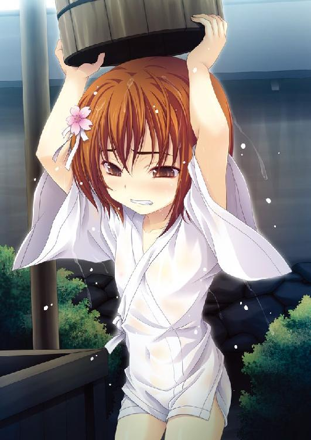
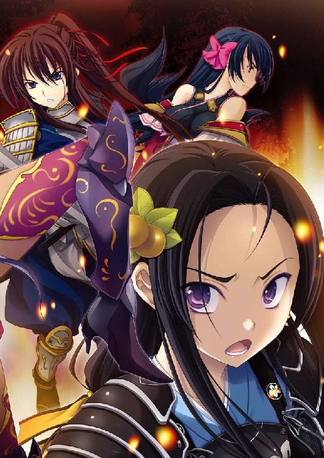
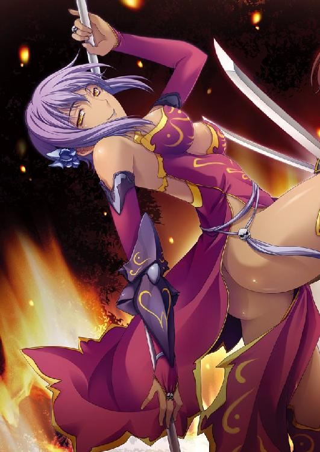
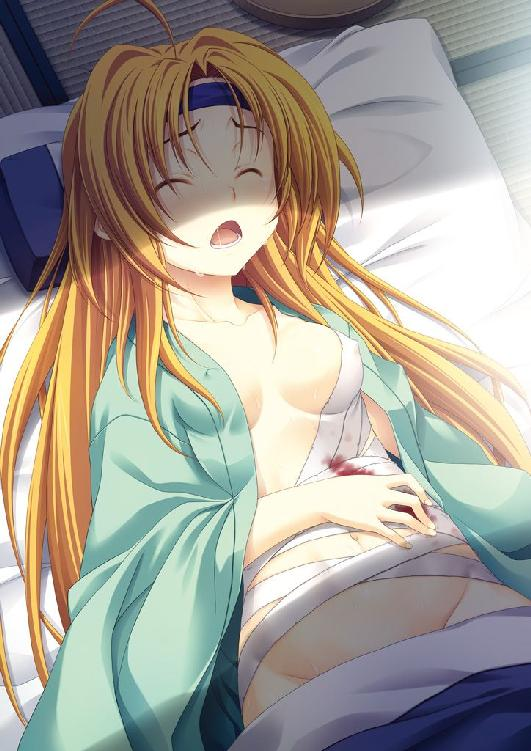
織田信奈の野望４
春日みかげ

本書に掲載されているコンテンツの著作権等の知的財産権およびその他すべての権利は、ソフトバンク クリエイティブ株式会社または正当な権利を有する第三者に帰属します。
本書の内容を権利者の許諾なく複製・複写・翻案・放送・出版・データ配信（送信可能化を含む）などすることはできません。
カバー・口絵 本文イラスト
みやま零
ところは東北地方、出羽国にそびえる米沢城。
奥州に割拠する一大名・伊達輝宗の本城である。
その米沢城の一角に、鬱蒼と繁る森があり、その森になぜか漆黒の南蛮教会が建っていた。
よく見ると、教会の屋根に掲げられている十字架が、上下逆さまになっている。
そんなアンチクライストな謎の南蛮教会から、早朝そうそうカン高い幼女の叫ぶ声が。
「小十郎───！」
梵天丸こと、伊達輝宗の長女・伊達政宗がお共の片倉小十郎を呼びつける声だった。
たとえ何里離れていようとも、小十郎は梵天丸の声を聞きつけることができるのだった。
「はいいいいっ!? 姫っ、こんな朝からボクを呼び出されるとはいかがなされましたっ!?」
当年取って十五歳、育ちのよい家老一族の娘に生まれた片倉小十郎。
梵天丸が生まれた時からお守り役をおおせつかり、それ以来女の子でありながらお小姓姿に扮してワガママな梵天丸にずーっとかいがいしくお仕えしてきた小十郎。このままではいずれ婚期を逃しそうだ。
とにかく小十郎がアンチクライスト教会に馳せ参じてみると、しばらく堺旅行にでかけていたはずの梵天丸が、南蛮かぶれの黒合羽をかぶったままの姿で祭壇の上に腕組みして屹立していた。
「ふははははは。小十郎！ 我はこれより奥州の覇者となることに決めたぞ！」
「な、なにを言いだすんですか姫？ まさかまた、堺で妙ちくりんな南蛮文化にかぶれて......奥州の大名家はそれぞれ複雑な姻戚関係を結ぶことで、決して互いに本気で戦わないようにしてるんですよ？」
「知らん！ 〝黙示録のびぃすと〟の前には、そんな古びた常識は関係ないのだ！ ふはははは！一刻も早く奥州の覇者にならねば、すでに京を抑えておる織田信奈に先を越されるのだ！」
「みみみ都は遠すぎます、わわわわれら奥州の人間には関係のない別世界です......」
「えーい黙れ小十郎。ちっちゃいことを言うでない！ 織田信奈はもっとデカかったぞ！ 手始めに仇敵の相馬家を攻める！ 〝びぃすと〟に逆らう敵は撫で斬りにするのじゃ～っ」
ひぃぇええぃ～、と気の弱い小十郎が情けない悲鳴を上げた。
「さささ堺で織田信奈にかぶれてしまったのですか、姫～？ あんなおっかない人の真似をしてはなりません！ 四方八方、敵だらけになっちゃいます！ そもそも、姫は伊達家の当主ではありません～！ お父上の輝宗さまが当主なんですよ～？」
「フ......やむをえまい。よいか小十郎、我は元服まで待っておれんのだ。我が野望のためならば、父上には楽隠居していただく」
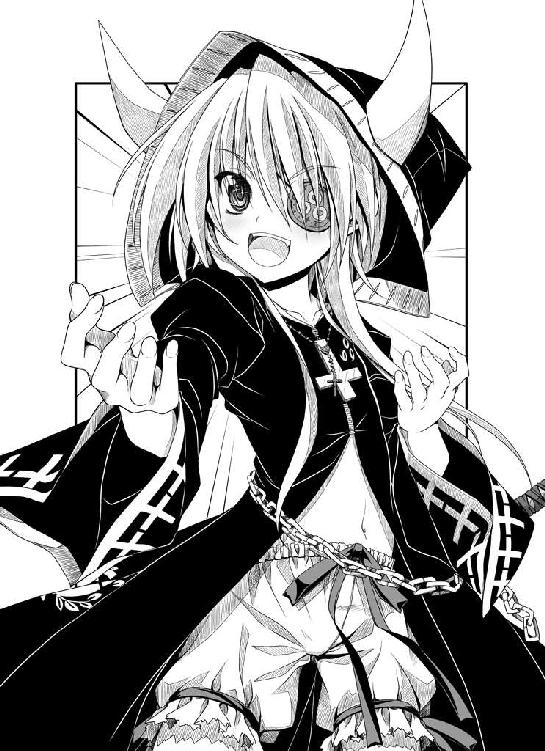
「えええ～？ 姫はまだ幼すぎます～、そんなの無理です～!?」
「〝黙示録のびぃすと〟たる我に家督を譲らぬともうさば、父上とてやっつけるのみ！ ああ、覇王の道とはなんたる茨の道であることよ！ だが我は敢えて修羅の道をゆく！ 〝ごるごだの丘〟を重い十字架を背負って上ったという〝じぃざす・くらいすと〟のように！ だがな、我はその〝じぃざす・ろうど〟を逆に進むのだ～！ 我こそは黙示録に預言されてきた〝あんち・くらいすと〟だからな！ フハハハハ！」
手を振り回したり、ぴょんぴょんと飛び跳ねたり。
さんざんオーバーアクションで演説したあと、梵天丸はけろっとした顔でこう言いだした。
「あとな。〝独眼竜政宗〟という超かっこいい通り名を準備していたが、あれはやめた」
「へ？ あれは、姫とボクが三日三晩一緒に徹夜して考えた通り名ですよ？ 唐国の歴史に名高い隻眼の英雄、李克用にあやかって捻り出したのではないですか。もとはといえば、姫が黒い衣を着用するようになったのも李克用の真似で......」
「まあ聞け小十郎。知っての通り、我は実は独眼にあらず。堺で未来から来たという妙な猿に教えられた。我こそは一天万乗の英傑にして、超強力な〝邪気眼〟の持ち主なのだと！ 未来のアキバとやらでは、我はこの瞳のおかげでモテモテなのだと！」
「邪気眼？ それはそのぉ、左右で瞳の色が異なる、という意味ですか？」
「そのとおり！」
瞳の色が左右で異なる。父親が南蛮人だからだ......南蛮商人との浮気の子だから仏罰が当たったのだ......周囲からそうささやかれ、母にも疎まれ、「我は醜い」といじけ、廃嫡寸前だったはずの梵天丸。「ほんもののパードレがいる本場の南蛮寺が見たい」と梵天丸が父におねだりした堺旅行も、家臣団から「いい厄介ばらいになる」「そのまま南蛮へ帰ってくれればいいのに」とばかりに背中を押されて、なかば追放同然のかたちで出立したのだった。お守り役の小十郎が同行を許されなかったのも、家臣団の妨害があったからだ。
だが堺から舞い戻ってきた今の梵天丸は、別人のような自信と野心とにあふれていた。
とはいえ、奥州の覇者だの天下をかけて織田信奈と決戦だの、小十郎にはまるで夢物語としか思えない。
「小十郎！ 我はこれより〝邪気眼竜政宗〟と名乗ることにした......フハ......フハハハハ......見ておれ織田信奈、我が必殺の邪気眼で奥州を席巻したあかつきには怒濤の如く京へ攻め入り、いずれが真の大魔王か決着をつけてくれるわっ！」
「ほほほ本気ですか、姫？」
「もちろんだ！ フハハハハハハ！」
「え、えーと......天下を統一して平和な世を築くという尊い志をもたれて帰ってきた、というわけなんですよね姫？ でしたらこの小十郎、粉骨砕身協力いたします......」
「いーやっ！ 我が野望は、あくまでも天下覆滅！ 世界大乱！ 聖書に預言されておる〝黙示録のびぃすと〟となって大暴れするのだ！ フハハハハ！」
ああああ～ん、姫が、姫が～！ 元気になられたのは嬉しいのですが、堺旅行ですっかりヘンになってしまいました～!? ボクはどうすればいいんでしょう～？
米沢城のはずれにある謎のアンチクライスト教会に、生真面目な小十郎の弱り切った泣き声が響きわたった──。
※
見たことのない光景だった。
深夜。
見渡す限りの山野─しかし、四方八方に鋤や鍬がうごめいている。
鋤？ 鍬？
これは武具ではなく、お百姓さんたちの道具ですぞ。
どうして......？
兄さまは、小谷城に向かったのではなかったのか？
相良良晴は深手を負って、そんな阿鼻叫喚の戦場をさまよっていた。
背中には、矢が突き立てられていた。
太股やすねにも、槍や罠による傷が無数につけられている。
もはや、まっすぐ歩くこともできず、刀を杖がわりにつきながらどうにか前へと進んでいたが......。
「ねね......ごめんな......もう、お前のもとには戻れねえ......」
それが、最後の言葉だった。
相良良晴は、がっくりと前のめりに倒れた。
魂だけは、なおも、京をめざして......。
「兄さまっ!?」
ねねは、怯えながら目を開いた。
戦場も、良晴の姿も、幻のようにかき消えていた。
ねねが目覚めた場所は、真っ暗な部屋......畳の上だった。
「......はあ、はあ、はあ......ゆ、夢でしたか......よかったですぞ」
ここは京の妙覚寺。
相良良晴とその仲間たちが宿として借りている寺。
隣の部屋には竹中半兵衛が臥せっていて、そして蜂須賀五右衛門と相良良晴は近江へ出かけたまま戻ってこない。
越前の朝倉家を奇襲するために出発した織田信奈軍。京で留守番をしていた良晴と五右衛門は、「朝倉家と浅井家は昵懇の仲。もしも北近江の浅井長政が今、朝倉家のために信奈を裏切ったら織田軍は退路を失って全滅する」と慌てて、馬を飛ばして近江へ向かったのだが......。
（妙ですぞ......今の夢は、夢と呼ぶには奇妙すぎるほどほんもののようでしたぞ）
幼いねねは、現実の戦場を見たことがない。
それなのに、まるで現実だったとしか思えないほど、ねねが見た夢はリアルだった。
まだ深夜。竹中半兵衛は神医・曲直瀬ベルショールから処方された飲み薬が効いてぐっすりと眠っているので、強引に起こして相談するのはためらわれた。
（あの殺しても死ななさそうな兄さまに限って、まさか......兄さまは槍も弓も馬術もへっぽこですが、ずぶとく生き延びることにかけてだけは、天下一品ですぞ）
今までだって......戦に出かけた良晴は、必ずねねが待っている家へと陽気な笑顔で戻ってきてくれたではないか。
ご当地のお土産を持って。
桶狭間の時だって、墨俣一夜城の時だって、清水寺の時だって......良晴はいつだって絶体絶命の危機を乗り切ってきた。
こんどだって、だいじょうぶだ。そうに違いない......。
何度も自分にそう言い聞かせようとしているのに、なぜだか、体の震えが止まらなかった。
もう一度、布団の中に潜り込んで、目をきゅっとつぶってみたものの。
ねねの胸騒ぎは、止まることがなかった。
※
「これが越前・朝倉義景の追撃軍かよ!? とんでもない数の敵兵だな！」
「うおおおおお、逃げるでや大将～！」
「敵は幾人ありとても～！」
「必ずや大将を姫さまのもとへ生還させるだみゃあ～！」
越前の金ヶ崎城から脱出した相良良晴とわずか五百人の命知らず野郎どもは、弓矢を背後から浴びながら必死の形相で山道を駆けていた。その誰もが、すでに体のどこかに傷を負っている。
攻め寄せてくる朝倉軍は、雲霞の如き大軍。
上洛して今川義元を征夷大将軍の位につける御所工作に成功した織田信奈は、新生今川幕府に忠誠を誓おうとしない越前の名門・朝倉義景を大軍で急襲した。
越前征伐に参加した武将の顔ぶれは、信奈自身にくわえ、織田家の二大家老・柴田勝家、丹羽長秀。
新参者ながら「天才」の片鱗を示している明智光秀。
小姓の前田犬千代。
そして同盟国・三河の松平元康。
名だたる面々、動員した総兵力は約三万。
老大国の越前朝倉家も二万を超える兵力を持つものの、信奈得意の奇襲攻撃がみごとに成功したため、準備が間に合わなかった朝倉勢は総崩れ。
信奈軍は、朝倉方の金ヶ崎城を速攻で落とし、木ノ芽峠まで進軍。
越前の本城・一乗谷城まであと一歩というところまで迫った。
ところがこの時、北近江を治める信奈の義弟（ほんとうは女だが）・浅井長政に変事が起きた。朝倉方に味方した父・浅井久政が長政を捕らえて浅井家の家督を奪い、越前の奥深くまで入り込んでいた信奈軍の退路を断ったのだ。
前方からは、朝倉軍、約二万。
後方に、浅井軍、約一万五千。
信奈軍は、まさに「袋のネズミ」となった。
信奈は京への困難な撤退を決めた。朝倉勢の追撃を踏みとどまって食い止めるしんがりの役目を買って出たのが、われらが相良良晴。
現代日本からなぜか戦国時代に来てしまった、戦国ゲーム大好き高校生。
織田信長ならぬ織田信奈に天下を盗らせるのが俺の使命だ、そうに決まったと独り合点して、口げんかを重ねながらも信奈に奉公してきた通称「サル」。
この絶体絶命の危機を前にしても、妙に陽気な男だった。
「俺のゲーム知識によれば、このイベントは〝金ヶ崎の退き口〟と言ってな。俺が藤吉郎のおっさんのかわりとしてこの世界に呼ばれたのならば、必ず信奈も俺も生きて京へ辿り着けるはずだぜ─おわあああっ!?」
がちいん、と良晴の鉢巻きの後頭部に鉄砲の弾が命中した。
「やべえ！ ちょっとでもズレてたら死んでた！ あわ、あわわわ」
「やれやれ。思い込みの強い男よ。鉛玉に当たって死ぬのは、つまらぬぞ」
竹中半兵衛に召喚された式神の前鬼が、宙をふうわりと舞いながらけたけたと笑った。
貴族のようないでたちの優男だが、人ではない。ときおり頭から狐の耳を出してきてぱたぱたと動かしていることからもわかるが、あやかしのたぐい─式神である。
「人間ってのは思い込んだもの勝ちなんだぜ前鬼。見ろよ、俺の人相は吉相そのものだろ？」
「いや相良、おぬし女難の相が出ておるぞ。前途にかなり厄介で難儀なことが待っておる」
「げっ？ なんでだよ。このしんがり部隊には野郎しかいねえんだぜ？」
黒装束に身を固めた松平家の忍び・服部半蔵が音もなく木々の間を跳びながら、氷のような視線で良晴をにらむ。
「相良良晴。貴様はこの〝金ヶ崎の退き口〟をいかにして生き延びるというのだ？ われらを蹴散らせば逃げる織田軍本隊を捕捉できる、そう覚悟している敵の攻勢はすさまじいばかり」
「そうだな半蔵、こうして逃げてばかりもいられねえ！ 織田軍の本隊を無事に京へ逃がすのが、俺たちしんがり部隊の仕事だからな！」
「われらはわずか五百ほどの人数。まともにぶつかれば蹴散らされるぞ」
「幸い、十兵衛ちゃんから借りた五十丁の種子島がある。朝倉勢の追っ手を銃撃しながら敗走しよう！」
「わずか五十丁だぞ。そもそもわれらは逃げるので精一杯、弾を込める暇もない」
あんの～、わしは九州から来たもんでごわすが～、と薩摩なまりの筋骨逞しい足軽が駆けながら良晴に献策してきた。
良晴の背中めがけて続々と降りかかってくる矢を、びしばしと素手で払いのけてくれる大柄な豪傑だった。
「薩摩の島津家には〝捨て奸〟ちゅう技があるでごわす」
逃げる途中、山道沿いに鉄砲隊を点々と伏せさせ、追っ手を狙撃するでごわす。
じゃが鉄砲は弾込めに時間がかかり、連発はできないでごわす。
そこで鉄砲を撃ち終えた兵はそのまま槍を持って敵中に突撃し、果敢に斬り死にするでごわす。
むろん、鉄砲がない足軽も順々に槍で突進するでごわす。
このようにしておいどんら五百人の足軽が順番に玉砕していけば、追っ手の追撃を大幅に遅らせ、しかも良晴どんを京へ逃げのびさせることも可能でごわす。
「大将一人を守るために、勇者全員が一糸乱れず順々に捨て石になっていくでごわす。一人でも臆病な者がおれば失敗するでごわすが、薩摩隼人もかくやの勇者揃いの相良隊ならばその心配はなかでごわす。これが島津家伝統の必殺の兵法〝捨て奸〟でごわす」
五百人の足軽たちが「乗ったぜ薩摩もん！」「俺たちゃとっくに命を捨ててるぜ！」と気勢をあげるが、良晴は走りながら首を横に振った。ひゅん、と今度は背後から放たれた銃弾が右の耳元をかすめていった。
「バカ野郎！ 俺一人だけ逃げのびてどーすんだよっ！ お前らを捨て殺しになんぞできるか！そんなのは相良良晴の戦じゃねえ！ 簡単に命をあきらめるな、全員で京へ帰り着くんだ！」
俺も種子島をかまえて戦うぜ！ と良晴が啖呵を切ると同時に、傷だらけになった地獄の勇者ども五百人が、「そりゃダメだみゃ大将！」といっせいに顔色を変えた。
「大将が種子島持って敵の足軽どもと撃ち合うなんて、聞いたことないみゃあ！」
「俺らは、相良さま、あんたを姫さまのもとへ生還させるために死ぬ覚悟！」
「だから！ 俺一人が生き延びるために、お前ら全員を捨て石になんてできねえって言ってるんだよ！」
「なにを言われるみゃあ！ わしらの命なんぞ、塵芥のようなものだみゃあ！」
「そうとも！ わしらはみな、あんたに自分らの夢を託したんだぎゃあ！」
「われら、名もなき足軽五百名。いかようにも、捨て殺しにお使いくだされみゃあ！」
こいつら......揃いも揃って......！
良晴は、思わず目に涙を浮かべながら、もう一度啖呵を切った。
「俺はなあ......ほんとは、お前らの中の一人だって、死なせたくねーんだよっ！ そりゃ俺は生きて信奈にもう一度会いたいさ。会いたいけど......足軽だろうが姫さまだろうが、同じ人間だろうが！ お前らだって、家族とか友達とか、いるだろうが！ お前らの帰りを待ってくれている人が、いるだろうが！ それなのに軽々しく『命は捨てた』なんて言うなよ！」
平和が常態だった二十一世紀の日本で生まれ育った良晴は、戦場での人の死というこの世界の現実に、まだ慣れていない。いや、おそらく決して慣れることはないのだろう。
「俺には家族はいない......っていうか、お互いに生きる時代が違っちまって、会えない。だが、お前らは違うだろうが！ だからさ......無理かもしれねえけど......それでも......全員で生きて京へ戻ろうぜ！」
自分たちの命を心から案じている大将の言葉に、決死隊の男たちは言いしれぬ感情の波に呑まれた。
なんちゅう、なんちゅう大将じゃ......！
こんな人、ちっとも侍らしくないみゃあ......！
なのになぜ......わしら、涙が止まらんのじゃろう......？
「甘いぞ相良良晴。ならば、背後に迫っているあの雲霞のごとき大軍をいかがするというのだ！」
と半蔵。前鬼が力を使って呪を唱えながら霧を張り巡らせているが、すでに朝倉勢は山の中に伸びる狭い街道へと殺到し、良晴たちに追いつこうとしていた。
「俺自身が鉄砲隊を指揮する。十兵衛ちゃんから借りた鉄砲五十丁を前面に押し出して追っ手を威嚇しつつ撤退だ！ だがな野郎ども、斬り死にはするな！ 最後まで生きることだけを考えろ！」
そうだ。ここからはもう、戦うしかない。
逃げ続けていた良晴は反転し、山道を殺到してくる朝倉勢のほうをにらんで種子島を担いだ。
「急げ！ 五十人の撃ち手が必要だ！ この五百人の中に、種子島の名手はいるか？」
「わしゃあ、槍専門だみゃあ」
「わっちは、日本刀よ」
「わが得物は、鎖鎌」
「私は落とし穴。ふっふっふ」
「おいどんは、突っ張りでごわす」
......いないようだった！
この決死隊は、みな、腕に覚えがある一騎当千の豪傑たち。
ゆえに、逆に種子島には疎いやつらばかりなのだ。
これでは、まともな鉄砲部隊を組織することは不可能だ！
「おわっ!? 十兵衛ちゃんは虎の子の鉄砲五十丁を気前よく貸してくれたが、かんじんの鉄砲隊の名手五十人は十兵衛ちゃんとともに撤退しちまってる!?」
「相良良晴！ はやくしろ、敵は目と鼻の先だ！」
「ふっふ。相良良晴はマヌケなサル面のおっぱい好きだが、実はなんぞ名案があるのであろう。未来の芸無知識とやらで」
その、ぶらぶらと宙を舞っていた前鬼のからかうような一言が、追い詰められた良晴にひらめきを与えた。
鉄砲──織田軍──戦国ＳＬＧ『織田信長公の野望』といえば！
「──そうだ！ 〝三段撃ち〟だ！」
「「「「三段撃ち!?」」」」
すでに槍持ち同士の接近戦がはじまり、山中に激しい血と怒号が飛び交うなか──。
良晴は手短な言葉で作戦を説明した。
「いずれ〝長篠の合戦〟で織田軍が使う作戦だ、いっさい他言無用！ 鉄砲の弱点は一発撃つと弾を込める作業に時間をとられ、連射できねえってことだ。二発目を撃つ前に敵兵が斬り込んできちまう」
「だから狙撃手は一発撃ったら、あとは斬り込むしかないでごわすよ」
「そこで五百人を三つの担当に分ける！ 種子島の筒先に火薬と弾を込める係！ 火縄に火を付ける係！ そしてその種子島を撃つ係だ！」
いわゆる織田信長の「三段撃ち」は、三千丁の鉄砲を千丁ずつに分けて休む暇もなく鉄砲を連射させる作戦だったと言われている。だが、「三段撃ち」にはもうひとつの異説があって、それは「種子島を撃つ係と弾を込める係に分業させることで射撃時間を短縮していた」という説である。
良晴は、「弾込めから銃撃までの作業を一人でやれる足軽がいない」という苦境に立たされたこの時、不意に後者の説を思いだしたのだった。
「全員が一丸となって助け合い、五十丁の種子島を撃ち続けるってわけだ！」
「大将、それならば三倍以上の速度で種子島を連射できるぎゃあ！」
「それほどの速さで撃たれれば、敵さんも驚いて算を乱すでごわす」
目の前に、敵の大軍が突進してくる。すでに乱戦になりつつあった。
だが、ごく狭い山道である。五十丁でも矢継ぎ早に撃ち続ければ、敵は大混乱するだろう。
覚悟はしていたとはいえ、今さらながら良晴は、足が震えてきた。
「よいな相良良晴。撃つことを迷うな。迷えば、お前が死ぬぞ」
隣で涼しい顔をしていた前鬼が、言い放つ。
「お、おう！」
種子島を渡された指が、肩が、震えている。
狙いをつけられない。
これは、ゲームではない！
もしもただ自分が生き延びたいというだけの戦であれば、さしもの相良良晴もここで心が折れてしまったかもしれない。
だがこの時、良晴の心の中には、ぼうっ......とおぼろげながら、光り輝く信奈の凛とした顔が、浮かび上がった。
（サル。あなたが心を痛める必要はないのよ）
あれ......。
これって、俺じゃなくて、勝家に言った言葉だよな......？
（ねえサル。わたしの目は、いつも十年先、百年先を見ているのよ。誰も理解できなくても、わたしには自信がある）
ああ、知っている。
俺は、知っている。
俺だけは、お前が正しかったということを、知っている。
それなのに、ついにお前が誰にも理解されなかったということも、知っている。
（だから、心が痛む時は念仏のかわりに『天下万民のため』という言葉を唱えなさい。わたし一人が罪をかぶればいいの）
バカ野郎......お前がこの世界に生まれてきた時にはもう、この国は未曾有の戦乱に巻き込まれていた。
お前以外の誰も、この国に再び平和をもたらそうとしなかった、いや、できなかった。
お前一人の罪で、あるわけがない！
俺だって......！
信奈。お前を守るためなら、俺だって......！
「うわああああ......！」
良晴は、目をつぶって引き金をひいた。
弾は、当たらない。
即席の素人鉄砲隊も、みな、種子島の扱いには不慣れだ。
至近距離からの狙撃とはいえ、ほとんど命中しなかった。
だが、それでも霧に覆われた山道で不意に銃撃された朝倉の先鋒隊は、時ならぬ種子島の大轟音に案の定、慌てふためいた。
「種子島は単発じゃ！ もう撃たれる心配はない、斬り込めえ！」
そう叫んで軍配を振り下ろした敵軍の大将の兜に、どうん！ と良晴が矢継ぎ早に放った二発目がまぐれ当たりで命中した。
大将は「ば......バカな......」とうめき、失神して落馬した。
「次だ！」
息をつく暇もなく、良晴たちは三発目を放った。
「ありゃあ、連発銃だ！」
「織田家はやっぱり南蛮渡来の新兵器を持っていたんだあ！」
わあっ、と朝倉勢の先鋒が崩れた。
良晴の目論見が、当たった。
「服部党、参るぞ」
半蔵の一喝と同時に十数名の忍びの者たちが、混乱する朝倉の先鋒隊の中へと突進し、無言のままいっせいに手裏剣を投じ、容赦なくクナイで切り裂き、撒菱を撒き散らし、煙幕を張った。
もともと霧のために不十分だった視界を煙幕にふさがれ、種子島の轟音によって聴覚まで奪われた朝倉先鋒隊は、さらなる大混乱に陥った。
そして。
天地を揺るがす、大爆発。
冷酷非情な服部半蔵が、敵の軍勢の中に爆薬を仕掛けて火をつけたらしい。
「今だ！」
良晴は、「撤退！」と叫び、五百人のしんがり部隊とともに朝倉勢に背を向け、再び山の中をいちもくさんに駆けた。
高校時代にドッジボールの授業で見せた逃げ足の速さは、戦国時代に来てからの数々の戦場働きで鍛えられ、ますます磨きがかかっている。
「よくやったぞ相良良晴。仕掛けたほうろく玉が炸裂するまで、朝倉軍の先鋒をあの場に釘付けにできた」
いつの間に追いついたのか。
音もなく良晴の隣を並走していた半蔵が、抑揚のない声で良晴を珍しく褒めた。
「半蔵！ いくらなんでも残虐すぎるじゃねえか！ 爆弾で足軽たちを吹き飛ばすなんてよ！」
「ふん。これでかなり時間を稼げたが......ほうろく玉は残り一つ。ここからはあくまでも貴様の勘が命綱だ」
「逃げることについては任せておけ」
さすがに決死隊へ自ら志願した五百人、いやすでに一割近くが倒れていたが、揃いも揃って体力だけは常人離れしている連中だった。
超人的な脚力を誇る忍びの者たちの速度に合わせて全力で山を駆けているというのに、誰も脱落しない。
前鬼などは、走るのが面倒らしく、ふわふわと低空を飛んでいた。
──戦場に、奇跡が、起こっていた。
前鬼が呼び出す霧と、良晴考案（？）の三段撃ち、そして半蔵率いる忍び部隊の攪乱作戦──この三者がみごとに融合して、しんがり部隊はなんと実に五度までも山中で朝倉勢の追撃を振り切ってみせたのだ。
しかしこの奇跡を起こした最大の功績は芸無知識から捻りだされた三段撃ちの策ではなく、「全員で京へ帰ろうぜ」とご陽気に声を張り上げる相良良晴に対するしんがり部隊の勇者どもの士気と忠誠心の異常な高さにあることに、前鬼と半蔵だけは気づいていた。
「一刻も早く追っ手との距離を空けてぇが、この先は山越えの難所が続く。休まなきゃ、京までは走りきれねぇ」
駆けるだけ駆けた良晴は、仲間たちを休ませる頃合いを見計らい、峠越えの隘路を目前に部隊をいったん小休止させた。
良晴はどうやら追い詰められれば追い詰められるほどに肝が据わるらしい。休むと決めたら笹の葉の上に大の字に寝転がって思いきり休み、いびきまでかきはじめた。
前鬼が「こやつ、ずぶとさだけは人間離れしておるな」と笑い、足軽たちが「戦はからきし弱いし鉄砲の腕も下手っぴいだけど、立派な大将だぎゃあ」と嬉しそうにうなずきあう。
良晴は十分ほど眠って、むくり、と起き上がった。
「よーし、それじゃ行くぜ！ ここからは山登りだぞ！」
ここまで、臆病風に吹かれて逃散した者は、一人もいない。
しかしそれでも、多くの仲間が減っていた。朝倉兵との戦いで倒れた者が大半だが、自らの足で走れなくなった者が「大将の足手まといになっちゃいけないみゃあ」とこっそり姿を消したりもしているらしい。
あの、薩摩から来たという眉が太い男の姿も、なかった。
（ちくしょう......！ あの男も死んじまったのか......！ ちくしょう......！）
良晴の胸は張り裂けそうに痛んだ。
それでも、こんな絶望的な状況で大将が湿っぽくなれば士気が落ちると知っている良晴、歯を食いしばって空元気の笑顔を絶やさない。
深夜に、岐路が、訪れた。
「われらはこのまま山中を進む。これより、越前を抜けて若狭へ入る」
切り立った崖を登り終えて山頂に立った半蔵が、つぶやいた。
続いて、良晴たちが登ってくる。
誰もが、文字通り全身傷だらけになっていた。
敵に「あれがしんがり部隊の大将だ」と狙われ続けてきた良晴などは、額も頰も血で染まっている。自分の血と返り血が混じり合って、自分でももうどこを怪我しているかすらわからない。腹も空いていた。喉も渇いていた。
だがその眼光は鋭く、いささかも気力だけは萎えさせていない。
「みんな、足はだいじょうぶかっ!?」
「まだまだ走れますみゃあ！」
「妙に気分が高揚してますみゃあ！ いけますみゃあ！」
「辛くなった時には、姫さまの笑顔を思い浮かべれば勇気百倍、鋭気りんりんだぎゃ！」
「ならばよしっ！ 若狭まで逃げれば敵も追撃をあきらめるはずだぜ！ あと一歩だ！」
おおー、と血まみれになった決死隊が半ばやけくそで威勢よく怪気炎をあげたその時。
「まずいな相良。どうやら実にまずいことになりそうだ」
それまで常に恬淡としていたはずの前鬼が、眉をひそめて良晴に小声でささやいてきた。
「なんだ、前鬼？」
「若狭の土御門が、朝倉側についたようだ」
「土御門？ なに、それ？」
「──日ノ本の陰陽師の頭領だ。かつては安倍家を名乗っていた者どもでな、今は土御門家と称して戦乱の京を避け、若狭に隠棲している連中よ」
もしかして平安時代に活躍したスーパー陰陽師・安倍晴明の子孫たちか......京でちっとも見かけないと思ったら、若狭にいたのか！ と良晴がうめいた。
「その土御門がなにを思ったのか、お前を討ち取る気になったらしい。この先に結界を張ってわれらを待ち伏せているぞ」
「け、結界？」
俺の目にはなにも見えねえ......と良晴が目をこらす。
夜の闇の中、どこまでも山が続く、そんな光景が眼下に広がっているばかりだった。
半蔵も「忍びが作る結界とは、いささか勝手が違うようだ」と首をひねった。
だが、前鬼だけは牙をむきだし、瞳を金色に輝かせながら、常人には見えぬ土御門の結界──そのまばゆい光を凝視していた。
「ふん。結界が狭まってくる......どうやら向こうから、来たようだ」
その前鬼の白い頰に、つっ......と汗が一筋。
来た。
土御門の、陰陽師。
己の肉体を使うことなく。
重力に引かれることなく。
見えない力に支えられているかのように。
山頂へと、せりあがってくる。
「こいつが......」
「土御門？」
「そう。ボクが、土御門家当主、土御門久脩。そろそろ京へ戻ろうかな、不意にそんな気になったんだ。となれば、新たに京の支配者となるであろう浅井さん朝倉さんへの手土産が必要でしょ。そこで今宵これより、〝織田家のサル〟の首をもらおうと決めたんだ」
十歳ほどの、幼い少年だった。
青白い顔、人形のような冷たい瞳。その陰陽師としてのいでたちだけは半兵衛に似ているが、凍りついたかのようなその心根は半兵衛とはまるで正反対のようだった。
だがその冷たい笑顔は、自分こそが強者であるという絶対の自信の表れなのだ。
このチビガキ、ただ者じゃない上に、人を人とも思っていない。かわいげのない子供だぜ......とうそぶく良晴は、自分が全身から冷や汗を流していることに気づいた。
たしかに、土御門久脩はまだ子供だ。
それゆえ、子供特有の残虐さを、その小さな体の内側に秘めていた。
力を、それもとびっきりの大きな力を持っている。
だから、力を、使ってみたい。
敵を、殺してみたい。
捕らえた昆虫の翅を無造作にむしり取るかのように。
そこには、人間的な意味での、悪意はない。
憎しみもない。
純粋に己の力を行使したいという子供らしい欲望が、土御門久脩の行動原理そのものなのだろう。
だから......。
命の尊さだの、他人の心情だの、そんな言葉は......童子のまま由緒ある陰陽師宗家の頭領に君臨してしまった土御門久脩には、通じない。
「くす、くす、くす」
やばい敵が出てきてしまったな......と良晴はようやく気づいた。
「よく若狭まで逃げて来てくれたね。逃げ足の速い織田信奈はすでに近江へ入ったようだけど、有名な〝織田家のサル〟の干し首を持参すれば、浅井さん朝倉さんもさぞ喜ぶだろうなあ──」
（子供であろうが、死合を挑んできた者は殺すのみ）
半蔵が無言で手裏剣を投げるが、夜空に高々と浮かぶ土御門久脩の体には当たらない。
見えない壁のようなものが、久脩を守護しているかのようだった。
恐れを知らない決死隊の勇者どもが、「ざわ......ざわ......」と呼吸を乱しはじめていた。
そして、式神──。
夜空に、土御門久脩の背後に──数十体の、異形を誇る式神どもの影。
前鬼が、吼えた。
「久脩とやら。土御門家は、京の守護という任務を捨てて若狭へ逃げ出した負け犬の群れよ」
「......へえ。そこの狐顔の貴族さんは、式神だったのかい。完全な人間の姿に化けられる高等な式神は、この不世出の天才陰陽師、始祖さま・安倍晴明公の再来と称えられるボクもはじめて見たよ。だが、残念ながらそちらの式神は一匹だけのようだね？ 式神同士の戦は質よりも量。キミがいくら強くとも、ボクが呼び出したこの数には勝てない」
「久脩よ。なにを血迷って今さら京へ戻るなどと言いだした。これは子供の遊びではないぞ」
ふふっ、と久脩が赤い唇をにぃっと吊り上げて冷笑した。
「竹中なんとかという田舎陰陽師が、こともあろうに織田信奈に仕えて京へ来た。この陰陽師の頭領たる土御門家のボクを差し置いて、〝今孔明〟などと呼ばれてもてはやされているらしい。実に不愉快だよ。だから面倒っちいけど京へのぼって、身の程知らずの田舎陰陽師を誅しなくちゃ──ボクと竹中なんとか、どちらが最強の陰陽師かを決める戦いをしなくちゃね。さあ、これで説明はじゅうぶんだよね？」
「どこまで上から目線なんだよこのガキ、人様と話す時くらい地上に下りて来い！」
良晴が、ぴょんぴょんと跳び上がりながら食ってかかる。
「はあ。いくら跳んでも、届くわけないでしょう？ もしかしてバカなの？」
と、いうわけで。
キミたちには、ここで全滅してもらうよ。
闇の中......。
血に飢えた式神の群れ数十体が、山頂に陣取るしんがり部隊を空中から襲撃してきた。
「よよよ妖怪変化どもだぎゃあ！」
「あんなのにどうやって勝つんだみゃあああ！」
一騎当千、命知らずの武勇を誇る男どもも、夜空を覆い尽くす異形の式神の群れには悲鳴をあげるしかなかった。
士気が失われれば、どれほどの武勇を誇る軍団であろうとも、戦闘力はなきに等しい。
次々と、まるで雑魚のように無残に吹き飛ばされていく。
（でたらめな数の式神を召喚しやがって！ 前鬼一人じゃ勝負にならねえ！ 忍びの体術もあやかしの式神には通じない！ だが、俺は絶対にあきらめねえ！）
良晴は、種子島を、構えた。
「ち......ちくしょうおおおおおっ！」
たとえ、俺がここで死ぬ運命だったのだとしても、だ。
俺は......。
最後の最後まで......運命とやらに、抵抗してやる！
※
「姫さま。朽木谷に入りましたよっ！ この難所を通り抜ければ、あとは一直線。京は目の前ですよっ！」
金ヶ崎城に「サル」こと相良良晴を置き捨てて──織田信奈は今、険しい山道・若狭街道を名馬「利刀黒」に乗って進んでいた。
京から出陣した時には、琵琶湖沿いの平坦な西近江街道を堂々と行軍した。だが今、その西近江街道は敵方の兵士であふれている。険しい山道を進む以外に、退却するすべはないのだ。
ここまで、不眠不休の逃走劇だった。
涙は、枯れた。
ほとんど息もつかずに駆けてきたのだ。
体にもう、涙として流せる水分すら、残っていない。
後悔。
胸の痛み。
胸が引き裂かれそうな、悲しみ。
ほんとうならば、もう、信奈の小さな体はそのあまりにも大きすぎる悲しみのために壊れてしまっているはずだった。
だが......。
今の信奈は、生きねばならなかった。
泥をすすってでも、生き延びて京に辿り着かなければ、良晴の犠牲はすべて無駄になるのだ。
だから、信奈は、唇をかみ破りながら、気力を奮い起こした。
息子・長政の前途も、信奈の天下布武の野望も、良晴の未来も、すべてを台無しにした愚物・浅井久政への、怒り。
その怒りだけが、ほんとうなら馬から滑り落ちて号泣せずにはいられない信奈を、かろうじて支えていた。
しかし、その怒りも......。
すでに、限度に達しようとしていた。
「姫さま、だいじょうぶですか？ この朽木谷は、朽木信濃守という国人が支配する土地です。信濃守は浅井家に従属している身で、われらの敵に回っているやもしれません。しかもわれらの行く手には朽木城が立ちふさがっていて、無断で通行するわけにも参りませんっ」
「......姫さま。ここでいったん停止する」
左右に侍った勝家と犬千代が、信奈を慌てて押しとどめた。
二人とも、すでに全身傷だらけである。
真っ先に戦場から逃げ出した信奈主従とはいえ、決して安全な道をらくらくと逃げてこられたわけではない。それどころか、「あれが織田家の姫だああ！」「生け捕りで金百貫、首でも五十貫だべ！」と目を血走らせて続々と湧いてくる落ち武者狩りの連中につけねらわれ、追い回されてきた。
しかも、主君の信奈は一刻も早く京へ戻らねばならない。帰還が遅れれば、「信奈死す」という虚報が広まり、京はどうなるかわからない。京が敵対勢力の手に落ちるよりも先に生還できれば、即座に軍を反転させ、追撃してくる浅井朝倉勢に挑みかかることもできる。豆粒ほどのほんの小さな可能性ではあるが、しんがり軍を率いている良晴を救いだせるかもしれない......。
ゆえに信奈はなによりも京への生還と、そして行軍速度を重視しなければならなかった。
今、彼女を守っている家臣はほんとうに最低限の少人数である。
織田家一の豪勇を誇る「六」こと柴田勝家、そして小柄だが巨大な朱槍を扱うかぶき者の前田犬千代。
この忠誠無比の二人がいなければ、信奈はもう五度も六度も首を落とされて晒されていたに違いない。
「ひ、姫さま。あの......」
「......朽木信濃守と交渉して、味方につける」
「......デアルカ」
うつろな瞳の信奈が、覇気のない声でつぶやく。
「......万千代たちは？」
「後続部隊の長秀は、サルのしんがり部隊が無事に逃げてこられるよう、険阻な山道をできるかぎり整備しながら退却していますっ。光秀と元康もたぶん、長秀に協力しているかと！」
「......そう。無駄なことを......」
「姫さまっ！ 無駄なんかじゃありませんっ！ みんな、サルを死なせまいと、一所懸命に戦っているんです！ いいかげんに元気を出してください、姫さま！」
「......そんなの、偽善だわ。サルを捨て殺しにしておいて......みんな無駄だとわかっていて......」
「姫さまっ!? いったい、どうしてしまわれたんですかっ!? こんなの姫さまじゃないですっ！」
「ねえ、六......父上が病に倒れた時、坊主どもをたくさん集めて祈らせたことがあったわよね......」
「は、はいっ？ あ、ありましたけど、それが......？」
「......坊主どもは祈禱をするとかなんとか言って意味もない経文を唱えて騒いでいたけれど、父上は結局助からなかったわ。わたしは、坊主を呼んで祈禱をさせることで〝自分は父上を心配していた〟って言い訳がほしかっただけなのよ。坊主どもはそんな人間の弱い心につけこんで金を稼いで食っているの。だからわたし、あいつらをみんなお堂に閉じ込めて一人残らず焼こうとしたわ。わたしはね、噓つきが嫌いなの。どうせ父上が助からないとわかっていて、祈禱をしてみせるなんて......あんなの、偽善だわ......！」
「た、たしかに、そういうこともありましたよね、姫さま。でも、あの時は平手のじいが間一髪、燃えるお堂から坊さんたちを助け出してことなきをえましたっ！」
あの時の姫さまのお怒りはすさまじかった......まるでほんものの第六天魔王のように......と勝家がぶるっと震えた。
「......父上の葬儀だってぜんぶ、無駄ごとだったじゃない。死んだら人間は灰になるの。もう、痛いとか苦しいとか、そんな感情もぜんぶ消えてなくなっちゃうの。わたしたちが葬儀をやって坊主に経文を唱えさせてみんなでしくしく泣いてるのも、結局は、自分のためで......自分が悲しいから葬儀をやっているだけで......死んだ人間にとっては、まったくの無駄ごとだわ。だからわたし、うつけ姿で父上の葬儀に乱入して、暴れまわって......」
「姫さま。今は、そんな話をしている場合では......！」
「......サルの退路、ですって？ サルはもう帰ってこられないってわかってるくせに......ハン。自分たちでしんがりをやらせておいて......〝死ね〟ってサルに命令しておいて......あとから役に立たない退路を作って善人のふりをしようだなんて。そんな自己満足なんて、葬式と同じよ。ほんとに、お笑いだわ......道化芝居だわ。でも......でも、サルに〝死ね〟って命令したのは......万千代たちじゃなくて......この、わたし......わたしなのよね......う......ううううっ......」
もう、涙なんて一滴残らず流し尽くしたと、思っていたのに。
また......流れてくる。
目の奥が......心の奥底が、抜けてしまったかのように。
「ああ、姫さまが......姫さまがどんどん壊れていくぅ！ 姫さま、なんとおいたわしや......」
どうしていいかわからない勝家がおろおろと涙目でうろたえている横で。
ぱんっ！
「......姫さま、いいかげんにする」
犬千代が、信奈の横っ面を力いっぱい張り飛ばしていた。
「......泣いていても、無駄。姫さまが生き延びなければ、良晴がしんがりを志願した意味がなくなる」
ななななんてことするんだ犬千代～、と勝家が悲鳴をあげる。
しかし、このビンタが、壊れかけていた信奈の心を、ぎりぎりのところで立て直した。
「......犬千代......？ わたし、なにをしていたのかしら......？ ここは、どこ......？」
「......ここは朽木谷。これから朽木信濃守と交渉しなければならない」
「そう......そうだったわね」
「......姫さま。良晴は生きている。今はそう信じるしかない。長秀たちも、みんなそう信じているからこそ、良晴のために道を作るという危険を冒しながら厳しい撤退戦を続けている。自らしんがりを志願した名もなき足軽たちも、姫さまがそんな顔をしていたら、浮かばれない......」
はっ、と信奈はわれに返ったかのように、目を見開いていた。
良晴は、一人で戦場に置き捨てられたのではない。
良晴の忠義（と、忠義以外のなにか）に魂を震わせた五百人の足軽兵たちが、良晴のために、そして信奈のために進んでしんがりを志願したのだ。彼らの多くは、金で雇われた傭兵。逃げ出してしまっても裏切っても構わない立場だったというのに......。
自分は、サル一人を心配して......サルと自分のために命を投げ出してくれた彼らのことを、彼らの命の重さを、忘れていた......。
信奈は、これ以上犬千代たちを心配させてはいけないと、つとめて笑顔を作った。
「──ありがとう、犬千代。わたし、どうかしていたわ。そうね、あのサルがそう簡単に死ぬわけないものね！ きっと、お尻を叩いて朝倉勢をおちょくりながら、すばしっこく山の中を逃げ回っているのよね！」
「......（こくり）」
「大将であるわたしがめそめそしている場合じゃなかったんだわ。ごめんなさい、犬千代。京へ着いたら、ういろうをあげるわね」
「......（こくり、こくり）」
「姫さまが、目を覚まされたああっ！ でかした犬千代っ！ それにしてもサルめ、こんなに姫さまを悲しませるなんて......絶対にお仕置きしてやるからなっ！」
「......犬千代も、良晴が戻ってきたら槍で突く。しんがりをつとめて涙の戦死なんて、良晴の柄じゃない」
「よーし！ めずらしく気があったな、犬っ！ あたしたちでサルをぎたんぎたんにしてやろうぜっ！」
「......けちょんけちょんに、する」
勝家も犬千代も、信奈を励ますため、涙をこらえて空元気を出しているのだ。
（二人とも、金ヶ崎を脱出してからここまでいちどもサルを想って泣かなかった......ほんとうは、六も犬千代も悲しくて悲しくて大泣きしたいはずなのに......わたしのためなんだわ。わたしに気を遣って......わたしをこれ以上悲しませまいとして......万千代たちだって......）
信奈は、わあっと泣きだしたくなる激しい感情をぐっと抑えながら、
（決めたわ。京へ生きて帰るまでの間、涙はもう流さない）
と心に誓うと、行く手を遮る朽木城を見上げてみた。
「朽木谷......まるで京の裏側にひっそりとたたずむ隠れ里ね。無断で押し通るわけにはいかないの、犬千代？」
「......この小勢では、難しい。朽木谷は歴代足利将軍の避難場所に使われてきた特別な地。誰も無断では通れない。押し通ろうとすれば、問答無用で襲いかかってくる」
「デアルカ。ぐずぐずしている暇はないわね」
「でも、誰が朽木信濃守と交渉するんだ、犬千代？ あたしは面識ないよっ」
と、勝家。
「......犬千代もない」
「長秀か光秀がいてくれたら、うまく交渉してくれるんだろうけどなあ。あいつらが到着するのを待つか......」
「それはダメよ六。朽木信濃守は浅井家に従属しているのでしょう？ いつ攻撃してくるかわからないじゃない。このまま谷に潜んでいるわけにはいかないわ」
それに、早く京に戻って「織田信奈健在」を天下に示し、軍の態勢を立て直し、そして......サルに援軍を出さなきゃ......という言葉を信奈は飲み込んだ。
「そ、そうですねっ！ でもあたしが使者に立つと、たぶん揉めるだろうなぁ......あたし、口下手だし。いっそ会合の席であたしが朽木なんとかを殺しちゃいましょうか、姫さま」
「はあ......バカね六。わたしたちはまだこの先も逃げ続けなければならないのよ。そんな無体な真似をしたら、もうこの先、誰もわたしたちを通してくれなくなる。自分で自分の首を絞めるようなものだわ」
「ぎょ、御意っ！ うああ、すみません......あたしってば脳筋で......」
「ノーキン？」
「サル語です、姫さま。意味はよくわからないんですが、あたしをバカにしている言葉らしいです。たぶん、あたしの脳みそが筋肉でできていると言いたいんじゃないかと......って、言っててだんだん腹が立ってきたああっ！ あんの、サルめぇええええぇ！」
「サルらしいわね」
犬千代も、ふるふる......と首を横に振る。
口数少ないし人見知りするので使者は無理、という意思表示らしい。
「この面々でいちばん弁が立つのは、わたしね。決めたわ。わたしが直接、朽木信濃守に会いに行くわ！」
信奈が意を決して、馬を進めようとした。
「だだだダメですよっ、姫さまああっ！ そんなの逆効果ですっ！ 飛んで火に入る夏の虫じゃないですかああ～！」
「......絶対ダメ。姫さまは弁は立つけど、毒舌の上に唯我独尊、人の怒りを無駄に買う」
勝家と犬千代がけんめいに信奈を押しとどめる。
「でも、だったら誰を交渉役に立てるっていうのよ？」
「──うふ。このわたくしが、参りましょう」
茂みの奥から──。
唐風の派手な衣装で着飾った、褐色の肌を持った麗人が、馬の背にだらしなく仰向けに寝そべりながらゆっくりと現れた。
「久秀っ？」
「......松永弾正」
松永弾正久秀。
通称、「蠍」。
京を荒らし回った謀反常習犯。
奈良の大仏を焼いた、主君の三好一族を次々と毒殺した、先の将軍足利義輝公を襲撃して足利幕府を滅ぼした──無数の暗黒伝説を誇る、戦国乱世に咲いた毒の華。
ぷかり、と長煙管をふかしながら、「くすっ」と妖艶な笑みを浮かべて、驚いている信奈たちの顔を眺めている。
「今までどこへ消えてたんだよ、お前っ!? さてはこっそり逃げようとしたな！」
「......急に出てくるなんて、あやしい。姫さまを裏切るつもりかも」
「くすくす。たしかに、今ここで信奈さまを裏切ればわたくしは大和一国の主から京の支配者に返り咲けるかもしれませんわ。いかがいたします、信奈さま？ もしかしたらわたくし、朽木信濃守を説得して、そして──浅井朝倉方につけたりして」
よくもいけしゃあしゃあと～！ と勝家が刀に手をかけるが、信奈は勝家を押しとどめた。
「弾正！ あんたに任せたわ。わたしは、絶対に生きて京へ戻らなくちゃいけないの！ それも、少しでも早く！ お願いね！」
「姫さまっ!? 信じるんですかっ、こんなやつをっ!?」
勝家がなおも制止するが、信奈と久秀は目と目を合わせてうなずきあった。
信奈は、どこか「蝮」の斎藤道三に雰囲気が似ているこの稀代の悪女を、なぜか気に入っているらしかった。
美濃を奪い、近世的な商業立国をめざして天下統一をうかがった道三が信奈にとっての「天下布武」の師であり、第二の父であるとすれば......。
規格外の伝統破壊者・松永弾正久秀は、これまた規格外の娘を「うつけ」と嫌う実母を持つ信奈にとって、似た者同士であり──あるいは、信奈がはじめて出会った、「母親的な存在」なのかもしれなかった。
「うふ。信奈さま？ いまや、あなたさまこそが京を統べる弾正。織田弾正大弼信奈さまですわ。今のわたくしはただ、あなたさまの影として働くのみ」
「いいのよ。弾正は弾正でしょう？ それに、わたしは〝信奈〟でじゅうぶんだわ」
「まあ。おそれおおくもやまと御所から授かった官位をお飾りとしか思っていないなんて、悪いお方。そういう人、好きですよ。うふっ」
しばしお待ちあれ、と目を細めて微笑みながら馬の背に座り直した久秀が、朽木城へとただ一騎で歩を進めはじめた。
「幸いにも、相手は小僧ですわ。すぐに、朽木信濃守を籠絡して参りましょう」
長く赤い舌で自分の濡れた唇をなめながら、久秀が稀代の悪女という呼び名にふさわしい黒い笑みを浮かべてみせた。
その、これまで幾人の人間を毒殺してきたかわからない悪女の凄惨な笑顔を見るや否や、 ぞおおおっ......と勝家は震えあがった。
はるか西方の異国人の血をひく久秀の容姿が人でないもののように美しいだけに、なおいっそうおそろしい。
「あああ......なあ犬千代、あたしは気が気でないよ。姫さまは、どうしてあんな化け物じみた手合いと気が合うんだろう？」
「......さあ......謎......」
「猛毒を持った蠍と蝮に、あたしのおっぱいをつけねらってくるエロザル。ろくな動物がいないよなっ」
「......犬は、いい動物」
「ちょっと？ 聞こえているわよ、六？」
「すっ、すみませえええんっ!?」
今は弾正にわたしたちの命運を託すしかないの、弾正は絶対にわたしを裏切らないわ、と信奈は大きくうなずいた。
※
「お、おお。そなたが、松永弾正か!? ずいぶんと日焼けしておるな。さすがは歴戦の武将」
朽木城の〝謁見の間〟に久秀を通した朽木信濃守は、御曹司然とした若い男だった。
貴人が俗世から隠れ住むための秘境といえる、この朽木谷に生まれ育っただけあって、戦国の武将としては線が細かった。
久秀は（予想した通り）と内心でほくそ笑むが、信濃守に向けては菩薩のような微笑を浮かべる。
「くす。この肌は生まれつきですわ。戦場で日に焼けても傷みませんので、いつまでも若くいられますの」
その妖艶な笑顔と大きくはだけた胸元が、まだ若い信濃守をうろたえさせた。
扇子をぱちりと開きながら、信濃守はひきつった笑みを浮かべた。
「......ま、松永弾正といえば足利幕府を滅ぼし奈良の大仏を焼いた極悪人と聞いていたが、見るのと聞くのとではずいぶんと印象が違うものじゃのう」
「京童は、くちさがないもの」
「じゃが、そなたの申し出は呑めぬぞ」
「あら。わたくし、まだなにもお話しておりませんわ」
「すでに物見から報告が入っておる。織田信奈が越前から逃げてきておるのであろう？ 黙って朽木谷を通せと言うのじゃな」
それはできぬ、と朽木信濃守は顔をしかめた。
「織田信奈に味方するのは得策ではない。浅井家に裏切られたのが没落のはじまり、仮に織田信奈が生き延びて京へ戻ったところで、浅井朝倉がともに京へ押し寄せれば、ひとたまりもない」
「それは、お考え違いですわ」
「松永弾正。まさか、浅井は卑劣な裏切り者、織田信奈こそが正義、などと言うのではあるまいな。どの口が、そのような道理を説くのか。先の足利将軍家を滅ぼしたのは、そなたではないか。むしろ、悪人のそなたがこれほどに肩入れするとあらば、いよいよ織田信奈は信用できぬ」
「そのわたくしがかくも肩入れする信奈さまこそが強者、とはお考えになられませんの？」
「織田信奈は、すでに敗れた」
「いいえ、勝敗は武家の常。生きてさえいれば、何度でも再起できますわ。最後の勝者となるべき者に必要なものは、執念。あくなき執念ですわ」
「浅井朝倉には執念が足りず、織田信奈にはそれがあると？」
「御意」
久秀は、やんわりと笑みを浮かべたまま、信濃守の目を見据えている。
信濃守は、まだ迷っている。織田につくか、浅井朝倉につくか。
「ともかく弾正どの。遠路はるばる参ったのじゃ。茶を一服、いかが」
「うふ。有り難き、幸せ」
この場で松永弾正を暗殺するか......それとも......そんな内心の葛藤が、信濃守の不安げな表情にそのまま浮かび上がっていた。
一方、松永久秀は、この時ひとつの決意を胸に秘めて朽木城に乗り込んでいる。
朽木信濃守が否と答えたならば、躊躇なく「蠍」の本性を現してわが傀儡の群れを動かし、この朽木谷を紅蓮の炎で包んでさしあげましょう......と。
（今のわたくしにとって、わたくしのような女を受け入れてくださった信奈さまはかわいい実の娘のようなもの。その娘が裏切りによって戦に敗れ、お味方を置き去りにしてまで生き延びようとしているこの時に、邪魔する者は一人として生かしてはおきませんわ──もしも「否」と言うならば、たとえ何十年かかろうともこの谷の人間、いや、獣や草木にいたるまで、ことごとく殺し尽くし、焼き尽くしてごらんにいれますわ）
久秀は、情が深い。
愛情も、その裏返しの感情である憎悪も、日本人離れした激しさを持っていた。
作り笑顔の裏からにじみ出てくるその黒々とした圧倒的な殺意に、若い信濃守はすっかり萎縮してしまった。
「信濃守さま？ それではわたくしが、茶を点てましょう」
ゴクリ、と信濃守が唾を飲み込む。
「そなた。ま、まさか、毒でわしを暗殺するのではあるまいな？」
「うふ。残念ながら、信奈さまから家臣の毒殺を禁じられておりますの。今のあなたさまは、形式の上ではまだ信奈さまのお味方。浅井側にお味方する、とあなたさまが仰らない限りは」
「わ、わしを脅迫しておるのか？ そ、そのような脅しにはわしは乗らぬぞ」
「毒など入っておりませんわ。このとおり」
久秀が、まず、自分の唇で茶をすすった。
ぬらぬらと光る赤い舌が、まるで軟体動物のように茶器の縁を這い回った。
信濃守はまた唾を飲み込んだが、さきほどとは唾の意味が違う。
頭が、しびれてきた。
部屋の中に、いつからであろう、妙な香りが......信濃守がこれまで嗅いだことのない、甘く蠱惑的な香りが立ちこめている。
「信濃守さま。まだ信じられませんの？」
「ど、毒殺ではよくある手口じゃ。そ、その茶器に細工がある。そなたが口をつけた部分には毒が塗られていないが、残った部分に毒を塗ってある......そうであろうが」
「うふ。それでは、茶器のどこにも毒など塗られていない証拠を、お見せしましょう」
ぬらり。
くちゅっ......。
久秀は目を細め、信濃守の瞳を凝視しながら、茶器を掌の上で回して、その縁のいたるところを舌でなめ回してみせた。
そのあまりに艶めかしい姿に、信濃守の息がはあはあとあがり、全身が熱くほてってきた。
「......妙じゃ......妙な気分に......こ、この香りは......？」
「うふ。くすっ......くす、くす、くす。さあ、このとおり、どこから飲んでいただいてもだいじょうぶですわ。わたくしが、自らの舌で清めましたから。もっとも、わたくしの唾が毒であれば、あなたさまの命は風前の灯火」
「......ひ、人の舌が出す唾が、毒であるわけはなかろう」
信濃守の手が、意思とは無関係に、久秀から茶器を受け取っていた。
久秀の......妖婦の唾液にまみれた、茶器だった。
「ど、毒ではない......む、むしろ......甘そうじゃ......こ、これは、美味なのではないか......？」
「さあ。なにしろ、わたくしは蠍ですから。うふっ......ふふふふっ......」
すでに信濃守は、久秀の様子がおかしくなっていることにも気づけなくなっていた。
久秀もまた、全身から汗をぬらぬらと流しながら、はあはあと息を荒らげている。
深い胸の谷間には、汗が流れ落ちて水たまりができていた。
だが、脳の奥をしびれさせるこの甘い香りが......。
信濃守の理性を、狂わせはじめていた。
茶を、飲み込む。
久秀が垂らした唾液が混じった、甘くしびれる液体。
その瞬間。
「これは、愉快だ──気持ちが、いい。こんなに美味い茶は、はじめてだ......！」
信濃守は口元から涎を垂らしながら、けたけたと笑い声をあげはじめていた。
「......だ、弾正......そ、そうじゃな、か、考えてやっても......よい。くっ......あは、あははは」
「まあ......なにを、ですの......？ くっ、くくくくくっ......」
久秀も、唐国風の着物を肩からずらして扇子で胸元を扇ぎながら、小娘のように笑っている。
「......わ、わしは、ちと我慢ならなくなった。あは......あははははっ。そ、そなたがこの場でわしに抱かれるというのであれば、信奈を通してやっても......よいぞ、はははははっ！」
「......くく、くくくくっ。有り難き、幸せ」
「異国人の褐色の肌というのも、はははっ......！ こうして見ると、よいものじゃ......！ なんと、艶めかしい......！」
「......では、信濃守さま？ いつまでも終わらぬ夢の世界へ......旅立ちなさいませ」
久秀の唇が、接吻を待ちわびて目をギラつかせている信濃守の耳の穴へと、押し当てられた。
「......はははっ！ これなにをする......そこは、耳じゃ......！」
「くすっ──これであなたは、わたくしの傀儡」
ぷっ......！
信濃守の耳の穴に、熱い液体が、勢いよく注ぎ込まれていた。
久秀が信濃守から身を離し、カン高い声で哄笑した。
「くす、くすくす。あなたのような世間知らずの小僧がこのわたくしを抱こうなど、十年早いですわ。夢の中で、傀儡と戯れなされませ」
「......なにをした......妖婦......!?」
一瞬、信濃守は、正気に返った。
この妙な香り......そして弾正が茶に入れた唾液......しまった、わしは弾正の術中に陥った！
「......まさか貴様、自ら毒を口に含んで、茶器の縁にに毒を......？ 捨て身となってわしを油断させたな......！ おそろしい......ああしかしこの香りは、腐った果物のようなこの香りはいったい......？」
だが、この突然の正気は、消えゆくろうそくの炎が瞬間激しくまたたくのと同じ道理であった。
信濃守は、がくり、と傀儡のように首を曲げてうなだれ。
そして。
「......あいわかった。織田信奈の通行を許そう。京への道まで、護衛もつけようぞ。この朽木信濃守、これより信奈さまのお味方、織田家の傀儡となり申そう。あは......あははははっ......！」
まだ自ら吸い込んだ毒が抜けない久秀は、くすくすくすくす、と身をよじって笑い転げながら、「有り難き、幸せ」と自ら吹き込んだ毒の犠牲者に向けてうやうやしく一礼した。
「信奈さま。万事、うまくいきましたわ。信濃守さまは信奈さまに護衛をつけて、京まで道案内してくださるそうです」
勝家と信奈は、拍子抜けしたように顔を見合わせた。
まさか、信濃守から護衛の兵まで貸してもらえるとは、予想もできなかった。
松永久秀は、どうやって信濃守を取り込んだのか？
っていうか、なぜだか久秀の全身がほてっていて、えも言われぬ色香を強烈に漂わせているのはなぜ？
かあっ......と勝家が照れながら、悲鳴をあげた。
「お、お、お前、まさか、いいいいいやらしいことをして信濃守を味方につけたなっ？」
「くすっ。いやらしいことなんて、してませんわ。わたくし、そんなお安い女ではありませんの。もっとも──悪いことは、してきましたけど。くす、くす、くす......くくくくくっ」
ぞぞおっ......と勝家が震えあがる。
魔性だ......魔性の女だ......！
「ひひひ姫さまあっ！ 弾正が、なんかやばいですよっ！ 妙なものでも口にしたんじゃないでしょうかっ!?」
「今はそんなことを詮索している場合じゃないわ、六。とにかく、京へ急ぎましょう！ これだけの護衛がいれば、落ち武者狩りからだってきっと逃げきれるわ！」
こくり、と犬千代がうなずいた。
※
「やべえ、伏せろおおおお！」
ぎゅうううぅうぅ......ん！
式神軍団は執拗に、良晴を捜し続けていた。
草木の中に隠れ伏した良晴たちの頭上を、式神の群れが飛び去っていく。
知能は低い連中だが、空を自在に飛び回れるだけに、落ち武者狩りにはうってつけだ。
あれから良晴たちは式神の追撃にくわえ、朝倉勢の追っ手、さらには落ち武者狩りにどんどん繰りだしてくる地侍や農民からもつけねらわれ続けてきた。
ここまで生き延びてきた仲間の数は、すでに半分ほどに減っていた。
半数の仲間が、討ち取られたか、あるいは深手を追って脱落したのだ。
良晴たちの意識はもはやもうろうとなり、自分が生きていることすらわからないまでに疲弊しきっていた。
誰もが、もう駆ける体力すら残っていない。
「......今が昼だか夜だかもわからねえ......ここはどこだ、半蔵？」
「若狭と西近江の国境だ。水坂峠のあたりか」
「ちくしょう......やっと近江の入り口か。京まではまだまだ遠いな」
あの時──土御門久脩の結界に包囲された時、なおもあきらめなかった良晴は半ばやけになって種子島をぶっ放した。
式神は、どういうわけか南蛮伝来の種子島を嫌う。前鬼のような上級式神は理性でその恐怖に耐えられるが、低級式神は種子島への本能的恐怖を抑えきれないのだ。
前鬼から教えられていた式神の弱点を、良晴は無意識のうちに突いたのかもしれず、あるいはほんとうに偶然だったのかもしれない。
ともあれ、良晴の放った種子島の轟音が、土御門の低級式神どもを驚かせた。
これだ！ と気づいた良晴、残り四十丁あまりとなっていた鉄砲部隊にいっせいに夜空めがけて射撃させた。
式神たちは逃げ散り、その隙に良晴たちは奇跡的に結界を突破し、いちもくさんに京めがけて再び逃走することができたのだ。
だが良晴の首を狙う土御門久脩は、執拗だった。
いたく自尊心を傷つけられたらしく、その後もどこまでも良晴を追いかけ続けている。
そして良晴側は、弾薬が尽きてきた。
あと一度、式神に遭遇すれば、そこで使いきってしまう分量しか弾薬は残されていない。
しかも最悪なことに、式神に追い回されている良晴たちは先に退却した丹羽長秀たちが整備した山道を通ることもできず、いよいよ険しい獣道を、息を潜めて這いながら行軍せざるを得なかったのだ。
行軍は遅々として進まず、次々と脱落者が出ていた。
「ここが勝負のしどころだな」
半ば泥の中に顔を埋めながら、良晴は前鬼と半蔵、そしてしんがり部隊の足軽代表数名をこっそりと手招きし、そのままみんなで俯せになったまま軍議を開いた。彼らの逃避行はもはや人間の体力の限界を超えていて、起き上がるだけで貴重な体力が減ってしまうのだ。
「若狭で湧いてきた土御門のガキが完全に誤算になっている。このままじゃ俺たちは全滅だ。なにか妙案はないか」
あんな妖怪変化、どうやったって勝てないみゃあ......槍さえ届けばやっつけられるものを、空を舞われてはどーしようもないぎゃあ......と足軽たちはみな頭を抱えている。
空を飛ぶ式神に鉄砲の弾を当てられる腕の持ち主は、このしんがり部隊には一人もいない。
ただ脅して逃げ散らせるだけなら別に当てなくてもいいのだが、残された弾薬の量を考えれば今度は式神軍団に確実に弾を当てて倒さねばならない。
だが唯一残された道である「乾坤一擲の銃撃勝負」は、ただ残りの弾薬を使い尽くしていよいよ丸腰になるだけの結果になるだろう。
「すまねえ、大将！ わしらの知恵じゃ、どげんにもならんみゃあ！」
「このままでは大将と姫さまを再会させられねえぎゃあ！」
「お前ら、その話はいいんだよ！ とにかく、生き残った連中全員で京へ帰るんだ！ 俺はもう、これ以上俺のために犠牲を出したくねえ......」
「相良さま、弱気はいかんみゃあ！」
「そうだみゃ。わしらを想ってくれるその気持ちだけで、もうじゅうぶんだみゃ。しかし、あんたはわしら足軽兵とは違うみゃ」
「......いや。仲間がどんどん倒れていく姿を見て、つくづく思った。人の命はみな同じだ、重いも軽いもねえ......」
「大将！ 理屈はそうだぎゃ、現実を見るぎゃ！ 大将がこんなところでおっ死んじまったら、姫さまはどうなるぎゃ！」
「男がいちどあんたを守るために死ぬと誓ったんじゃ、ここでわしらを解散させたら生涯あんたを許さんじょ、相良さま！」
「おうよ！ わしらにも、夢くらい見させてくれみゃ。相良さま！」
お前ら......ぐすっ......揃いも揃ってバカ野郎だぜ......！ そうだぎゃ大将！ あんたもわしらも織田の姫さまに魂を奪われた大バカだみゃあ！ お、俺は信奈なんか別にぜんぜんどうでもよくてだなっ、ただドケチなあいつからこんどこそ恩賞を奪うために戻らないとだな......！ またまたはじまった大将の照れ隠しがああ！ と良晴アンド足軽連中が泥の中で手に手を取って、まことに暑苦しく「うわははは」と笑ったと思ったらこんどは「おんおんおん」と男泣き。
疲れ知らずでクールな半蔵と前鬼は、「またはじまったな」「昨夜からこればかりだ」とうなずきあっている。
「やれやれ。わが主・半兵衛の活躍に嫉妬するとは、土御門家も落ちたものよ。あれでも誇り高き安倍晴明公を始祖に持つ陰陽師一族の頭領なのだがな。時代が変わったということか」
前鬼が自分のすぐ脇を跳ねているカエルを眺めながら、嘆息した。
「良晴よ。陰陽師の時代は、そろそろ終わるべきなのだろうなあ」
「それより今は土御門だぜ！ あの厄介な式神たちを全滅させる方法はないか、前鬼？ これじゃ空軍の飛行機部隊にいちいち捜し回られているみたいなもんだ」
ふん、南蛮語はどうにも意味がよくわからんな、と前鬼が笑った。
「ヒコーキというのはよくわからぬが、俺の力はこのあたりでは弱いと言ったろう。やつらの数には敵わぬ。京と比べて大気に満ちる〝気〟が弱いのも一因であるが、わが主が臥せっておるのも痛いな」
「そこをなんとか。人と人同士の戦ならともかく、式神はどうにも現代人の俺の手にあまる」
「それでは、龍穴をふさぎ、このあたりの龍脈を断つというのはどうだ」
「龍穴？ 龍脈？」
ときどき耳にする言葉だが、どういう意味なんだ？ と良晴。
「龍脈とは〝気〟が流れる大地の道。龍穴とはその龍脈の要所にあり、〝気〟が大地へと噴きだしてくる特別な場所のことよ」
〝気〟の流れを鉄道にたとえて考えれば......龍脈が〝気〟を流している線路で、龍穴は〝気〟が乗り降りする駅ってところか、と良晴はうなずいた。
「陰陽師の護符により召喚された式神は、龍穴から漏れてくる〝気〟を吸い込むことでこの現世にすがたかたちを維持できるのだ」
ならばこのあたりにある龍穴とやらを壊せば式神どもも弱まる道理だな、と半蔵がつぶやいた。
「うむ。大きな龍穴を見つけてふさげば、やつらはことごとく消え去るだろう。もっとも、俺も消えるだろうがな。主・半兵衛が護符を五枚も重ねて召喚したので俺はこうして長い時間活動していられるが」
いけそうだな......厄介な式神軍団が消えれば、前鬼がここで脱落しても戦力的にはこっちが大きく有利になる、と良晴。式神は、ただ消えるだけで、死ぬわけではないのだ。だから前鬼が仮にここで消えても、京でまた再会できる。
「それでどこにあるんだ、龍穴は？」
「龍穴の多くは山にあり、その姿はたいていは洞窟、あるいは地に広がる穴である。龍穴がある土地には社が建てられていることが多い。大地の〝気〟を悪しき術者より守るためにな。京の鬼門を守護する叡山も、もとは京最大の龍穴を祀る社であった」
パワースポットに神社が多いのはそういうことだったのか、と良晴。
「それじゃあ、神社を探しだして片っ端から壊してまわるみゃあ！」
「そうとも。きっとどれかが龍穴だぎゃあ！」
「待て待てお前ら！ それこそ、落ち武者狩りの餌食じゃねーか！ っていうか式神軍団に見つかっちまう！」
良晴が、足軽たちを押しとどめた。
「これほどの奥深い山中秘境であれば、むしろ龍穴鎮護の社などないと考えたほうがよかろう。おそらく土御門は社のない土地にわれらを追いこんでおる。龍穴の場所を知られぬためにな」
前鬼が瞳を金色に輝かせて、うなずいた。
よし決まった！
良晴が、立ち上がった。
「それじゃ行くぜ！ まずどこへ向かう、前鬼!?」
「洞窟を探すのよ」
「なるほど、ガスが噴きだしていたりする洞窟って多いよな！ 要は洞窟ってのは大地の裂け目なんだからさ！」
しんがり部隊の勇者どもが、身をかがめながら「ぉぉぉぉぉぉ～」と小声で気勢をあげた。
一行は、残り少ない弾薬を最後の武器にして、攻めに転じた。
山中を探索すること約一刻。
崖から縄を垂らして谷底へと降りていた前鬼が、「あそこだ」とひとつの洞窟を指さした。
「かなりの〝気〟が立ちのぼっている匂いがするぞ。あそこさえ封ずれば──」
だが......。
この時、すでにしんがり部隊の面々は、疲労と緊張の限界に達しており、冷静な判断力を失っていた。
「よ～し、行くみゃああ！」
「埋めるみゃあ！」
「これで大将を京へお連れできるぎゃあ！」
「待て、お前ら。土御門の罠かもしれんぞ。まずは忍びの者を──」
前鬼が止めたが、しんがり部隊はいっせいに崖を駆け下って、洞窟へと走っていく。
「こらこら！ 慌てるんじゃねえって！ おおおおおーいっ！」
良晴も「仕方ねえ」と叫んで、種子島を担いで崖から滑り降りた。
だが。
やはり、罠だったのだ！
洞窟の中から、土御門久脩が操る低級式神の大軍団が、いっせいに飛び出してきた！
しんがり部隊の勇者どもは、この時全員、討ち死にを覚悟した。
「待ち伏せされていたぎゃ！」
「相良さま、逃げるみゃあ！」
「ここは、われらが盾になって防ぐぎゃあ！」
「ダメだ、バカ言ってんじゃねえ！ お前らを見捨てていけるかよ！」
良晴も、種子島を構えて突進する。
これほどの苦難をともにした仲間たちを、良晴はこれ以上一人も失いたくなかった。
「久脩ああああ！ 姿を見せやがれ、このクソガキいいいいい！ 手前で赤い血を浴びてみろってんだ！ 遊び感覚で人間を狩りやがってええええ！」
でたらめに種子島を撃ちまくるが、ついに、弾薬が切れた！
一人また一人と、宙を舞う怪物の爪にかかり、くちばしにかみつかれ、倒されていく男たち。
このままでは、なすすべもなく全滅してしまう！
崖から降りてきてこの凄惨な光景を眺めていた前鬼はしれっとした顔つきのまま、小声で囁いた。
「おい半蔵。これでは俺が主に叱られる。相良良晴を担いで逃げてこい」
どこからともなく姿を現した服部半蔵が、つぶやいた。
「......無駄だ。弾薬は尽きた。もはや逃げきれん。相良良晴も覚悟を決めているだろう」
「ならばいっそ、ここで相良を殺してしまうという奥の手もあるぞ」
半蔵はにたりと笑う前鬼と一瞬、視線を交わしたあと。
「......なるほど。承知した」
小さくうなずくと。
音もなく、飛び立った。
半蔵は乱戦のまっただ中に舞い降りるとすかさず煙幕を張り、一時的に式神たちの視界を奪った。
さらに無言のまま、すばやく良晴を背後から抱えこむ。
「離せ半蔵！ 俺はここで踏みとどまって、最後まで戦う！」
「ふん。これ以上、足軽どもが死んでいくのを見ていられない、と？」
「どうせ逃げても同じなら仲間と一緒に戦って死ぬ道を選ぶぜ！ 悪いかっ!?」
「織田信奈も、金ヶ崎で今の貴様と同じことを言いたかったはずだ。それでも、貴様を捨て殺しにした。なぜだ？」
「あいつは、この国になくてはならないやつだからだっ！ だが、俺は......」
「──貴様は、よそものの風来坊だから別にいてもいなくてもいいと？ 相良良晴。貴様はそう断言できるのか？ 心の底から？」
「......それは......」
ほんとうは、そうかもしれない。だが......俺のために多くの足軽たちが散っていった。そして、信奈が流したあの涙......。
言えるわけがない......！
だがしかし、俺一人が首を渡せば、仲間全員の命を救うことができるのもまた事実。土御門は、自分だけを狙っているのだから。
良晴は、額から血を流し、目尻から涙をこぼしながら、言葉に詰まった。
「では相良良晴よ、質問を変えよう。仲間のために、貴様は死ねるか？」
「ああ！ 信奈を置いていくのは心残りだが......ああちくしょう、やっぱりまだ死にたくねえ！だがな、仲間を置いて俺一人だけ逃げるのは絶対に嫌だ！ 俺は、欲深なんだよ！ ぜんぶの実を拾わなきゃ気がすまねえんだ！」
貴様らしいな、と半蔵がつぶやいた。
「ならば、今ここで死ね。相良良晴──織田家の出世頭。墨俣一夜城の英雄。破格の賞金首である貴様が死ねば、土御門も、賞金目当てで集まってくる落ち武者狩りの連中も、狩るべき目標を見失う。それしか、この窮地を脱する策はない」
「......うん？ 半蔵？ お前......？」
「そろそろ、終わりのようだね」
ついに洞窟の奥から姿を現した土御門久脩が、手にした扇を一振りした。
半蔵が張った煙幕が、たちどころに吹き飛ばされていく。
土御門久脩は、見た。
血にまみれた、服部半蔵が。
凍てついた表情のまま、相良良晴の首筋にクナイの刃を当てていた。
崖から高みの見物をしていたはずの前鬼は......姿が、見えない。
勝負あったと見て、逃げ去ってしまったらしい。
あるいはすでに、式神軍団によって倒され、消えたのか──。
そもそも高級式神ではあったが、〝気〟はかなり貧弱だった。
人の姿を維持するので精一杯だったのかもしれない。
「どうやら、ボクの勝ちらしいね。そのサルの首さえ手に入れば、小汚い足軽どもの首なんてどうでもいい。面倒だから、見逃してあげるよ」
そして、半蔵は答えた。
「承知した。わが最後のほうろく玉をもって、相良良晴の五体を吹っ飛ばそう」
※
時間が前後するが、良晴が式神軍団に最後の決戦を挑むよりも前──。
信奈は、駆け抜けていた。
相良良晴は、きっと、もう......。
胸が、うずいた。
父親を亡くした時でさえ、これほどに辛くはなかった。
父は、病で倒れたのだ。
だが、相良良晴が死んだ理由は......。
それでも。
信奈は、もう泣かない、と誓っていた。
守るべき者のために死んでいく者よりも、生き残る者のほうが──命を託された者のほうが、時にははるかに悲しく、辛く、身悶えするほどに苦しいこともある。
（ここでわたしがダメになってしまったら、サルは無駄死にになってしまうわ。ううん。サルはきっと、生きている。そうよ。万千代たちが退路を準備しながら行軍してくれているんだし......知恵者の十兵衛だっているんだし......そう信じて、今を生ききるしかない！）
信奈は、京へ連なる山道──若狭街道の終点近くを馬で駆けながら、生まれてはじめて、手を合わせて頭を垂れ、存在するかどうかもわからない神仏に祈る者の気持ちがわかったような気がした。
葬儀の場でみなが流す涙も、僧侶たちの祈禱にすがるその思いも。
ただ、自分一人の自己満足のためのものなんかでは、なかった......。
京まで、あと少し。
今、自分が生きて京へ辿り着くことで。
誰も予想しない電撃的な速度で「織田信奈」が帰還することで。
織田信奈死す？ との報を聞いて再び京をうかがおうとするだろう、四国の三好一党。
いまだ甲賀に隠れ、再起の機会をうかがっている六角承禎。
そして、主なき京まで無人の道を一直線だと信じている浅井朝倉軍。
彼らの勢いを大きく削ぐことが、できる。
まだ、持ちこたえられる。
この織田信奈という姫武将がこの世に生きてさえいれば、織田軍は、再起できる。
そのために、信奈は、捨ててきた。
夢を。
まだ、つかみとってもいなかった、夢を......。
それでも。
もう、泣かない。
笑顔で生きなければ、ならない。
少しでも身を軽くするために、鎧まで脱いで、小袖姿でここまで馬を駆ってきた。
それでも、たったひとつ、どうしても捨てられなかったもの。
胸元に収めてある、良晴の形見の品......未来の南蛮時計を、信奈はきゅっと握りしめていた。
「六！ このあたりは、どこなの？」
「姫さま。われらは今、叡山（比叡山の通称）の西の麓、雲母坂のあたりを走っています！ ここを越えれば、もう京の都です！」
勝家が、目を細めながらそう語った。
長かった夜が、明けようとしていた。
「デアルカ。犬千代、弾正。もう、馬を潰す心配は無用になったわね。全速力で駆けるわよ！」
「......御意」
「御意」
峠の向こう......目の前に、京の都が広がっていた。
（わたしは、生きているわ。あなたに、命をもらったのよ。待っていて、サル）
信奈の馬が、一行の先頭に立った。
その時。
道の脇に鬱蒼と茂った林の奥から、種子島の大轟音が、突如響き渡った。
一発。
そして。
二発。
なにか嫌なものが、自分の柔らかな脇腹へと突き刺さってくる感触に、信奈は気づいた。
その時、すでに信奈の小さな体は。
馬上から、ふうわり、と吹き飛ばされていた。
急激に、体から感覚がなくなっていくのが、わかった。
わたし、撃たれたんだわ、と信奈は思った。
（......よし、はる。ごめんね......）
その瞳に、涙が、あふれていた。
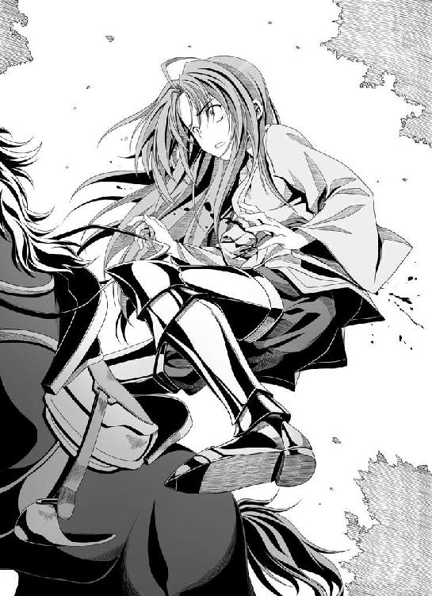
早朝、京。
「織田軍、越前から敗走。総崩れに」
「しんがり部隊を率いる相良良晴は、いまだ帰還せず」
「織田信奈は全軍を置き捨てて京へ逃走したが、叡山の麓で狙撃され、重篤らしい」
京の都は、騒然となっていた。
さまざまな噂が飛び交う中、ねねは妙覚寺で良晴の帰りを待ち続けた。
だが、良晴は戻ってこない。
頼みの竹中半兵衛はまだ、眠り続けている。
「信奈さまはご無事で、本能寺にいるらしい」
そう聞きつけたねねは、一人で明け方の本能寺へ裸足で駆け込んだ。
ねねは、警備の兵士たちに追い返されそうになったところを丹羽長秀に見つけられ、長秀におんぶしてもらい境内へと乗り込んだ。
「丹羽さま。兄さまはまだお戻りになられませぬか？」
「まだ知らせは入っておりません。ねねどの」
「でも、丹羽さまたちのご活躍で、織田軍は無事に京まで退却できたのでしょう？ 今すぐ兄さまを救出へ向かわねば、ですぞ！」
「それが......厄介な事態になっているのです。一点です」
「厄介な事態？」
「織田軍敗戦の報を聞きつけたのでしょう。四国へ逃げ散ったはずの三好一党が、再び畿内をうかがっています。甲賀に隠れていた六角承禎も再び南近江に姿を現しました。その上、浅井朝倉の連合軍が京へ迫っています」
「でも、このままでは兄さまは！ 姫さまに会わせてくだされ、ですぞ！ 姫さまに直接お願いすれば、きっと」
「それが......これからあなたが見聞きすることは......他言無用ですよ、ねねどの」
「......!?」
丹羽長秀は、ねねを信奈の部屋へと案内してくれた。
だが。
いつもの元気でうつけな信奈の姿は、そこにはない。
虎の敷物も、パンダの敷物も、地球儀も、南蛮の望遠鏡も──。
かわりに、布団がひとつ。
「......姫さまっ!?」
信奈は、布団の上に仰向けに横たわっていた。
腹部に、白いサラシが巻かれてある。
そのサラシに赤黒い血がにじんでいたことに、ねねは驚いた。
「う......う......」
全身から玉のような汗を流しながら、信奈は力なくうめいている。
意識は、ないようだった。
信奈のすぐ脇には、「神医」の誉れ高い老翁、白い道服を着込んだ曲直瀬ベルショールが侍っていた。
「おうおう。ここは、戦場じゃ。子供が来てはならぬぞ」
「......あ......あ......姫さま......姫さまは、ほんとうに、撃たれて......？」
ねねは、畳の上にへたりこんでしまった。
歯が、かちかちと鳴った。
「弾を二発、脇腹に喰らったのじゃ。命を拾ったのが奇跡じゃ。なみの精神力の者であれば、最初の失血の衝撃ですでに死んでおる。信奈さまは、よほどの精神力の持ち主なのじゃろう」
「弾を!?」
「南蛮式の手術というものを行ってな、体内の弾丸はかろうじて取り出せた。もしも腸にまで弾が届いておれば、もはや万策尽きておったところじゃが......これが、弾の勢いを弱めてくれたようじゃ」
曲直瀬ベルショールは、ねねに、撃ち抜かれて壊れてしまった南蛮時計を、見せた。
「これは、兄さまの......！」
「形見の品、だったのじゃろう」
「......形見の、しな......」
「鎧まで脱ぎ捨てて逃げておった信奈さまは、懐にこの未来の南蛮時計だけを入れておったらしい。どうしても、この相良どのの形見の品だけは捨てられなんだのじゃな。そして偶然にも、二発の弾はこの時計に命中した。そのおかげで、勢いを削がれた弾は信奈さまの体の奥までは届かなんだというわけじゃ」
ねねは、信奈に会ったらその頰を思いきり張り飛ばして、罵倒するつもりで乗り込んできた。
よくも兄さまを見捨てられましたな！ あれほど兄さまに目をかけてくださっていた姫さまが......見損ないましたぞ！......と。
だが......。
そんな怒りは、もう、どこかへ四散してしまった。
信奈は、良晴を平然と敵地に置き捨てて逃げたのではなかった。
それが、わかったからだ。
「......姫さま......う......うあああ......！」
信奈の手を握りしめて泣き声をあげるねねの後ろから、丹羽長秀がやんわりと、ねねをいたわるように小さな背中を撫でながら、声をかける。
「姫は今、生きるか死ぬかの瀬戸際なのです。最初の危機は曲直瀬どのの手術によって乗り切られましたが、お体より多くの血を失いました。この先、もしも体力が回復しなければ......」
「......う、う......丹羽さま。それで、織田軍は......身動きがとれないのですな......？」
「さよう。姫のご容態は、今日明日が峠。小谷城におられた弟君の信澄どのも、どうやら浅井の手の者に捕らわれたようで、行方が知れません。織田家そのものが崩壊の危機なのです」
「でも。でも、兄さまをこのままには......！」
「わかっています。しかし、それはできない道理なのです。浅井朝倉は琵琶湖沿いの西近江街道を進軍して急ぎこの京へ向かっております。ねねどの。われらが今この京を空にすれば、相良どのを犠牲にしてまで金ヶ崎から撤退した意味もなくなりましょう。零点です」
長秀が、顔を伏せた。
曲直瀬ベルショールが、首を振る。
「信奈さまは人並み外れた精神力の持ち主じゃが、どうやら心に大きな傷を負われているようでのう。手術を耐え抜いたあと、急激に〝気〟が衰えはじめておられる。このままでは......」
「では......姫は助からぬかもしれない......と？」
「死地に陥った人間を最後に救うのは、本人自身の〝生きたい〟という意欲であり気力なのじゃよ、長秀どの。わしら医師は、魔法使いではない。医術では人の命を救うことはできん。ただ、救う手助けができるだけなのじゃ。信奈さまはどういうわけか、生きる意欲を失いつつある......まだなくしてしもうてはおらぬが、どんどん弱まり続けておる。これほどの強きお人がのう。にわかには信じがたいことじゃ」
長秀は、言葉もなかった。
どこで、こんな間違いが起きてしまったのだろう。
このままでは相良どのの死は......いや、まだ死んだと決まったわけではないが、十のうち九は死んでいるだろう......、無駄になってしまう。
嗚咽するねねの背中をさすりながら、長秀は、信奈の寝汗にまみれた額を拭いた。
「ねねどの。曲直瀬どの。姫が、なにか......おっしゃっておられます」
青ざめた唇に耳を寄せた。
「......逃げて......サル......逃げて......」
信奈はいったい、どんな夢にうなされているのだろう。
そんなうわごとを、何度も何度も、繰り返していた。
「良晴......ごめんなさい......」
そうつぶやく信奈の閉じられた瞼のふちから、一筋、涙がこぼれ落ちた。
「そうか。信奈さまは、良晴どのが戦でみまかられる悪夢にうなされておられるようじゃ。それで、急激に気力が萎え──」
「......曲直瀬どの。いかがすれば。私は、どうすれば......！」
「これより先は、医術の及ぶところではない。長秀どの、そなたが決めることじゃ」
「私ごときには、この八方ふさがりの局面を打開する策など......半兵衛どのも病床から目覚められぬままですし......！」
「落ち着くのじゃ、長秀どの。そなたがここであきらめたら、なにもかもがおしまいじゃぞ」
丹羽長秀は、温厚さと冷静さを兼ね備え、主君を補佐する能力においては文字通り天下一品といえる武将。織田家に絶対になくてはならない存在だが、しかし大戦略を練り上げて自ら軍を率いるタイプではなかった。
豪勇無双の柴田勝家にいたっては、しゃにむに突撃するしか策がない。今もし勝家に兵権を任せれば、信奈と良晴の悲劇を目の当たりにして激高している勝家はなにも考えずに浅井朝倉軍へと突進し、おそらく織田軍は──浅井朝倉を道連れに、壊滅するだろう。
いや。長秀だって、本音を言えば今すぐ立ち上がり、全軍を率いて良晴を救いに向かいたい。たとえ京を失ってでも、全軍玉砕してでも良晴を救いだし、信奈に生きる希望を与えたい。
だが......その勝算はほとんど零点です、とかろうじて理性を失わないでいる長秀には結果がわかってしまっていた。
二人とも、信奈という主君があってこそはじめて戦国の世に輝くのだ。
その信奈が、この織田家絶体絶命の危機を前にして、立ち上がることができない......！
ねねは唇をきゅっとかたく結ぶと、庭先へと裸足で駆け下りていた。
「神さまでも仏さまでも、おねこさまでも、なんでもかまいませんぞ！ なにとぞ、なにとぞ姫さまと兄さまを、お救いください......！」
井戸のもとへと駆け寄り、ねねは水垢離をはじめた。
槍を持って戦場へ行きたい。
でも、幼いねねにとって、それは無理というものだった。
せめて、祈ることしか......願をかけることしかできなかった。
長秀が「ねねどの。風邪をひいてしまいます」と制止するが、ねねは身を切るような水の冷たさなど、気にはならなかった。
そんなねねの姿に心を動かされた者は、長秀だけではなかった。
「丹羽どのは柴田どのとともに兵を率い、京で防備を固めてください！ この十兵衛光秀が隠密として単身近江へ潜入し、相良先輩を救出して参ります！」
「......犬千代も、行く。山野には、慣れている」
「わわわ私も参ります～」
おでこが広いこと以外は完璧美少女な、明智光秀。
小柄だがかぶき者、虎皮をかぶった前田犬千代。
そして、たぬ耳のかぶり物と眼鏡で無駄にキャラを立てている、松平元康。
金ヶ崎から京への撤退に成功したばかりの三人が、長秀の前に推参して名乗りを上げたのだ。
「しかし、そのような少数では......こんどはあなたたちまで死ぬことになる可能性が高いです。隠密を派遣するならば乱破を使うべきです。二十点です」
長秀が押しとどめようとする。むろん、乱破を送れるならばとっくに長秀が送っている。だが五右衛門は近江へ向かったまま戻っておらず、松平元康に仕える服部半蔵も良晴と行動をともにしていて、つまりもう繰りだせる乱破はいないのだ。
「どのみち、このままでは信奈さまが助からぬのであれば同じことです！ それに、この利口者の光秀ともあろうものが、相良先輩に種子島を貸した際にうっかりしくじったです！」
「といいますと、明智どの？」
たらたら～と冷や汗を流しながら、光秀が言いにくそう～につぶやいた。
「......た、種子島だけ貸して、かんじんの撃ち手を貸すのを忘れていたです......このままではこの光秀、枕を高くして眠れないです。相良先輩が枕元に立ちそうです......」
それは......まことにうかつもの。三十点です、と長秀。
「しかし姫は、自分に万一のことがあれば明智どの、そなたに後事を託すとかねてより漏らしておられました。私も勝家どのも、姫のお考えを尊重する所存です。その明智どのがここで死ねば......万一の場合、天下布武の事業は誰が継ぐというのですか」
「いいえ。私の命などよりも、信奈さまのお命のほうが百倍も千万倍も大事です！ この光秀、なにをやってもそつなくこなせる天才でお利口者でしかも土岐源氏の血をひく高貴な美少女と自負していますが、それでも自分と信奈さまの器量の違いくらいは心得ているです！ 信奈さまのいない天下布武など、ありえないです！」
「......わかりました」
長秀は、折れた。
黙って座っていれば織田家を継げるかもしれない立場にある光秀が（ちょっとばかり自慢が多いが）、自分の命を顧みずに信奈と良晴を救おうとしている。その厚き忠義の心をむげにはできなかった。
もはや、自分にできることは、信奈が目覚めるまで京を守り抜くことだけだ。
動けない。動かない。動き回りたいこの今こそ、「守る」というもっとも重く苦しい任務を引き受ける者が、必要なのだ。その役目はやはり自分がやるべきだろう、と長秀は決意した。
「......犬千代は、とにかく、行く。止めても無駄。止めたら、斬る」
「犬千代どの。そなたを止められるとは思っておりません......だがさすがに、松平元康どのは......あなたさまは姫さまの同盟者。京に釘づけになったままの三河兵をなんといたします」
「私もサル晴さんには大恩を受けている身です～。それに、吉姉さまを救えるのでしたら、ほとんど零であろうが最後の可能性に賭けるべきです～」
三河兵はぜんぶ長秀さんにお預けします、と松平元康がたぬ耳を震わせながらけんめいにまくし立てた。
松平元康。
日頃はほわほわふわふわしていてなにを考えているのかわからず微妙に腹黒そうだが、いちどこうと腹を決めたらてこでも動かない頑固者だった。頑固は、三河武士の特徴らしい。
いやむしろ、危地に陥れば陥るほど、元康は力を発揮するタイプなのかもしれなかった。
逆に言えば、安全な時にはほんとうになにも考えておらず、ピンチにならないとなにもしない子なのかもしれないのだが......。
長秀は、うなずいた。
これは、あまりにも大きすぎる賭けだ。
この責はすべて自分が負う......そう、決めたのだ。
「......わかりました。だが、向かう先は敵地です。決して深追いせぬよう。生きて、戻られよ」
「「「承知！」」」
三人は、水垢離を続けるねねに向けて「必ず兄上をお救いします」と約束を交わし、近江へ連なる山道へと消えた。
※
織田軍をほぼ無傷に近い状態で京へ送り届けるという大任を果たした光秀・犬千代・元康の三人が、文字通り休む間もなく隠密として出立したこの時、まだ良晴のしんがり部隊は龍穴を巡る最終決戦をはじめていない。
季節は、すでに冬。
山道も、落ち葉に覆われていた。
比叡山の脇に連なる雲母坂を馬で駆けながら、犬千代が「このあたり」と悔しげにつぶやいた。
「......姫さまが撃たれたのは。なみの撃ち手ならば、あれほど速く駆けていた姫さまに連続して二発も当てられないはず。おそらく撃ち手は、またしても杉谷善住坊」
「甲賀の暗殺者......忍びですね」
「犬千代さん、それで杉谷善住坊はどうなったのでしょう？」
「......残念ながら、取り逃がした。不意に、姿を消した......」
「それは妙ですね。このあたりには逃げる場所などないです」
おそらく山内に隠れたのでしょう、と元康が言った。
「杉谷善住坊さんは名前から推察するに僧侶でしょうから、叡山のお坊さまとなんらかの縁があるか、あるいは......考えたくないことですが、叡山そのものがすでに吉姉さまの敵に回っているという可能性も考えられます～」
ありえないです、と信心深い光秀が反論する。
「叡山の頭領にあらせられます天台座主の覚恕さまは、姫巫女さまの兄君にあたられるお方。やまと御所に多額の献金をなされておられる信奈さまにお味方こそすれ、敵対するはずがありませんです」
「でも天台座主さまは、叡山にはおられませんから～。実質的に叡山を取り仕切っておられる偉いお坊さまが、反織田派であるという可能性もあります～」
だとすれば杉谷善住坊が忽然と姿を消した謎も解る......と犬千代。
「ななな、なぜですか！ なぜ叡山が信奈さまに敵対するですか？ このお利口者の十兵衛光秀をもってしても、さっぱりわからないです！」
「......密教や修験道の方々が修行されておられる古い霊山の多くは、いまだに女人禁制です～。富士山、白山、高野山、そして叡山～。もしかしたら、姫大名である吉姉さまが上洛して天下人になったことに不満を持つお坊さまが叡山におられるのやも～」
わけがわからないです。そもそもみ仏の教えに、女人禁制の結界などという教えはありませんです！ いったい女の子のどこが穢れていると言うのですか！ と光秀が小鼻を鳴らした。
「たぶん、霊山での修行の妨げになるからでしょう～。目の前にかわいい女の子が現れれば、禁欲するのは難しいですから～。特に、若いお坊さまにとっては～」
「......山伏は、禁欲を破るとたちどころに神通力を失うらしい」
「ずいぶんと勝手な理屈です！ 女の子を見て煩悩を起こすのは、男側の勝手です！」
「......でも良晴は、少しくらい禁欲修行したほうがいい」
たしかにサル晴さんはそうかもしれませんね～、と元康が笑った。
「いやいや。あの男から煩悩を取り払ったら、きっとたちどころに枯れ果てて死んでしまうです。相良先輩は、常人離れした女好きの煩悩によってこれまで生き延びてきたのですから！ むしろ、煩悩が服を着て歩いていると言っても過言ではないです」
「そうですね～。吉姉さまたち大勢の女の子を待たせているんですから～。生きて戻ったら吉姉さまに接吻させろ、って約束をどさくさまぎれに交わしていますし～」
「まったく。どこまで煩悩まみれですか、あのサル人間は！」
「サル晴さんはきっと、生きておられますよ～」
「......そう。生きている」
「あの愚図。なんとしてもひっとらえて、信奈さまの前に引きずり出すです！」
三人はうなずきあうと、無言で駆け続けた。
いずれ杉谷善住坊の引き渡しを、叡山に要求しなければならない。
だが相手は、女人禁制の霊山である。
しかも、叡山の僧たちの多くは僧兵となって武装している。
叡山は、霊山と仏法を盾に、京のすぐそばに独立王国を保ってきた強大な中世権力の象徴なのだ。
代々の足利将軍家でさえ、叡山の僧兵には悩まされ続けてきた。
ことに姫武将ばかりの織田家にとっては、叡山との交渉はままならないだろう。そもそも女人は叡山に登ることすら許されないのだから。
だが今は、とにかく相良良晴を救出することだった。
三人は、長秀の指示で良晴隊のために整備していった退路を遡って駆け抜けていく。
すべては良晴のしんがり部隊のためにこしらえたものだったが......替え馬や食糧なども道々に準備されていたから、三人の行軍はまさに神速ともいうべきスピードだった。
ときおり、落ち武者狩りの一揆に遭遇したりもしたが、とにもかくにも良晴を見つけることが大事とばかりに振り切った。
そして三人はまもなく朽木谷に到着した。
だが、そこに良晴の姿はなかった。
誰も通っていない、と視線が定かでない朽木信濃守が三人にまくし立てた。
「しんがり部隊はおそらく、まだ若狭との国境にある水坂峠あたりでしょう。あは、あはははは」
と、信濃守はけらけら笑いながら詳細に地形が描き込まれた地図を貸し与えてくれた。
ずいぶんと妙な男です......と光秀たちはいぶかしんだが、詮索している時間はない。
それに、挙動は妙だが、信濃守が織田方に忠義を誓っていることだけはたしからしい。
さらに行軍は続いた。
そして。
まさに、三人が水坂峠の頂へと到着した、その時──。
若狭側の谷底では、ボロボロに薄汚れたしんがり部隊が朝倉方に味方した土御門久脩の式神たちと戦っている最中だった。
「あそこです！ みんな戦っていますです！ ああもう、どうして種子島を撃たないですかっ？」
「かなり兵数が減っています～。すでに弾薬を切らしたんじゃないでしょうか～」
「......敵の式神たちが、空を飛んでる。面妖すぎ」
「いましたです！ 相良先輩が、あやかし相手に猛烈に暴れています！ 相変わらずかっこ悪いです相良先輩！ あはははっ！」
ともあれ。
間一髪ではあるが。
光秀たちは、間に合ったのだ。
良晴は、奇跡的に、生きていた。
まさにその良晴の命が風前の灯火となっていたその時に、光秀たち三人は、その場へと辿り着いたのだ。
戦況は敵の式神部隊が圧倒的に優勢だが、そこに服部半蔵が現れて戦場に煙幕を張ったのが見えた。
種子島をかまえた光秀が、叫んだ。
「式神どもはこいつに弱いと聞きます！ 今です、馬で谷を駆け下りるです！」
「私たちが準備した退路へ、サル晴さんをお連れしましょう～。逃げきれます～」
「......犬千代、参る」
これで。
これで、良晴も信奈も救われた。
三人は、そう確信した。
だが。
幸運と思われたのは、ほんの一瞬。
三人が谷を駆け下りているそのわずかな間に、運命は暗転した。
「そろそろ、終わりのようだね」
幼い少年陰陽師が、洞窟の中から姿を現して──。
その少年が、手にしていた扇を、一振りした。
半蔵が張った煙幕が、たちどころに吹き飛ばされていく。
光秀たちは、見た。
しんがり部隊の男たちが次々と式神の爪や牙にかかって倒されていく中。
血にまみれた、服部半蔵が。
凍てついた表情のまま、どういうわけか、相良良晴の首筋にクナイの刃を当てていた。
半兵衛から「良晴さんを守るように」と託されたはずの前鬼は......姿が、見えない。
あるいはすでに、式神軍団によって倒され、消えてしまったのか──。
少年陰陽師が、傲慢な笑みを浮かべて、宣言した。
「どうやら、ボクの勝ちらしいね。そのサルの首さえ手に入れば、小汚い足軽どもの首なんてどうでもいい。面倒だから、見逃してあげるよ」
そして、半蔵は──。
「承知した。わが最後のほうろく玉をもって、相良良晴の五体を吹っ飛ばそう」
半蔵が九字を切って、木の葉とともに姿をかき消すとほぼ同時に。
「糞ガキ、約束しろや！ 俺の命とこいつら全員の命、ひきかえだぜ！ だがな、首を晒されるのは恥だ！ てめえに俺さまのこの首だけは渡さねえ！ ざまあみやがれ！」
良晴が高らかにそう叫んだ、その直後。
式神どもがいっせいに良晴に襲いかかった。
そして。
突然の、大轟音。
吹き飛んだ。
木っ端微塵に。
相良良晴の五体が、バラバラに。
ぼたぼたと、大地の上に、良晴だったものが......その肉片が、降り注いできた。
この光景を目の当たりにした光秀の──。
「......うわ......うわあああああああっ......!?」
光秀の──心の中で、なにかがぷつん、と音を立てて切れた。
よくも......！
殺す。
殺す。
殺す。
殺してやる......！
背に担いでいた種子島をかまえると、どうん、と少年陰陽師めがけて撃ち放った。
その銃声に驚いた低級式神どもが、「まだ種子島があったぞ！」とばかりに算を乱して空へと舞い散っていく。
まだ子供の姿をした陰陽師は「やれやれ、くだらぬ意地で自ら木っ端微塵になるとはねぇ。サルの考えることはわからないよ」と物憂そうに護符をかざして十兵衛の放った弾を防ぐと、にたり、と吸血鬼のような冷たい笑みを浮かべてみせた。
「乱破やサルごときとの約束を守るつもりはないけれど、今のボクは最高に機嫌がいい。織田家の相良良晴をこうして討ち取ったのだからね──追ってこないというならば、今回だけは見逃してあげよう。だが、追いかけてくるというのなら──殺すよ」
翼龍のような姿をした式神の背にまたがると、少年陰陽師はふわりと空へ舞い上がった。
「誰が逃がすか！ よくも......！ 殺してやる......絶対に殺してやるです！」
光秀は単騎、空を駆ける陰陽師を追った。
その両目は、真っ赤に充血し。
思考は、完全に蒸発していた。
「だ、ダメです！ きっと、追えば罠があります......待ってください～！」
元康が制止しようとしたが、間に合わなかった。
光秀は。
自分が駆けている前方の大地に、突然深い深い亀裂が走り、地獄への入り口のような裂け目がぽっかりと開いたことに、まったく気づいていなかった。
ただ、空を駆ける式神の姿しか、見ていなかった。
憎い敵を──相良良晴を死に追いやった陰陽師を殺すことしか、考えていなかった。
いや。もう、なにも考えてはいない。
とほうもない怒りの感情が、光秀の全身を支配していた。
そして。
光秀の体は。
乗っていた馬ごと......深い深い大地の裂け目へと、落ちた。
「あ、あああ......そ、そんな......さ、サル晴さんも、光秀さんも......そんな......！」
光秀の体は、見えなくなった。
底が見えないほどに深い裂け目だった。
もうこの高さから落ちたのでは、絶対に助からない......。
残された元康と犬千代は、呆然とするばかり。
四方に、手傷を負ってうめいているしんがり部隊の生き残りたち。
「うおおおおおお！ すまねえ、大将......！ すまねえ......！」
「おにゃのこまで、巻き込んでしもうたぎゃあ......今ごろ、大将は怒ってるぎゃあ......！」
「......大将......なんでじゃあ。なんで、わしらなんかの命を救ったんじゃああ！」
「これじゃあ......織田の姫さまに合わせる顔がねえみゃあ......！」
誰一人、自分が生き延びたことを喜んではいなかった。
犬千代は無言のまま、あちこちに散ってしまった良晴の遺骸をかき集めようと大地に伏していた。
しかし、その肉のかけらも、一陣の風によって砂のように崩れ、はかなく舞い散ってしまった。
「半蔵、どうしてです～？ サル晴さんを守ってくださいと命じたのに～!?」
元康は、再びどこからともなく姿を現して平伏した半蔵を泣きながら叱責した。
が、半蔵は顔色ひとつ変えずに「今の大轟音を聞きつけて、まもなく落ち武者狩りの連中が参ります。今すぐこの場から逃げねば残らず全滅いたします」と言い放った。
「答えなさい、半蔵！」
「土御門の式神部隊を前に枕をならべて討ち死にするか、自分の命ひとつで仲間全員を生かすか。極限の選択を迫られた相良良晴が自らの意思で選んだまでのこと」
「でも。これでは──！」
「姫さまがこのような少人数でこの場に来られてしまった以上、これよりわれら服部党は全力で姫さまを京までお守りせねばなりません」
「半蔵？ でも、光秀さんだけでも、救わなければ......」
「土御門恐るべし。奇跡でも起きぬ限り、あの娘は死んでおります。それにわれら服部党にとっては、姫さまのお命のこそがなによりも大事」
服部半蔵は、真に冷酷非情な男。
いささかの揺るぎもなく「われらは織田家家臣にあらず、あくまでも姫さまの家臣。相良良晴を守る任務はここで中断します。これよりはわが主──姫さまを京まで守らねばなりません」と告げた。
※
事態は風雲急を告げていた。
琵琶湖の西岸、南北に長く伸びる西近江街道を突き進んできた浅井朝倉連合軍・約三万五千。
その軍勢が、ついに京へと迫っていた。
織田方にもはや信奈の回復を待つ余裕はなく、丹羽長秀と柴田勝家は二万五千の軍を率いて京より出陣した。越前から敗走した際、相良良晴のしんがり部隊が敵の追撃を一手に引き受けたおかげで壊滅だけは免れたとはいえ、何割かの兵を失っている。
総大将は織田家最強武将、筆頭家老の柴田勝家。
補佐役として、丹羽長秀。
二人は轡をならべて進軍を続けながら、策を練った。
「ああああたし、どどどどうしていいかわからないよっ!? とにかく、突撃だ！ うんっ！」
「勝家どの。決戦の地は坂本となりましょう」
「さ、坂本？」
「叡山の東の麓に位置する重要な拠点です。坂本を抜かれれば、あとは京まで一直線。京に軍を入れられれば、われらの負けです」
長秀が坂本の地理的な重要性についてあれこれと教えるが、勝家は首をひねるばかり。
「とととにかく、あたしの辞書には『突撃』の二文字しかないんだよ！ 速攻で決着をつけてやるっ！ 特に浅井久政は姫さまを裏切ったにっくき仇敵、絶対にあたしがこの手で討ち取ってやるからなっ！ ......って、ほんとに大将ってこんなんでいいのか、長秀？」
「ええ。今回ばかりは短期決戦で勝敗を決せねばなりません。対峙が長引けば、甲賀の六角承禎をはじめ、続々と各地の反織田勢力が蜂起いたしましょう。勝家どの、九十点です」
「ななな長秀がそんな高得点をくれるのなら、心配ないなっ！ 見てろ長秀、この柴田勝家──戦場で悪鬼羅刹と化して姫さまの恨みを晴らしてやる！」
「ええ。期待しております」
この戦は、同盟を一方的に破った卑劣な裏切り者・浅井久政に正義の鉄槌を下す一戦。
東海最弱と呼ばれる尾張兵たちの士気も、こんどばかりは異常に高い。
足軽たちは信奈が狙撃されたことは知らされていないが──誰もが慕っていた、かの『信奈さまの飼いザル』こと相良良晴を失った彼らの怒りは、それほどに大きい。
だが──。
坂本へ迫っていた勝家と長秀の二人に、物見の兵から衝撃的な報告が舞い込んだのである。
「浅井朝倉軍は坂本を無視し、そのまま叡山へと登ってしまいました！」
「な、なんだってぇ、叡山へっ!? ......って、長秀、いったいどういうことっ!? あたし、さっぱり意味がわからないんだけどっ？ うあああ......」
「......われらの状況は、十一点です」
長秀が、唇をかんだ。
「どうやら敵方にはそうとうに頭が切れる者がいる様子。叡山に籠城し、持久戦に持ち込むつもりです」
「っていうと？」
「こうなれば、われらは叡山を包囲せねばなりません。戦況は膠着します。時間が経てば経つほど、織田軍は追い込まれていきます。南近江を六角承禎、京を三好一党に奪われてしまうでしょう。しかしながら、もしも叡山の包囲を放棄すれば、その時こそは叡山から浅井朝倉軍が攻め寄せてきてわれらを背後から叩くでしょう」
「ちょ。ちょっと待って！ 京を手薄にしたままここで釘付けになってたらやばいってことは、あたしにもわかるけど......どうして叡山があたしたちの敵に回ったわけぇ!? あたしたち、叡山を怒らせるようなことを、なにかしたっ!?」
「わかりません。ここで浅井朝倉といきなり結ぶなど、手際が良すぎます。浅井久政の裏切りは子の長政すら知らない不意打ちだったはず。誰かが裏で糸を引いているのやも......」
織田軍は攻撃目標を見失い、やむをえず態勢を立て直すために坂本へ布陣した。
越前金ヶ崎からの総退却に続いて、こんどは敵軍が目の前で叡山に逃げ込んでしまった。
復讐心に燃えていた足軽たちはその怒りの矛先をかわされ、休むまもない強行軍のために心身ともに疲れきってしまっていた。
ところがまたしてもここで、予想外の事態が起きた。
「ぐわははははは！ 我が名は叡山の山法師・正覚院豪盛よ！ 女だてらに天下布武などとぬかす思い上がったおなごどもよ、かかってきませい！」
叡山の麓から、坂本めがけていっせいに叡山の僧兵たちが不意に攻めかかってきたのだ。
その僧兵たちの先頭に立っている巨漢の荒法師・正覚院豪盛はぶおんぶおんと巨大な金棒を振り回し、その武勇はまさに鬼神そのもの。
坂本に陣を構築中だった織田勢は迎え撃つ準備が出来ておらず、右往左往。
「勝家どの、今こそ、あなたの武勇に頼る時です！」
「合点承知！ 勝負だ、正覚院なんとか！」
槍をしごいて一騎駆け、柴田勝家が「おりゃああああああ」と僧兵たちを蹴散らしながら正覚院豪盛のもとへと迫った！
当たればたちまち僧兵どもがすっ飛んでいくという勢いで、さしもの叡山僧兵軍団もこの勝家の豪勇無双ぶりにはたじろいだ。
「あたしたちが何をしたっていうんだよっ？ その坊主首、この柴田勝家がいただいたっ！ 喰らえ必殺！ 秘太刀・瓶割大斬撃！」
並走する小姓に「ぶおん」と巨大な瓶を放り投げさせ、勝家はその瓶めがけて自慢の槍を振り下ろし、がちいいんと命中させる。
ばりん、と瓶がひび割れて木っ端微塵、四方八方へ破片が弾丸のような速度で飛んでいく。
ごん。がん。ごんっ。
「ぎゃ！」
「うわっ」
「うぬう、やるな小娘ごときが！」
それらの破片が次々と僧兵たちの頭や背中に命中し、続々と倒していく。
勝家は、自分と敵将・正覚院豪盛との間に強引に道を作った。
さすがは織田家随一の豪勇無双、この秘太刀を実戦で使ったのはこれが初めてだったが、修行鍛錬のたまものか、勝家自身の怒りが勝ったのか、とにかく秘太刀の効果は絶大だった。
「やいこら正覚院！ あたしと尋常に勝負しろおお～！」
「ふん。穢れた姫武将と一騎打ちなどすれば我が身に仏罰がくだりそうだが──そこまで言うのならば受けてたってやろうではないか、ぐわはははは！」
正覚院豪盛が、金棒を振り回しながら勝家めがけて突進してきた。
がん！ がんっ！ ごんっ！ と三度、四度とすれ違いざまに槍と金棒を撃ち合うが、腕力ではやや正覚院豪盛有利なれど、馬上からも正確に槍を操る勝家のほうが技量でおおいに勝っていた。
「おらおらおら～！ 織田家に〝掛かれ柴田〟ありっ！ 正覚院、覚悟！」
「なんたる膂力!? き、きさま実は男ではないのか？ こんな強いおなごがいるわけがないっ」
「きーっ！ 失礼なことを言うなよーっ！」
勝てるがや～！ さすがは男まさりの勝家さまだがや～！ と、逃げ惑っていた織田軍の足軽たちも勝家の奮戦をみて再び士気を回復した。
「がはは。拙僧の真の任務は叡山の守護。小娘よ、今回は、この程度にしておいてやろうぞ」
正覚院豪盛は勝家に背を向け、僧兵たちを束ねて叡山へと退却していく。
一糸乱れぬ統制ぶり。さすがは叡山の僧兵軍団であった。
これでおさまらないのは勝家。
「待てこのっ！ 一騎打ちはこれからだというのに、逃げるのかっ!? 卑怯者～！」
「がははは！ 悔しければ、叡山の中まで拙僧を追いかけてみるがよかろう！ 聖なる叡山の僧兵に逆らおうとは。おろかなり、おろかなり姫武将ども！」
ちくしょ──！ 逃げやがってこの糞坊主めこのまま叡山に攻め上っちまえええ！ と勝家が目をいからせて槍を振り上げるが、馬を飛ばしてきた長秀がけんめいに押しとどめた。
「お、お待ちください勝家どの！ 叡山は、京の鬼門を守る日ノ本を代表する名山です！ 本堂の根本中堂には開山以来みゃくみゃくと伝わる尊い『不滅の法灯』を掲げておられまして、かの法灯の炎が途絶えれば叡山が誇る鬼門封じの霊力は消え、京は厄災に襲われると信じられております。そのような聖地に攻め込むなど、もってのほか！ ことに、叡山は女人禁制の神聖な霊山ゆえ、私や勝家どのは攻めるどころか山に入ることすら許されません！」
「ええ～っ!? 女人禁制？ なんでっ？」
「宗教上の理由でしょう。仏教伝来以前からの古きしきたりであったと言う学者もおります」
「じゃあ、あたしたちは叡山にこもった敵を攻めることもできないし、叡山の包囲を解くこともできないってことっ!? 八方ふさがりっ!?」
「ええ。進退きわまれり、といったところです......二点です」
「ぐぎぎぎ。正覚院め。大口を叩きながら、あたしにヒネられたら女人禁制の安全地帯に逃げ込むなんて。な、なんてずるい坊主なんだ！」
勝家と長秀は、標高約８５０メートルの霊山・叡山を呆然と見上げながら、織田軍の運命がここに完全に暗転したことを思い知らされていた。
そして本能寺に臥せった織田信奈は、この時、いまだ回復できないでいた。
※
叡山。
根本中堂。
不滅の法灯を前に、三人の男が顔を揃えていた。
一人は、嫡子・長政を竹生島へ幽閉し、浅井家の当主に返り咲いた浅井久政。
「......まさか初手から籠城戦を採るとは。織田信奈もまだ生きているようだし、わしらは果たして勝てるのであろうか？」
戦下手の久政は、すでに顔色が青い。
織田家と手切れしたまではいいが、ここで織田軍を壊滅させられねば先行きが見えなくなってしまう。そんな不安にさいなまれていた。
もう一人の大柄な男は、対照的に、小姓に酒をそそがせながら優雅にかまえている。
髷を結っていない。
総髪、黒髪。
年の頃は、三十になるかならないか。
大柄ではあるが、太り肉ではない。
研ぎ澄まされた、野生の猫科動物のような肉体の持ち主だった。
戦場だというのに、京の公家風の衣装を身にまとっている。
「久政よ。時を稼げば稼ぐほど、戦局はわれらに有利となる。人を殺す戦は醜いもの。とりわけ姫武将に血を流させたくはない。美しき戦、血を流さぬ戦で勝利を収めてこそ、世に威光を示せるというもの──われらはゆっくりと、織田信奈から時を奪えばよい」
優美な美声がよく似合う、風雅な優男。
うっすらと化粧なども施している。
越前の大名、朝倉義景。
名門朝倉家の、第十一代当主。
男装の麗人・浅井長政とは異なり、朝倉義景は美形ではあるが、身も心も完全な男である。
ただ、そうとうに極端な趣味の持ち主──極度の風流人だった。
いにしえの京の王朝文化に耽溺し、越前の都・一乗谷の町を「小京都」と呼ばれるほど徹底した京風造りにあらため、いつも手元に『源氏物語』などの風流な平安絵巻を携えて手放さない。
朝倉義景の「源氏」癖は、絵巻だけでは留まらない。自らの館を光源氏の館そっくりにこしらえ、北陸が生んだ若き天才絵師・長谷川等伯の筆になる『源氏物語』の壮大な絵物語を建物の壁や天井や襖にびっしりと描かせ、館にこもって『源氏物語』の世界に耽溺するのを日課としていた。
血の気が多い戦国大名も十一代続けば、このような風流な趣味人を輩出するらしい。
そんな朝倉義景は、戦を好まない男だ。
今回の出兵も、織田信奈が先に越前へ攻め入ってきたので、火の粉を払うためにしぶしぶ立ち上がったにすぎない。
だが。
「実に物憂げなことではあるが......すでにはじまってしまった以上、この戦、勝たねばならぬ。あたら人を動かし、多くの兵を死なせるのは愚。地の利と時の運、このふたつを握れば勝利などは熟してきた柿の実が落ちるかのごとく、手に入るであろう」
ひとたび立ち上がれば、この朝倉義景は、軍略に長けた武将なのだ。
「織田信奈を滅ぼした暁には、次の天下人はなにとぞ我が子、長政に」
久政が、年若な義景に対して頭を深々と下げる。
「よい。余は、天下人などという面倒な仕事に興味はない。長政はなかなかの傑物と聞く、京も天下も好きにすればよかろう。ただし、京の都にある主立った風流物は余が一乗谷へ運ぶとする──京の戦火が由緒ある芸術品の数々を損ねるのは見てはおれぬのでな」
朝倉義景は本気だった。
この男は、天下などにはまるで興味がない。
そういう俗事は、朝倉家の家来も同然である新興の浅井家にでもやらせておけばよい、と本気で考えている。
それ故、私利私欲に惑わされることなく、戦局を透徹した目で見渡せるのだ。
そして、この場にもう一人。
「武門の頭領は男子でなければならぬ！ 織田信奈ごとき小娘が天下人などとは片腹痛し。拙僧は、叡山の総力をあげてお二方を支援いたしますぞ」
織田軍との戦から戻ってきたばかりの、巨漢の山法師。
豪快に酒をかっ喰らっている、正覚院豪盛。
この豪盛こそが叡山の僧兵軍団を統率する大男だった。
叡山は仏教伝来以前から信仰されてきた霊山であり、大勢の高僧を育てた仏教と学問の中心地でもあるが、同時に数千名からなる強力な僧兵軍団を率いる武闘集団でもあり、中世における一個の独立王国といっていい。
中でもこの正覚院豪盛ほど、名は体をあらわすという言葉が似合う僧兵もいない。
不殺生戒？ 禁酒？ なにそれ？ とばかりに、鉄火場での槍働きと酒が大好物、肉も喰らえば金も貸す、借りた金を返せないと言われれば押し込み、かつては足利幕府に対しても「叡山の借金を棒引きにせよ」と徳政令を求めて京へ押しかけ僧兵一揆。そんな破戒僧であった。
そして。
「天下を幼い小娘に渡すなど、もってのほか！ 拙僧は昨今の武家の風潮を嘆いておる！ なにが〝姫大名〟じゃ。もののふは、たくましき肉体を誇るおのこでなくばつとめられぬわっ！」
姫武将が増えた最近の戦国の風潮に憤る豪盛、「女人は拙僧の悟りを妨げる悪魔よ！」と妙に姫武将を憎悪していた。
「浅井どの、朝倉どの。この国を不浄なおなごなどに自由にさせてはならん。奴らは今、僧兵たちとの戦が終わったばかりで油断している。今すぐに夜襲だ！ 夜が更けると同時に全軍で坂本へ繰りだして大決戦と行こうではないか！ なぁに、不利になればまた叡山に逃げ込めばよいのだ、がっはっは！」
「あきれた殺生坊主だな」
と朝倉義景が笑い、小心な浅井久政が気に病む。
「......しかし義景どの。十二月になればあなたの領国・越前への帰路は雪で閉ざされますぞ」
「より時間に追われているのは織田方。この戦、先に織田軍のほうが崩れよう」
「う、う、うむ......だが、敵の大軍を前にこうもじっとしているのは......なにか手はないか。坂本に陣を張った織田方の大将へ暗殺者を放つというのはどうだろう？ 特に、豪盛どのとの一騎討ちで互角以上にやりあったという柴田勝家さえ消せば」
「柴田勝家とやらも丹羽長秀とやらも姫武将であろう。無粋はよそう、興が削がれる」
「がははは。女人の本懐を忘れておる柴田勝家づれは拙僧がいずれこの手で成仏させてやるが、暗殺ならばちょうど杉谷善住坊という鉄砲の名人が当山におる。越前より逃げてきた織田信奈を撃った男よ」
正覚院豪盛が小坊主に命じて、信奈を狙撃したあと叡山にかくまわれていた杉谷善住坊を根本中堂へと招いた。
かつて近江路で相良良晴を人質にして信奈を狙撃しようとし、そしてこのたびついに雲母坂で信奈に二発の弾を当てた生粋の暗殺者である。
だが......。
「──俺にかまうな。放っておいてくれ」
呼び出された善住坊は、泥酔し、目に隈を作って荒れ狂っていた。
「おう善住坊。織田信奈をみごとに狙撃した天下の撃ち手がいったいいかがした？」
「......俺はあの女を、二度もし損じた。なにが天下の撃ち手だ......！ わからん。俺の腕が甘かったのか。それとも甘いのはこの俺の......」
だが腹に二発も弾を受けたのならば、さしもの織田信奈もそろそろ死ぬだろう、おなごふぜいが天下など望むから仏罰がくだったのじゃと豪盛が笑い飛ばす。
「......俺は、狙った獲物は即死させる男。体に弾を食い込ませて苦しめるなど、俺の主義に反する。いや、人が苦しむさまを見るのは大好物だ。だが獲物を一撃で殺せなければ、天下一の種子島の名手とはいえんのだ」
「ふうむ。貴様ほどの求道者が、なぜ狙撃に失敗したのだ？」
それまで興味なさげだった朝倉義景が、善住坊に興味を持ったらしい。
どうやら殺し屋にも殺し屋なりの美学があるようだと知り、身を乗り出してきた。
「......顔を狙えば、確実に即死させられた。だが俺は......織田信奈の顔面を、撃てなかったのだ」
「ほう？ 撃てなかった？ なぜだね？」
「......わからん！ わからんが......なぜだろう。あの小娘の笑顔が、やけにまぶしかったのだ。俺のような地を這う虫けらの如き者が決して犯してはならないなにかを、俺は撃とうとしてる──なぜか、不意にそんな迷いが生じた。この杉谷善住坊としたことが。わけがわからん......」
善住坊は、うめいた。
貴様が織田信奈の顔を撃ち抜いていれば、今ごろは！ と浅井久政が愚痴るが、朝倉義景が「無粋なことを言うな」と久政を一喝した。
「それで俺はとっさに腹を撃った。二発とも、確実に織田信奈の腸を貫いたはず。それなのに、あの小娘は死ななかった......この俺が、二度も暗殺をし損じたのだ。もはや織田信奈には、俺がうかがい知れぬ天の加護があるとしか思えぬ......」
この男はもう使い物にならんな、とつぶやきながら豪盛が頭をかいた。
「出て行け。この豪盛、おなごも撃てぬような役立たずを食わせてやるつもりはない！ 要は、お前は織田信奈の色香に迷ったのではないか！」
「......そのような野暮な迷いではない！ この杉谷善住坊をなめるな！」
朝倉義景が「この男も、風流の心を知ってしまったということだ」と微笑みながら、華麗な『源氏物語』の絵巻を床へと広げはじめた。
「余は、わかる気がする。至高の芸術品を目の当たりにすれば、打ち砕くのは忍びないと思うのが人の心。織田信奈とはそれほどに美しき女人なのであろうか。『源氏物語』の絵巻に描かれた姫よりも美しき女人が、この現世にいるとは余には信じがたいのだがな。ことに、源氏に攫われて怯える若紫の愛らしさといったら......余も北山の桜を愛でに行きたいものよ......幼い若紫が雀の子を探して泣いている、そのような夢物語がほんとうに起こらぬものか......ふ、ふ、ふふふふ......諸君は、若紫と源氏が出会った北山がほんとうはどこであるのか、ご存じか？ 余はさまざまな書物をかき集めたが、いまだに『ここが北山だ』という確証を得られぬ。京の北にあるお山ということで、おそらく鞍馬山ではないかと思うのだが......どうであろう？」
妙な男だ。生身の女よりも絵巻物に登場する姫に夢中らしい。浅井久政は目をしばたたきながら朝倉義景の端正な横顔を眺めていた。
「光源氏は現世に絶望した余に素晴らしい希望を与えてくれたのだ。光源氏のごとく母の面影を重ねられる愛らしき少女をわが館に連れ去り、閉じ込め、そして余の思いのままに少女を育てることができれば......若紫の如き理想の女性を手に入れることができる......ふ、ふ、ふ」
「よ、義景どの。そろそろ、風流話はそのくらいに......」
「そうそう。浮気者の源氏に嫉妬し、なまなりや死霊となって次々と女を取り殺す六条御息所にも捨てがたい趣がある。なかなか源氏に素直な想いを伝えられず、つい冷たくあしらってしまう葵の上の気位の高さもまことに素晴らしい。葵の上がもののけに憑かれて苦しむくだりなど、何度読んでも身悶えできる。それから、源氏が年老いてから娶った年下の妻・女三宮は当代流行のおねこさまが大好きでね。民が熱心におねこさまを信心する今の時代を先取りしていたとでも言うべきか」
朝倉義景は、『源氏物語』の女性たちについて語りだすと止まらない男らしい。
浅井久政も正覚院豪盛も、これにはいささか閉口した。
しかし、僧兵たちに追いたてられて山を下りていった善住坊と入れ替わりに──。
その義景の一人語りを中断してくれる者が、現れた。
「朝倉さん、浅井さん。サルは死んだよ。木っ端微塵になった。首までぐちゃぐちゃに潰れてしまったのが残念だけど──杉谷善住坊の代役は、このボクがつとめてあげよう」
白面の、少年陰陽師。
土御門久脩が。
根本中堂に、醜くあさましい低級式神の群れを引き連れながら、姿を現したのである。
「さすがは叡山だ。すごい〝気〟を感じるよ......式神どもの力も、若狭にいた時の十倍は強まっているね」
まるで百鬼夜行じゃな、と化け物の群れを眺めて笑い飛ばす豪盛。
こんな子供が土御門家の当主？ そもそもサルの首も持ってこずになにをいばっているのじゃ？ と思わず漏らした浅井久政が、翼を生やした式神に首ねっこをつかまれて「許してくれええ！」と泣きわめいた。
「サルの首は、服部半蔵のほうろく玉で粉みじんに吹っ飛んだんだよ。ボクに首を渡すのがよほどしゃくだったんだろうねぇ、ふふっ」
「わかったから、この化け物をひっこめてくれえ！ 許してくれえええ！」
「いいかい。織田勢を滅した暁には、土御門家を京に再興する。そして日ノ本各地に散った流れ陰陽師のすべてを、安倍晴明公直系の後継者であるボクが頭領として束ねる。そういう約束だよ」
「好きにするがいい。陰陽師と式神が京を跋扈する平安の昔に戻る......実に喜ばしいことだ。京が再びいにしえの闇に覆われる。まことに風流ではないか」
朝倉さんは話がわかる人だなあ、と土御門久脩がくすくす笑った。
「そうそう。ついでにあの明智光秀も殺しておいたよ。しばらく前に朝倉さんのところにいた、気位ばかり高いくせに貧乏なおでこ娘さ。惜しいことをしたかな？」
「──そうか。あれほどの才を秘めた高貴な娘が、あっけないものだ。おでこがあと少しばかり狭ければ、理想の若紫となれたものを......どちらかと言えば朧月夜に似ていたものだなあ」
織田信奈は生きているとも死んでいるとも知れず、出陣できない容態であることはたしかだ。
もっとも厄介だった二人の重臣──相良良晴と明智光秀は、土御門が倒した。
美濃尾張を少ない手勢で守る斎藤道三は、甲賀の六角承禎と東の武田信玄とに挟まれ、うかつに身動きが取れない状態。
伊勢戦線に張り付いている滝川一益も同様で、やはり六角が防壁となっている。叡山へは辿り着けまい。
織田軍は今、叡山を囲みながらも実は敵中に孤立している。
四国の三好一党が畿内へ再上陸し、空き家同然の京を突くまでに要する時間を計算すれば──。
「二週間だ。あと二週間この退屈な籠城を続ければ、われらの手に勝ちが転がり込んでこよう」
「がはは、勝ったな朝倉どの。柴田も丹羽も姫武将。この叡山には一歩も踏み込めず、決して手出しできん！ 叡山の女人禁制の掟を戦に利用するとはおぬし、なかなかの知恵者よのう」
「余はただ、女たちを血なまぐさい戦に巻き込みたくなかったのだよ。風流人としてね。女とは......館に閉じ込め、毎晩着せ替え、飽くまで眺め、ひたすらに愛でるもの。ふ、ふ、ふ」
なんだか気持ちの悪い人だなあ、とまだ子供の土御門久脩がさらりと本音を漏らしたが、朝倉義景は（二週間も館へ戻れぬとは、面倒なことだ。叡山は男ばかりでつまらん。長谷川等伯も連れて来るべきであったな）と退屈を憂いてた。
※
京、本能寺。
「控えの間」。
信奈の介抱を続ける曲直瀬ベルショールは、「教えてくだされ」とせがむねねに現在の戦況を言って聞かせていた。
「叡山に攻めることもできず退くこともできぬとは一大事ですな。なんとかなりませぬのか？」
「良晴どのと光秀どの、どちらかがおれば驚くような策も出てくるじゃろうが」
「知恵者の半兵衛どのは？」
「いましばらく、薬が効いて目を覚ませぬ。ここだけの話、半兵衛ちゃんの病は意外に篤いのじゃよ。誰にも言うてはならぬぞえ」
「......そうなのですか......」
「いつ目覚められるかは、そうじゃな、半兵衛ちゃんの気力体力次第かのう」
「うう......みなが一大事だというのに、子供のねねにはなにもできぬ。それが悔しいですぞ！」
「なにもできぬということはない。この寒さの中、水垢離とお百度参りを重ねているねねちゃんの思いは、必ずや良晴どのや信奈さまに伝わるじゃろうて」
「でも、姫さまは──姫さまの、ご様子は──」
曲直瀬ベルショールは、顔を伏せた。
そう。
信奈の容態は、日に日に悪化の一途を辿っていた。
手術は、完璧だったはず。
高熱にうなされてはいるが、いずれ熱は体内の毒とともに消え去り、熱が収まると同時に信奈は目を覚ますはずだった。
ところが......。
「高い熱のためにのう、信奈さまは悪夢を見ておられるようじゃ。人の心とはげに不思議なもので、その悪夢が弱っておられるお体の具合を崩し、さらなる高熱を呼ぶ。ゆえに、いつまでも目覚められない。その繰り返しじゃよ。このままでは、信奈さまは......」
「なんとかならぬのですか！ 曲直瀬さまは東洋と南蛮の医学を修められた神医ですぞ！」
「......夢の中にまでは、医師は立ち入れぬのじゃ」
このまま熱が下がらず、目を覚ませぬならば、信奈さまのお命はもってあと一、二日。
人の命が消えゆくさまを無数にその目で見続けてきた。仙人のように飄々としている曲直瀬ベルショールも、さすがに、目を潤ませて鼻をすすっている幼いねねに、それだけは伝えられなかった。
だが、利発なねねには、真実が伝わってしまっていた。
「......姫さまは、もう助からぬ......のですな......う、う......兄さま。兄さまさえ、帰ってきてくだされば......！」
まるで、すでにここだけが黄泉の世界になってしまったかのように。
本能寺は、しん......と静まりかえっていた。
そこに、招かれざる客が、ふらりと現れた。
「うふ。お爺ちゃん、そろそろわたくしが必要になったのではありませんこと？」
異国情緒溢れる、強烈な香り。
髪飾りは、鳥兜の花。
褐色の肌に、太股が大きく割れた唐風の衣装、そして長煙管。
「蠍」こと、松永弾正久秀。
しばらく姿を見せなかった、久秀が。
ゆらり、ゆらり、とおぼつかない足取りで曲直瀬ベルショールの前に現れた。
「おお、松永さま？ 姫さまが撃たれたのを見て織田家を見限り、大和へ逃げたと京の噂になっておりましたぞ！」
「うふっ。京童はわたくしが嫌いなようですから。わたくし、信奈さまのために秘伝のお薬を調合していたんですの」
曲直瀬ベルショールが、ぶるぶると恐怖に震えながら、
「だだだ弾正ちゃん？ い、いったいなにをしに来たのじゃ？」
と久秀を指さした。
以前、老いてますます女好きのエロ医師・曲直瀬ベルショールはこの松永久秀と組んで閨房術の書を編纂したことがあったのだが、その際、言葉巧みに久秀を口説こうとして「爺さんは嫌い」とすげなくフラれ、さらには芥子の毒を一服盛られて久秀の居城・多聞山城からゴミと一緒に捨てられたというおぞましい黒歴史を持っていた。
「ですから、そろそろお爺ちゃんの手にあまる事態になってる頃かなあ、と思いましたの。信奈さまは、いまだに悪夢から目覚められないとか。うふっ」
「だからといって、信奈さまに薬じゃと？ 弾正ちゃんが？ あやしいのう、あやしいのう」
「あやしくはありませんわ。波斯伝来の秘術に、夢を操る薬というものがございますの。ただ、この国で原料を揃えるのがとても骨折りで、時間がかかってしまったまでのこと」
「ほう。夢を操る薬、じゃと？」
「それを使えば、姫さまの悪夢は終わるわけですな！」
と、ねね。
「はい。悪夢を終わらせ、楽しき夢を見ていただけますわ。信奈さまが心の底でお望みになっている幸せな夢を。さすれば信奈さまのご気力は回復し、熱は下がり、目を覚まされますわ」
お願いしますぞ！ とねねが久秀の手をきゅっと握って何度も頭を下げた。
「ねねちゃん。この女が操る波斯の薬はのう、ほとんど毒に等しいものなのじゃ。人体にひとつ効能があるとすれば、同時に十の害をなす、そのような危ない薬ばかりじゃ。ただでさえ弱っている信奈さまのお体に障るやもしれんぞ、危ないのじゃぞ」
曲直瀬ベルショールがむむぅと顔をしかめるが、
「では、お爺ちゃんには信奈さまのお命を救うすべがあるのかしら？」
と鋭い視線でにらみつけてくる久秀にたずねられると、ぐぅの音も出なかった。
これ以上邪魔だてするようなら、そこの童ともども爺さんをこの場で毒殺する......久秀の眼は、言外にそう匂わせていた。
「良薬は口に苦し。信奈さまのお命が救われるのでしたら、多少のことには目をつぶっていただけますわよね？ うふっ」
「しかし弾正ちゃん、その波斯の秘薬とやら......人で試したのか？」
「ええ。自分の体で、少しばかり。効いている間、〝多聞山城で信奈さまと一緒に極彩色のキノコ鍋をいただいてゲタゲタ笑い転げる〟というおもしろおかしい夢を見たほかには、特になにもありませんでしたわ。うふっ」
実に危なそうですぞ、とねね。
「弾正ちゃん。そなたの体は、薬物や毒物を摂りすぎてすっかり毒に慣れてしもうておるではないか。体質もわれらとは違う。参考にはならぬぞ、ならぬぞ」
少なくとも信奈さまのお命だけは保証しますわ、この松永弾正の首にかけて、と久秀が目を細めて自信ありげに笑った。
曲直瀬ベルショールは、不吉な思いに因われながらも、ついに覚悟を決めた。
そして、信奈が臥せっている寝室に、久秀を一人で入れた──。
「だいじょうぶなのですか。ねねは、少し心配ですぞ」
「うむ。これは大きな賭けじゃのう......弾正ちゃんの薬が良薬となるか、毒となるか......信奈さまに天運、あるやなしや」
「信奈さま。こんなに、おやつれになって......おいたわしい」
久秀は、高熱にうなされ衰弱していた信奈の姿を見るなり、目に涙を浮かべて信奈の手を握りしめていた。
種子島で信奈を狙撃した下手人は、叡山に姿を隠したのだという。
叡山は、女人禁制の霊山。
これでは、姫武将が主体の織田軍は下手人を捜索することもできない。
事実、すでに久秀は叡山方に何度も「下手人を引き渡すよう」と要請していたが、「不浄な姫大名などに当山はいっさい関わりなし」と相手にもされなかった。
その上、叡山は浅井朝倉軍を迎え入れ籠城を続けている。
柴田勝家も丹羽長秀も、姫武将ゆえに叡山へは踏み込めない。
卑劣な......。
女を、なんだと思っているのか。
久秀もまた、京での戦で家族も家も失い、奈良の興福寺に拾われて育てられていた過去があった。そこで僧兵たちの堕落ぶりに失望し、仏を見限ったのだ。
むろん、僧侶とは破戒僧ばかりではない。戒律を守り民に徳を施す高僧も存在する。だが宗教者であるにもかかわらず武器を持って殺生をいとわぬ僧兵どもの傲慢さ、仏に仕える者でありながら女を「不浄」と決めつけて人間と認めぬその態度、そのくせ自分は戒律を破って欲にまみれてほうけているその暮らしぶり......。
幼かった久秀は、京でも奈良でも、僧兵どもから「異国の娘」と蔑まれる存在だった。
だから、自分の身を守るために、槍と、そして毒を使うことを覚えた。
過去に経験したさまざまな黒い怒りを思いだし、久秀の人相は凶悪なものになっていた。
「信奈さま。下手人はこの弾正が必ずや捕まえて、鋸引きの極刑を与えますわ。地面に首から下を埋めて、道行く見物人に鋸を持たせ、首を少しずつ少しずつ引かせますの。たいていの庶民はそのような血なまぐさい遊びに興じる度胸がありませんから、この刑を受けた罪人はなかなか死ねませんのよ。そうですとも。ただ殺すだけでは飽き足りませんもの。信奈さまのお美しいお体に鉄砲傷を......絶対に、生かしてはおきませんとも。死よりも苦しい罰を受けさせますわ」
そう信奈の耳元にささやきながら、久秀は、薬を──天下の大名物・平蜘蛛に入れた黒い液体状の薬を、ゆっくりと煮はじめた。
「さあ。お飲みくださいませ。これで、悪夢は終わりですわ。楽しい夢を見ましょう。信奈さまがほんとうに見たかった夢を」
このお方は、これほどに傷つかれ、無残に弱られていてもなお、こんなにもお美しい......。
あなたは......このわたくしが、どこまでもお守りいたしますわ。
久秀は、信奈の寝顔をうっとりと眺めながら、信奈の乾いた唇に茶碗の縁をそっと添え、煎じた薬をゆっくりと流し込んだ。
「......う......う......ん」
※
......
......
......
「サル、逃げて......！」
夢の中で信奈は、地獄と化した金ヶ崎をさまよっていた。
これで、何度目になるのだろう。
繰り返し繰り返し見てきた、悪夢。
天下布武という夢のために相良良晴を金ヶ崎に置き捨てて逃げた信奈の心は、種子島に撃たれて倒れてからずっと、良晴の姿を捜し求めて金ヶ崎をさまよっていたのだった。
「ねえサル。良晴！ わたし、バカだったわ！ あんたが死んでしまったら、わたしはいったい誰と一緒に広い海に繰りだせばいいの？ わたしひとりぼっちじゃ、夢がかなったって意味なんかないじゃない！ だから......お願い、帰ってきて......！」
泣きじゃくりながら、山道を駆けた。
夢を見ている信奈には、わかっている。
この峠を越えた先で、わたし、また、サルが落ち武者狩りの連中に捕まって殺されていく姿を見なければならないんだわ......。
そして......サルが死ぬたびに、わたしの心も、死んでいくの。
もう、こんな悪夢、終わりにしたい。
生きている限りこんなひどい夢を見続けねばならないのなら、わたし、もう......。
だが。
こんどの夢は、悪夢ではなかった。
峠の向こうには、五百人のしんがり部隊を率いて堂々と進軍している、相良良晴の姿があったからだ。
「......良晴......!?」
「おわっ信奈？ ななな、何しに戻ってきたんだよ？ ってか、良晴って誰だよ？」
「あんたのことでしょ！ あんた、自分の名前も忘れちゃったわけ？ ほんっとに知能がサルなみなんじゃないの？」
「う、うるせー！ お前にいきなり〝良晴〟なんて呼ばれたから、びっくりしたんだよ！」
「......良晴!!」
信奈は、馬上の良晴に駆け寄り、無言で抱きついていた。
涙が、止まらなかった。
夢かと思っていたけど......夢じゃない。
ほんものの良晴だ。あたたかくて、ちょっとだけ汗臭くて、そしてわたしに抱きつかれると心の臓をどきどきさせる、ほんものの相良良晴。
もう......夢でも、現実でも、どっちでもいい。
わたしの夢は、天下布武、広い広い海へと乗り出して世界をこの目で見ること、そして......。
そして、未来の日本から来たと言い張っている、このヘンな男が、そんなわたしの隣に立っていてくれること。見守っていてくれること。「信奈。この国には、お前が必要なんだ。俺は知っている。この時代の誰もがお前を理解してくれなくても、俺だけは理解している」と背中を押して支えてくれること。
この気持ちは、恋なのか......それとも、自分を守ってくれる兄を慕うような気持ちなのか、かつて南蛮から来た宣教師に抱いていた気持ちと同じものなのか......それは、まだわからない。
わからないけど、きっと、この気持ちは......。
父上......宣教師さま......平手のじい......蝮......今までわたしが好きになった男の人たちに抱いていた感情とは、どこかが違う。決定的に違う。
だって。
顔を見ただけで、こんなに胸が苦しくなることなんて、なかった。
生まれてはじめて、わたしは、きっと......。
「おい信奈。いつまでくっついてるんだよ？ 妙にしおらしいな。どうかしたんじゃねーのか？」
「な、なによぉ？ ああああんたが心配で戻ってきてやったっていうのに、どうしてそういう態度に出るわけえ？」
「大将！ あついみゃあ、ひゅーひゅー！」
「京へ戻ったらさっそく祝言だぎゃ！」
「おめーら、うるせえよ！ 幽閉されていた浅井長政が脱出に成功して浅井家の家督を父親から奪い返し、朝倉勢を倒してくれたとはいえ......京へ帰り着くまでが遠足だぜ！ じゃなかった、京へ帰り着くまでが戦だぜ！」
良晴は信奈を膝の上に座らせたまま、片手で信奈の細い腰を抱き、片手で手綱を操って馬を進めていく。
良晴っていつの間にこんなに乗馬がうまくなったのかしら......と信奈はふと疑問に思った。
「ねえ良晴。長政が浅井家の家督を奪い返したって、ほんとうなの？」
「ああ。そうでなきゃ、俺たちしんがり部隊は全滅していたさ！ もうなにも心配いらねえ、十兵衛ちゃんたちも無事に京へ帰還したしな！」
「そう......よかった......みんな無事だったのね？」
ああ、と良晴が力強くうなずいた。
「てなわけだから信奈、京へ着いたら天下布武の戦を再開するぜ！ 朝倉家は浅井長政が電光石火の攻撃をしかけてすでに降伏させた、畿内にはもうお前の敵はいねえ！ 堺にいる今井のおっさんもどんどん軍資金を運んでくれてるし、織田軍の兵力はいまや二十万に膨れあがっている！日ノ本最強だぜ！」
「あ......うん。で、でも、ほら。あんたが生きて戻ってきたら恩賞をあげるって約束してたでしょ？ そっちの約束を、先に果たさなきゃ......」
「ああ、キスさせろって約束か？ 時間がもったいないしな。あれなら、今ここで......」
「ちょ。だだだダメよっ！ 足軽どもが見ているじゃないのっ!? わ、わ、わたし、男の人と接吻した経験なんて一度もないのに！ だ、だ、誰もいないところじゃなきゃダメ！ ああでも、京へ戻ったら万千代や六たちに邪魔されるし......！」
もう誰も邪魔なんてしねえさ、と良晴が白い歯を見せて笑った。
あれ......なんだか、いつもの良晴より五割増しで男前だけど......こいつ、こんな二枚目だったっけ？ と信奈が小首を傾げる。
でも、それでもいい。気にしない。
「なにも知らないんだな信奈。長秀さんも勝家も邪魔なんかしねえよ。まあ、勝家はヤキモチやいて暴れるけどさ。どういうわけか長秀さんは、俺とお前に祝言をあげさせるつもりらしい。今、京でその準備をしている」
「えええっ？ ちょ。それって......ちょっと待ってよ！ ああああたしは、ああああんたなんかのお嫁さんになるなんて言ってないわよっ？ そそそんなの身分違いじゃないっ！」
なぜか妙に歯が白い良晴が、「困ったもんだ」と前髪をかきあげながら微笑んだ。
「フッ......〝金ヶ崎の退き口〟で生ける伝説となった俺さまはいまや、京童や公家衆の間でもすっかり大英雄。民衆の噂でも、織田信奈の婿にふさわしい男は日ノ本中を見渡しても俺しかいない！ ってことになってるようだ。いやあ参ったぜ......俺はおめーみたいな見た目だけは綺麗だが中身はわがままで乱暴で横暴で学級崩壊児童でこうるせー女にはぜんぜんほんとにいっさい興味ねーんだけどな！ つーか、ほんとはもっとおっぱいが大きい女の子がいいんだけど」
「うるさいわね！ わたしだって小さくはないでしょう、小さくは！ 半兵衛なんかよりずっと膨らんでるわよ！ だいたいあんたってどーして女の子のおっぱいに執拗にこだわるわけ？ 胸なんて赤ちゃんを育てるためにあるものでしょ？ いい歳して変態なんじゃない？」
おっぱいは男のロマンだ！ きりっ！ と良晴がますます白く光りはじめた前歯を見せて「ぐっ」と親指を立ててみせた。
なにそれ。意味わかんない......と信奈は唇をとがらせた。
「でもまあ、あの姫巫女さまにまで『おだだんじょうをよろしく』と頼まれちゃあなあ......断れねえよなあ」
ひひひ姫巫女さまに頼まれたんじゃ仕方ないわね、断ったら不忠だものね、と信奈は必死で目をそらしながら口ごもった。
「ほら。京の都が見えてきたぜ、信奈」
「あ......」
「みんなが俺たちの帰還と、新たな旅立ちを祝ってくれている」
とっぷりと日が暮れた、京の町で。
お祭りが、はじまっていた。
おめでとう、おめでとう。
誰もが、笑顔だった。
これから二人の、祝言がはじまるのだ。
「......姫さまをよろしく」
と、朱槍を構えた犬千代。
「あああたしの姫さまが、うあああああ～！」
「これにて姫のお幸せは決まりました。満点です」
勝家と長秀が、京から堺からひっきりなしに訪れてくる民たちからご祝儀を集めている。
「さすがはサル人間......いえ、相良先輩です！ 信奈さまの心まで射止められるとは、この十兵衛光秀ますます先輩に感服いたしました！ 信奈さま、どうかお幸せに、ですっ！」
縁日風の屋台でたこ焼きを焼いている光秀も、手放しで二人の門出を祝ってくれている。
「挙式は南蛮寺で行いますので、わたしが神父役をつとめさせていただきますね」
と、笑顔のフロイス。おおっフロイスちゃんの胸は何度見てもすげえ！ と鼻の下を伸ばした良晴の顔面を、信奈は無言でひっかいた。
「さすがは日ノ本一お美しく気高くそしてお強い信奈さまです。良晴さんが天下一の美少女とお認めになられたのも当然のこと。この竹中半兵衛が勝てる相手ではありませんでした。わたしは良晴さんの側室でいいです。くすんくすん」
「いやはや、相良氏の女好きはすさまじいでござる。まさか古きしきたりを破って、ごじぶんのあるぢをよめになちゃれるとは......にんにん」
「「「だがよ坊主、俺らの永遠の偶像・親分に手を出したらヌッ殺すぜえ！！！」」」
「う、うるちゃいでござるよ、おみゃえたちっ！」
「「「やったあ、親分がかんだあああ！！！」」」
「これまで兄さまが姫さま以外の女と浮気しないように見張っていた甲斐があったというものですぞ！ こたびの祝言、勲功一等はこのねねですな！」
さらに、浅井長政と弟の信澄、元康、今川義元たちがお祝いの言葉を次々と述べる。
「お料理も、ちょっと工夫でこの美味さ。宴会の料理を仕切るは、今井宗久でおま。みなさん、ご祝儀をお忘れなく」
そして、本日の準主役。
新婦の義父、斎藤道三が美濃から駆けつけていた。
「よかったのう、よかったのう、信奈どの。ワシはよもや、生きて義娘の晴れ姿をこの目で見られるとは思っておらなんだ......この斎藤道三は、日ノ本一幸福な父親じゃ」
喜びと悲しみが入り交じったかのような表情を隠そうともせずにぐしゃぐしゃに泣き濡れるその姿は、まさに「仏の道三」。
そしてもう一人。
土田御前。
めったに信奈に会おうとしなかった、信奈の生母。
「吉や。今まで辛く当たって、すまなかった。この母は、姫であるそなたに弓矢を取ってほしくなかったのです。姫としての幸せをつかんでほしかったゆえ、心を鬼にして天下盗りに夢中になっているそなたに辛く当たるしかなかったのです。でももう、今日からは相良どのが吉を守ってくださる。これからは、母と娘二人、なんの気兼ねもなく仲むつまじく暮らしましょうぞ」
土田御前の顔も、喜びの涙に濡れていた。
こりゃ外堀どころか内堀まで埋められちまったなあ、と良晴が信奈を抱っこしながら鼻をかいた。
「それじゃ行こうか、信奈。それとも、これからは〝吉〟って呼んだほうがいいか？」
良晴から〝吉〟と呼ばれただけで、信奈の胸の奥がきゅん、と締められたように苦しくなった。
どうして松永弾正がいないのかしら？ などとたずねている場合ではなかった。
このままでは、良晴相手に祝言をあげさせられてしまう！
「ままま待ってってば！ まだわたし、あんたのこと夫にしたいくらい好きなのかどうか、わかんないのっ！ すすす好きと言ったって、いいいいいろいろあるじゃないっ!? わたし、男の人のことあまり知らなくて、恋ってしたことないからっ......も、もっと、自分の気持ちを整理するために時間とかだんどりとかがほしくて、そのっ......！」
「ふうん。じゃあ俺が嫌いだというのか、信奈。それは残念だ。俺はフラれちまったのか......」
ぶーぶーぶーといっせいに信奈めがけて不満げなヤジが飛んだ。
「き、ききき、嫌いなわけ、な、な、ないじゃない、で、でも、その、いいいいきなり祝言とか、ははは話が急すぎてっ......！」
「そうか。それじゃしょうがねえな、お前はあきらめた！ 高嶺の花だしなっ！ かわりに、スーパー美少女の十兵衛ちゃんを嫁にすることにするぜっ！」
「ええっ、ほんとうですか？ 望むところです、相良先輩！ やったですうううううう！」
ぱんぱかぱーん、と南蛮寺音楽隊の演奏による南蛮式のファンファーレが鳴り響き、脳天気な光秀が良晴の手を取って二人で逃げ出そうと......。
「って十兵衛、なに空気読まずに喜んでんのよおおおおっ！ 良晴はあんたの好敵手だったんじゃないのっ？ 待ちなさいよおおお！ 良晴は、良晴は......わたしのものなんだからあああっ！」
ばぎゅーん！
「みんな逃げろ、信奈が錯乱して種子島を発砲しはじめた！」
「うにゅう。新婦が第六天魔王に化けたでござるよ！」
きゃー、きゃー、きゃー。
うわー、わー、わー。
なあんだ。やっぱり、いつも通りのオチがつくんじゃない。
ほんっとに、織田家の面々って、うるさいやつばっかりなんだから......。
......
......
※
「......夢......だったのね、弾正」
御意、と枕元で平伏していた松永久秀が返答した。
信奈は、目覚めた。
本能寺の──暗い天井が、見えた。
「信奈さまが見ておられる悪夢を断ち切り、幸せな夢を見ていただく薬を処方いたしましたの。とても効いたようでみるみるお熱が下がり、信奈さまは目覚められました。奇跡ですわ」
「......デアルカ」
「とても幸せそうに微笑まれておられましたわ。今までわたくしが一度も見たことのない、かわいらしいお顔でしたわ。どのような夢をごらんになられましたか、信奈さまは？」
その久秀の問いに、信奈は答えられなかった。
腸の底から、こみ上げてくる嗚咽を、けんめいに耐えた。
耐えると、脇腹の傷口が痛みはじめる。
しかしほんとうに痛いのは、耐えがたいほどに痛いのは脇腹の傷ではなく......胸の奥、だった。
「......夢は、ただの夢よ。現世では、ないわ」
そう答えるだけで、精一杯だった。
久秀はしかし、淡く切ない夢から覚めて現世に引き戻された信奈の心が今、無残に崩壊しそうになっていることを悟ったらしい。
それほど、信奈は青ざめていたのだろう。
今までの人生で、あんなに楽しかったことは......あれほど嬉しかったことは......生まれてきてよかった、と信じてもいない神仏にはじめて感謝してしまうほどに。
それがすべて、決してかなわぬ夢幻にすぎなかっただなんて......。
わたしは。
わたしが心の底で求めていたものは......。
こんなにもささやかで、たわいもない......でも、決して手に入れられないもの......。
なぜなら、相良良晴は、もう。
「うふ。信奈さま、まだ傷口が痛むご様子。こちらの薬もどうぞ」
久秀が、新たに煎じた薬を信奈の唇に流し込んできた。
ひどく強烈な香りを放っていて、そして、蜜のように甘い薬。
「お気持ちが、噓のように楽になるお薬です」
「......あ......」
ただ一口を飲んだだけで。
信奈の意識が、もうろうとなった。
「多少眠くなりますが、寝てしまうことはありません。目覚めながら夢うつつの心地を味わえるお薬ですわ。人に裏切られたり、嫌な過去を思いだしたりして心が張り裂けそうになってしまった時に、わたくしもよく使いますの」
「......弾正......目眩がするわ。部屋の中が......はっきり見えないの......ぐにゃぐにゃしてる......」
「うふ。はじめて飲んだので、効き過ぎているだけですわ。だいじょうぶ。たとえ日ノ本中の者があなたの敵になっても、わたくしは信奈さまの味方。あなたを傷つける者から、お守りいたしますわ。ご安心ください」
「あ、あ......弾正......夢を見ているのか......現世に戻ったのか......わたし......わからなく......なって、きた......」
怖い......と怯える信奈の体をそっと抱き起こすと、久秀は自分のふくよかな胸を枕にして信奈を赤ん坊のように優しくあやしはじめた。
まるで母上の乳房に抱かれているみたい......と信奈は心の中でぼんやりつぶやいていた。
「怖がらなくてもいいのです。かわいいお方......〝胡蝶の夢〟の逸話をご存じですか、信奈さま？」
「こちょう......」
「唐国のお話ですわ。むかしむかし、荘周という男が蝶に生まれ変わって大空を羽ばたく夢を見たそうですの。蝶の夢から覚めた荘周は、ふと気づいたのですわ。ほんとうに自分は蝶になった夢を見ていたのだろうか。もしかしたら、蝶が荘周という人間の男になった夢を見ているのではないだろうか......と」
「......どちらが、ほんとうなの？」
「うふっ。どちらもほんとうであり、どちらも噓なのです。この世が現世なのか、それとも幻なのかは誰にもわからないのですから。ほんとうは、夢の世界のほうこそが現世で、この世のほうが夢幻なのかもしれませんわ。幸せとは、しょせん、人の心の中に生ずるもの。ならば夢の中の幸せであろうとも、現世の幸せであろうとも、変わりはありませんわ。心が辛くなった時には......苦しくて泣きたくなった時には、わが薬で夢の世界にお遊びなさいませ」
「......うん......」
「この松永弾正が、いくらでもあなたさまに幸せな夢を見せてさしあげますわ」
「......うん」
「ほんとうに、かわいいお方」
終わらない目眩、止まらない「落ちていく」感覚、その落ちていく自分を久秀の乳房が優しく抱き留めてくれる。
あたたかくて、心地よかった。
生母の愛も、相良良晴も、手に入れられないのなら。
このままずっと、久秀に甘えていたかった。
それでも。
胸が張り裂けてしまいそうな悲しみは、消えなかった。
なぜなら。
やはり、この世界こそが、現世だからだ。
久秀の胸に抱かれた信奈がぼんやりとしたうつろな心の片隅でそう気づかされるのに、時間はかからなかった。
「......前田犬千代、水坂峠より戻ってきた」
曲直瀬ベルショールとねねが、水坂峠から京へと急ぎ舞い戻ってきた犬千代を寝室に通してきたのだった。
「......犬千代......？ どこへ行っていたの......？ 十兵衛たちはどこ？ サルは......」
目覚めたばかりの信奈は、織田軍を取り巻く事態がどうなっているのかをなにも知らなかった。
犬千代は少ない言葉で、しかし正確に、信奈が眠っていた間に起きた一部始終を報告した。
浅井朝倉軍は若狭街道からの進軍を相良良晴の踏ん張りによって阻まれ、かわりに琵琶湖沿いのなだらかな西近江街道を進んで京へ迫り、今は叡山で籠城していること。
信奈を狙撃した下手人も、叡山に逃げこんでかくまわれていること。
柴田勝家と丹羽長秀が京に帰還した織田軍を率いて叡山を包囲したが、女人禁制の霊山ゆえに手が出せずいたずらに時を重ねていること。
伊勢で別働隊を率いる滝川一益と美濃尾張を守る斎藤道三も、反織田勢力の蜂起に遭って身動きがとれないままでいること。
「......サルは？ サルと十兵衛はどこ？ どこなの？ 犬千代？」
焦点の定まらない瞳で、信奈はうわごとのようにその言葉を繰り返した。
「......ねえ、犬千代？ サルは無事なのよね？ それに、十兵衛はどこにいっちゃったの？」
犬千代も曲直瀬ベルショールも、そしてねねも、衰弱している信奈を前にして言いだせなかった。
伝えたのは、松永久秀である。
「まずは、もう一杯お薬をお飲みくださりませ」
信奈が壊れてしまわないよう、久秀はさらに高濃度の薬を信奈に飲ませる。
「弾正ちゃん。それはまさか......いかんいかん。そんな劇薬を信奈さまに飲ませては......中毒になってしもうたらいかがするのじゃ？」
曲直瀬ベルショールが止めるが、久秀は「黙っていてくださいね、お爺ちゃん」と刺すような視線で曲直瀬をにらみつけ、それ以上反論を許さなかった。
「わたくしは信奈さまのお心を楽にしてさしあげたいだけ。信奈さま？」
「......なぁに......だんじょう......？」
「相良良晴は若狭の陰陽師・土御門久脩が率いる式神部隊に襲われてバラバラになって死にましたの。肉の一片も残らなかったそうですわ。相良良晴を救いに舞い戻った明智光秀も、土御門が断ち割った深い大地の亀裂へ落ちて行方知れず。死んだと思われますわ」
「......そう......そうなの」
信奈は、とろんとした視線のまま、力なくうなずいた。
頰を、久秀の指になでられる。
そなた、ずっとこの部屋におったのにいったいどうやってその知らせをつかんだのじゃ弾正ちゃん？ と曲直瀬ベルショールが驚くが、久秀は「わたくしには傀儡という便利な耳がありますから」とあやしく微笑むばかり。
今の信奈の目には。
まるで、すべてがうつろだった。
この世界こそが夢幻......そうに違いない......。
ほんとうのわたしは、今、みんなに囲まれてサルと祝言をあげているところで......ううん、あんなエロザルのお嫁さんになんてなるもんですか。どうしてこの尾張の姫ぎみであるわたしがサルの赤ちゃんなんか産まなきゃならないのよ。
「......姫さま。目を覚ます。姫さまが立ち上がらなければ、織田家は滅びる」
犬千代が、身を乗り出してきた。
あれ......？ もしかして......この犬千代は......ほんもの......なのかしら。
信奈は、ぐらぐらと揺れる犬千代を前に、たずねた。
「......犬千代......たしか、なの......？」
意を決した犬千代は、こくり、とうなずいた。
「......この目で......見た......良晴は、死んだ。光秀も、おそらくは」
ねねが、うわあああ......と畳の上に泣き崩れる姿が、視界の隅に映った。
「兄さま......兄さま......このねねが、兄さまの身代わりになりたかったですぞ......！ あれほど、あれほど神さま仏さまおねこさまにお祈りしたのに......！」
崩れ落ちた。
信奈の心の中でなにかが崩れ落ちて、そして、悲しみは噓のように消え去っていた。
かわりに湧き上がってきたものは。
怒り。
我が身を炎で焼き尽くしてもなお消えないであろう、激しすぎる怒りだった。
「うふ。にっくき土御門久脩は叡山に入り、浅井朝倉軍と合流したそうですわ。いかがなされますか、信奈さま」
「......叡山を......攻める......」
そんな罰当たりなことをしたら日ノ本中のあらゆる仏門宗派が敵になりますぞ！ と曲直瀬ベルショールが慌てたが、松永久秀は信奈の耳元でささやき続ける。
「信奈さま。叡山は京の鬼門を守護する霊山と称していますが、その実、京を乱す元凶ですのよ。僧兵を率いて日ノ本の神事を司るやまと御所に逆らい、南北朝の争乱のおりには京を治める足利将軍家と相争い、近くは法華宗と争って京を火の海にしましたのよ？ 幼かったわたくしの家族や友達もその折りにみな焼かれましたの。〝女は不浄〟などと口先では叫びながらその実、餓狼のような僧兵どもの手にかかって──」
信奈の瞳に、じょじょに、生気が戻りつつあった。
だが、その瞳の光は──。
正義を標榜する者が不正を犯す、そのような偽善を絶対に許さない──第六天魔王の、激しすぎる怒りに満ちた輝きであった。
「叡山の生臭坊主どもをいかがされます、信奈さま。うふ」
こくり、と信奈はうなずいた。
「......焼き尽くすわ」
待つのじゃ、戦とは常に相身互いじゃ、と曲直瀬ベルショールが久秀にもの申した。
だがしかし、
「正直者で助平なお爺ちゃんにはわかりませんわね。男どもにとって仏法などはしょせん、己のわがままを通すための方便にすぎませんわ。宗教なんてものはどれもこれもぜんぶ偽善ですの。叡山の僧兵も奈良の僧兵も、中身はぜんぶ同じでしたわ。南蛮の耶蘇教も同じこと。すべての宗派は、お人よしの信者を騙して私腹を肥やす悪党のためだけにあるようなもの──仮に神仏がほんとうにこの世におわすならば、相良良晴も明智光秀も、浅井久政ごとき俗物の裏切りによって無残に死ぬことはなかったはずですわ」
その久秀の言葉が、最後の駄目押しとなった。
信奈は脇腹の痛みも忘れて、立ち上がっていた。
まだ、意識はもうろうとしている。
部屋が、ぐるぐると回っている。
体にまるで力が入らない。
生きているのは、ただ、激しく燃える瞳だけだった。
それでも、ただひとつ──今まで経験したことのない激しい怒りの情念が。
信奈の衰弱しきった体を、屹立させていた。
あのような夢を見て、神仏などに感謝した自分が愚かだった。
尾張の坊主どもは、偉そうな態度でやってきて父上を祈禱で治してやると称し、そして結局は経文を唱えるばかりで父上をむざむざと死なせ、そのくせ詫びることも悪びれることもなく、厚かましくも法外な供物を受け取ろうとした。
そのあげく、「お父上は幾多の戦で大勢の人を殺しすぎた。これも因果応報というもの」などと居直って死んだばかりの父上を責める始末。
あの時は、平手のじいが怒りにわれを忘れて暴走したわたしを邪魔したから、坊主たちを焼き殺すことはできなかったけれど。
こんどは。
こんどこそは。
サル。
十兵衛。
わたしから夢をことごとく奪い取った報いを、ともに夢を抱いていた仲間を殺した怒りを、女人禁制の尊き霊山の守護者などと称しているやつらに叩きつける。
あいつらに......思い知らせてやらなくちゃ......。
でも......まだ、夢うつつの中にいるようで......力が、入らない。
これは悪夢の続き？ それとも......？
「......六たちには無理よ。このわたしが、じきじきに軍を指揮するわ......わたしを今すぐ本陣へ連れていきなさい......万千代」
久秀に背中を支えられながら、かろうじて信奈が命令を口にした。
犬千代と長秀を呼び間違えている。
ほんとうに目覚めている信奈ならば、絶対にありえない間違いだった。
「......仏法を盾に好き勝手を働いている叡山の僧兵どもも、土御門も、浅井朝倉も、ことごとく焼き尽くすの......」
そのうつろな言葉は、あたかも松永久秀が信奈を自らの傀儡として語らせているかのようだった。
だが、それでも信奈自身が発した命令であることには変わりはない。
そして、もうろうとしながらも信奈がその瞳から発する憤怒の炎だけは、疑いなく、誰でもない信奈自身のものだった。
愚直な犬千代は、御意、と声をあげて平伏するしかなかった。
深夜だった。
見渡す限りの山野。
四方八方に、一揆勢が担いでいる鋤や鍬がうごめいていた。
「......くそっ。もう、西も東もわからねえ......！」
相良良晴は、刀を杖がわりにつきながら、生への本能だけで山野をさまよっていた。
水坂峠で土御門久脩の罠に落ちた時、良晴は五体をバラバラに吹っ飛ばされて死んだはずであった。
しんがり部隊の生き残り数十名の命とひきかえに、良晴はわが命を犠牲にしたはずであった。
だが、しかし。
良晴は、仲間たちを助けるためなら自分の命など捨ててもいいと、本心からそう願ったものの──どうしても、生き続けねばならなかった。
脳裏に浮かんでくる、信奈の泣き顔。
犬千代。
勝家。長秀。
十兵衛、元康。五右衛門たち。
そして京で自分の帰りを待っている半兵衛に、ねね......。
もしかしたらもう俺は永遠にほんとうの家族には会えないのかもしれない、戦国時代に迷い込んできただけの風来坊だが、それでも......俺のために、泣いてくれる人たちがいる。俺に、生きろと言ってくれる人たちがいる。
ここで俺があきらめたら、俺のために、そして信奈のために〝金ヶ崎の退き口〟で散っていった野郎どもにも、叱られちまう。
信奈の運命を変えに来たと豪語するのなら、信奈の夢をかなえに来たと言い張るのなら、相良良晴は泥をすすってでも生き延びなければならねえ。
だが、もう一人の仲間さえも失いたくなかった。
それも本心。
わがままだが、どちらの思いも貫き通したかった。
（俺は欲深な男。ぜんぶの実を拾ってやる）
壊滅の危機に陥ったしんがり部隊の仲間たちを助け、自分自身も生き延びるには──。
あの時、良晴の背後に立った半蔵がとっさに耳元に入れてきた、最後の策。
（一か八かだが、〝微塵隠れ〟を使う）
聞いたことのない名前の術だったが、半蔵ほどの忍びが言うのである。
良晴はなにも考えずにうなずいた。
半蔵は、これみよがしに大声で叫んだ。
『ならば、今ここで死ね、相良良晴』
忍法・微塵隠れとは、このようなものだった──。
半蔵が煙幕を張って戦場にいる敵味方すべての視界を一時的に奪った隙に、相良良晴と「替え玉」を入れ替える。
ほんものの相良良晴は、忍び部隊が掘った穴に飛び込み、そのまま土をかぶって地中に姿を隠す。
「替え玉」とは、そう、前鬼である。
前鬼が良晴の武具を身につけ、顔を変えて相良良晴になりすましたのだ。
驚異的なすばやさで半蔵率いる忍び部隊と前鬼がそれらの準備を終えるとほぼ同時に、洞窟の奥から姿を現した土御門久脩が煙幕を薙ぎ払った。
視界が晴れた時には間一髪、入れ替えは終わっていた。
あとは、救援に向かっていた明智光秀、犬千代、元康の三人が目撃したとおりである。
しんがり部隊の野郎どもの命とひきかえに、「替え玉」前鬼がバラバラになってみせた。
しかも半蔵がしかけた爆薬によって木っ端微塵に吹き飛んでしまったので、「替え玉」がほんものだったかどうかはもう誰にもわからない。
ゆえに、〝微塵隠れ〟。
まさしく、最後の手段。
もしも土御門久脩が術のからくりに気づいてしまえばすべては崩壊する。「替え玉」を始末したあと、約束を無視してしんがり部隊を追撃してくる危険もあった。
また、たとえ土御門が約束を守って去ったとしても、落ち武者狩りの一揆を起こしている連中は敗走部隊を狩るためになおも周辺を捜索するかもしれない。
半蔵と忍び部隊は、土御門が去ったあとで地中の良晴を掘り起こし、彼を安全に京へと撤退させる......そういう手はずだった。
ところが良晴が土の中でいつまで待っても、半蔵は現れなかった。
（どうやら、なにか手違いがあったようだぜ）
夜陰に乗じて良晴は地中から自力で這い出てきて、倒れていた仲間の甲冑を身につけ、京をめざしてたった一人で退却をはじめたのだった。
土御門久脩が十兵衛光秀たちの不意の出現に気を取られて本来見破れるはずの〝微塵隠れ〟を見抜けなかったという幸運も、元康を警護する任務を優先した半蔵が良晴の救援に来られなくなったという不運も、いずれも良晴にはわからなかった。
そう。松平元康が兵を率いずに水坂峠に駆けつけてきてしまったため、半蔵は主君・元康の警護につかねばならず、水坂峠の地中にいったん良晴を置き捨てていったのだ。
敵地の真っ直中だった。だから半蔵は水坂峠で元康の前に推参した時、〝微塵隠れ〟の術の真相を語れなかったのだ。元康が〝微塵隠れ〟について知らされるのは、京に戻ってからということになるだろう。
だが、地中に埋まっていた良晴はその事情を知らない。
むろん、十兵衛光秀が大地の裂け目へ落ちたことも、犬千代がもうろうとなっている信奈に自分の死を報告したことも、信奈が久秀の傀儡になったかのような壊れた口調で「叡山を焼き討ちにする」と宣言したことも......。
とりあえず自分の足で京まで帰り着こう。
良晴はそう決意し、ひとりきりで悪夢のような逃避行をはじめたのだった。
腹は空き、喉は渇き、全身が鉛のように重くなっていうことをきいてくれない。
それでも、良晴は逃げた。
自分にはまだ、帰るべきところがある──。
ここで俺が倒れたら、信奈の運命はどうなっちまうんだ......まだ俺は死ねねえ。
気力だけで、這うように落ち武者狩りから逃げ続けた。
何度か、落ち武者狩りの一揆衆と斬り合うはめになった。
いくつも手傷を負った。
もう、どこを歩いているのかもわからなくなった頃に。
雨が、降りはじめていた。
落ち武者を狩り続ける一揆衆──その包囲の輪が、少しずつ狭まってきた。
「あっちだあ～！ あっちにおるぞお～！」
「ありゃあ、異常にしつこいべや。身なりは貧相じゃが、きっと名のあるお侍やぞ～！」
「浅井さまからたんまり褒美をもらえるで～！」
良晴は、足をひきずりながら、なおも泥濘の中を逃げた。
泣き言のひとつも言わず、目だけをらんらんと輝かせながら、これほど絶望的な状況でも良晴は生きることだけを考え続けていた。
今の良晴を支えているもの、それは──。
（信奈......信奈。待ってろ。俺はまだこんなところでは死なねえ。〝球よけのヨシ〟の異名は伊達じゃねえ！ 逃げて逃げて、逃げまくってやらあ！）
俺がここで死んだら、信奈はどう思うよ。
あいつに、そんな思いなんか背負わせちゃいけねえんだ。
きっと口先では憎まれ口を叩くんだろうけど、まあたぶん、これは俺の勘だが、あいつはひどく悲しむと思うぜ。
たぶん。
うん、きっと......悲しんでくれるんじゃねえかな？
いやもう、そうに違いない。そうなんだってば。そう思わせてくれ！
だから。
だから、俺は、生きる。
ああ、ちくしょう。
あいつの顔ばかりが、ちらついて。
前が、見えねえ。
足下が、見えねえ。
なんだって、信奈の顔ばかり頭に浮かんでくるんだ。
もしかして、俺......。
あいつのことが、好きだったのかな......。
いつの間にか、身分もわきまえずに......本気で惚れちまっていた......のかな。
あいつは絶対に手に入れられない......近いようで遠い遠いところにいる女の子なのに。
惚れても無駄だって、わかっているのに。
それなのに......。
こんなにも、会いたいなんて。
（い、いやっ、そうじゃねえ！ 俺は......そうとも、疲れているんだっ！ どうかしているんだ、疲労と恐怖とで錯乱寸前なんだっ！ こ、こういう時こそあの糞生意気な猿回し娘の小憎らしい笑顔を思い浮かべて、怒りのパワーを増幅しなくちゃならねえんだっ！ 帰ってやる、帰ってこんどこそ恩賞を......あいつの唇をいただいてやるぜええ！ 恩賞出す出す詐欺を繰り返すケチ娘め、もう逃がすか！ 待っていやがれ、信奈っ！）
ひゅん。
どすっ！
痛い。
背中に......矢が刺さったらしい。
（......〝球よけのヨシ〟としたことが......くそっ、信奈の幻に気を取られていたのがまずかった、か......ちくしょう、恩賞を倍にしてもらわなきゃな......！）
良晴は、泥の中を前のめりに崩れ落ちながら、心の中でなおも意地を張り続けていた。
意識が、全身の感覚が、薄れていくのがわかった。
京へ。
京へ、俺は、帰る......。
最後に口をついて出てきた言葉は。
「ねね......ごめんな......もう、お前のもとには......」
どういうわけか、こまっしゃくれてて、手がかかって、いつもいつも女遊びの邪魔ばかりする、幼い義妹への詫びの言葉だった。良晴は、気づいた。
そっか......。
俺にも......この世界に、家族がいたんだな......。
だから、今まで、がんばって来られたんだ。
（ねね。俺は、お前のもとに──戻る──）
※
「......信じないです。サル人間は、普通の人間とは違うです。敏捷ですし、人里離れた草深い山野こそがサル人間の本拠地、いや、いっそやつの生息地といっても過言ではないです。山の中でのたれ死にするようなタマじゃないです」
絶体絶命、もはや風前の灯火となった良晴の命運を握っていた武将こそは──
誰あろう、明智十兵衛光秀。
深い大地の裂け目へと馬とともに転落し、誰もが「もはや助からない」とあきらめたその光秀が、いかなる天運に守られたのであろうか、今、相良良晴を追い求めて西近江の山野を一人でさまよっていた。
光秀はたしかにあの時、怒りにわれを忘れて前方不注意というへまをやらかし、土御門が作った深い大地の裂け目へと落ちた。
だが──
光秀が乗っていた馬がこの時、まるで神懸かりのように全身を震わせ、激しくいななきながら、深い絶壁の中を跳ぶように駆けた。
まるで、決して光秀を死なせてはならない、という「天の意志」が馬に取り憑いたかのようであった。
驚異的な跳躍力で主人を守ろうと奮闘する馬に奇跡のように守られた光秀は、馬がついに力尽きてその動きを停止するのと同時に、自ら腰の大太刀を抜きはなって馬上から高々と跳んだ。
そして間一髪、大太刀の刃先を絶壁の岩と岩の隙間に貫き通し、強引に自らの体の落下を止めた。
光秀の卓越した反射神経が、奇跡を起こしたのだ。
この時、強烈な衝撃を受けて右の肩を脱臼したが、光秀はあきらめなかった。左手一本を使って小太刀を命綱がわりに岩へ突き立て、目もくらむような絶壁を一歩、また一歩と歯を食いしばりながら這い上がったのだ。
光秀が片腕だけでようやく裂け目から這い上がって水坂峠の洞窟の前へと舞い戻った時には、すでに元康たちの姿は消え、そして良晴も自力で地中から這い出して一人きりで退却をはじめたあとだった。
利発な光秀はこの時、良晴が埋まっていた穴を発見すると、〝微塵隠れ〟のからくりを見破った。
（これは服部半蔵と前鬼がたまたま組んでいたからこそ可能だった大芝居。先輩はまだ生きているです！）
だが松平どのと前田どのはこのお利口な私の足下にも及ばないおバカさんたちですから、先輩が地中に埋まっていたことに気づかず、そのまま京へ引き返したに違いないです。
そもそも、任務のためなら手段を選ばぬ忍びとはまことに冷酷なもの。
服部半蔵は自分の主を守るためなら、地中に埋めた相良先輩や大地の裂け目へ落ちた私を平然と置き捨てていくです。
（いまや相良先輩を救えるのは、この十兵衛光秀のみ──口ばかり達者でへっぽこでよわよわで土地勘もないあいつが一人で京まで辿り着けるわけがないです！）
外れた右肩を自分で強引にはめ込んだ光秀は、たった一人で相良良晴の捜索を開始したのだった。
そして。
ついに、見つけた。
茂みの奥──泥濘の中に前のめりに突っ伏している、相良良晴を。
前へ突きだした手だけは、京の方角へと向いていた。
「相良先輩。いつまで寝ているですか？ さっさと起きやがれ、です」
光秀は、得意満面。（これで一生、サル人間先輩に恩を着せられるです。しめしめ）とにこやかに笑いながら良晴を抱き起こした。
しかし、良晴は目を開かない。
「サルのくせにたぬき寝入りとは、なにごとですかっ。私です先輩、織田家いちばんのお利口者・十兵衛光秀ですぅ！」
......
「ううむ。返事がない。まるで屍のようです」
ぴしぴし、ぺしぺし、と頰をビンタしてみたが、良晴は動かない。
「......ま、まさか？」
良晴の背中に矢が刺さっていることに、今ごろになって光秀は気づいた。
慌てて鏃を抜き取った。
幸い、傷は肺には達していなかった。
死ぬような傷ではない......はずだったが。
「これくらいでなんです、だらしないですよ相良先輩......先輩？」
空気が読めない光秀、やっと気づいた。
目を閉じたまま身じろぎひとつしない相良良晴が、息をしていないことに。
光秀は、真っ青になった。
「......ちょ......!? さ、さ、さ、サル人間っ!? たっ、たいへんですうううっ!?」
良晴の胸に、耳を押し当ててみた。
「心の臓が......脈打っていないです！」
まだ、体は硬直していない。
完全に死んでしまったわけではない。
だが良晴は今まさに、黄泉路へ旅立とうとしているところだった。
「ななななんで勝手に死にかかってるですかっ!? ここここのまま死なれたら、なんだかこの光秀が始末したみたいではないですかっ!? うあ、うあ、うあうあうあうあううう～！」
医術の心得もある光秀は、すーはーすーはーと深呼吸を繰り返しながら、けんめいに考えた。
ままま待つです！
ああああ慌てたら終わりです！ 落ちつつくです落ちつくくです落ちちつくですっ！
はははは早く蘇生しないとサル人間はこのまま永遠に屍になってしまうです！
（ま、ま、ま、まだ心の臓が止まったばっかりです！ さ、さ、さ、幸い、この場にこのお利口者の十兵衛光秀が颯爽と現れたわけですから、そ、そ、そ、蘇生できるですっ！）
ええと、戦場でぶっ倒れて動かなくなった兵士を助けるには......。
そそそそうでした。
空気......空気を肺の臓に送るです！
そそそそれから、心の臓を押して叩いて、動かしてみるです！
どんどんどんどん！
せいやせいや！
良晴の胸板めがけて、思いっきり正拳突き。
「はっ？ この最強剣士の光秀があまり本気を出しすぎると、サル人間のあばら骨を砕いて心の臓を破ってしまうです!? あああ、ますますこの光秀が先輩を殺そうとしているようにしか見えなくなってきたです！ 誰かに見られる前にさっさと蘇生せねば、ねば、ねばねばねば」
心の臓を叩くのはこのくらいにして。
やっぱり、足りないのは空気です。肺の臓に空気を......！
「......って......どうやって、送るですかっ!? た、た、たしか......ええと......」
思いだしたです！
やったああー！ と笑顔で拳を突き上げた光秀、しかし次の瞬間には「きゃあああ」と目を潤ませてがくがく震えていた。
「せ、せ、接吻しなければダメじゃないですかあああっ!? いっ......嫌ですうううう！」
一刻も早く人工呼吸しなければ良晴を蘇生させられないということに、光秀は気づいたのだ。
「じょじょじょ冗談じゃないです！ ここここの十兵衛光秀はですね、そんじょそこらの姫武将とは生まれも美貌も才能もすべてにおいて格が違うです！ わわわ私に匹敵する魅力を持った女性は戦国広しといえども信奈さましかいないのです！ そそそその光秀が、どどどどうしてここここんなサルと人間の中間種を相手にはじめての唇を奪われねばならぬのですかっ!? ひひ人助けのためのじじじ人工呼吸だからせせせ接吻のうちには数えないでいいとしてもですよ、せめて、せめてはじめての接吻の相手はサル人間じゃなくて光秀が惚れた殿方でなくては嫌ですううう！」
と涙顔で真っ赤になって騒いでいるうちに、良晴の蘇生に与えられた残り時間は刻一刻と減っていく。
動かない良晴の寝顔、いや死に顔、いやいや先輩は死んでなんていないです寝顔なんですぅ、とにかく目を閉じたままの良晴の顔をちらりと見て、そして、光秀は意を決した。
「この......無能サル人間！ 目を覚ましたら、袋だたきにしてやるです！」
いやちょっと待ってくださいです、お口を綺麗に磨いてからでないと、口臭が......きっと今の十兵衛光秀は口がみそ臭いです。ああこんなことなら行きがけに天王寺屋名物のみそたこ焼きを食べてくるんじゃなかったです、なんだか津田宗及どのが「みそたこ焼きがさっぱり売れません」と暗い顔で悩んでいましたけど気のせいですよね？ あんなに美味しい料理が売れないわけがないのです～♪
って、ああまた私はサル人間との接吻から現実逃避しているですっ!?
「え、ええい！ やってやる！ やってやればいいんですよねっ!? ぐすっ......ぐすぐすっ」
泣きたいほど嫌だったが、というかすでに大粒の涙をこぼして泣いているが、それでも目の前で死にかかっている戦友を見捨てられる光秀ではなかった。
「......清水寺で私は相良先輩に命を救われたです。こんどは、この光秀が先輩の命をお救いする番です」
すぅ～。
光秀は頰を赤らめながら息を大きく吸って、そして、良晴の唇に自分の可憐な唇を押し当てた。
「......ん......んぅ......んむ」
空気が漏れないように唇を密着させて、ふううううー、と良晴の肺へ空気を送り込んだ。
もちろん、イヤイヤながらも良晴の鼻を指先でつまむことも忘れない。
光秀の吐く息は甘く香っていて、みその臭いはしなかった。
だが、なんとなーく、光秀が嗅ぎ慣れていない良晴の臭いが唇から鼻に入ってきて、光秀は何度も「くらっ......」とめまいに襲われた。
肺の中の空気をすべて良晴の口の中へ吹き込み終えた......が。
「......ま、まだダメですか？ ま、また、やらないといけないですか......？ う、うう......は、は、は、はずかしくて、こ、こ、こっちが先に死にそうです......！」
おのれです！ はじめての唇に続き、二度目の唇までサル人間に奪われるとは！
......
ええい、三度目まで！
......
うああああ～、四度目もですうう～!? も、もう光秀は、汚れてしまったです～！ 信奈さまの前に顔を出せないです～！
......
都合五回連続で、光秀は泣く泣く良晴に人工呼吸を施した。
やると決めたらなにがなんでも生真面目にやり遂げる、そこが明智十兵衛光秀のいいところ。
五回目の人工呼吸を終えた時。
「......う......げほ、げほげほげほげほっ！」
良晴が突然、激しく咳き込んだ。
心臓が再び動きはじめた！
「やりましたああああああ！ このお利口者の十兵衛光秀にできぬことはないのですっ！ 見ておられますか信奈さま、サルはこの光秀がばっちりお助けしましたから！ ああ......今から信奈さまにいっぱい褒められる自分の姿が瞼の裏に浮かび上がってきて、光秀はとっても幸せです 」
」
「......げほ......げほ、げほん......」
「ってサル人間、いいかげん起きるです！ なんでまた黙り込むですかっ!?」
「......う......う......うぅ」
光秀は、広いおでこを良晴の額にくっつけてみた。
「きゃっ......あ、熱いです!?」
続いて、胸にもう一度耳を当てる。
とくん......。
「......心の臓の音が......弱い......弱すぎます。今にも再び止まってしまいそうです？ へなちょこな先輩はもう体力を消耗しきって......このままでは......」
季節は、すでに冬。
時刻は、夜。
そして森の中は、雨。
冷え切った山の空気とこの雨が、この冷たさが、飢えて疲れ果てた良晴の体から熱をどんどん奪い取ってしまっているのだ。
「ああもう、事態はまだまだ予断を許さないです。しかしこのお利口者の光秀はなんでもできる超絶天才姫武将なのです。こういう時はですね、山登りで遭難した人を助ける術を使えばいいのです。すなわち──先輩の体を温めればいいのです！」
とはいえ、火をおこせば落ち武者狩りの連中に見つかってしまいますし......。
だいいちこの雨では、火も簡単にはおこせない。
光秀は周囲を見渡し、そして、狭い洞窟を発見した。
「洞窟に潜れば雨をしのげます。外にいるよりはずっとあたたかいです」
うう......と歯ぎしりしながらうめいている良晴を背負い、光秀は洞窟の奥へと潜った。
狭い道を抜けていくと、その向こうは広い鍾乳洞になっていた。
高い高い天井から、地下水が作ったつららが何本も伸びている。
何万年も、何十万年も──あるいは数億年もの歳月をかけて作られてきた、自然の装飾品。
この人の命がはかない戦国乱世では、「人間二十年」と謡われている。
だが自然は、この大地は、人間たちには及びもつかない長い長い悠久の時を生きているのだ。
そして、人と人とが相争っているさまを、無言で眺めている......。
その神秘的な光景に、光秀は思わず畏敬の念にうたれ、（どうか、早く信奈さまとともにこの戦国乱世を終わらせられますように）と手を合わせて伏し拝んだが、すぐに「しまったサル人間を忘れていました」と気づいた。
「まったく、手間がかかる先輩です」
ぶーぶー言いながら良晴を傍らに寝かせ、木々を集めて火をおこした。
「ふん。これで清水寺での借りはチャラですからね、先輩。ここなら簡単には見つかりませんし、体力をさっさと回復しやがれ、です」
それでも......。
まだ目覚められないでいる良晴は、歯を鳴らして震えている。
「......寒い......」
そんなうわごとを繰り返しながら。
良晴の隣に座ってじっと見つめていた光秀は、ため息をついた。
「たき火だけでは足らないですか。し、仕方がないですね。ここは、山登りで遭難して凍死しかけている人を助ける術をこの十兵衛光秀が施してやるしかないようです」
光秀は、はぁ......と深いため息をもう一度つくと、自分が着ていた武具を外しはじめた。
「ま、まったく、サル人間は幸せ者です。お前なんかたまたまこのお利口な十兵衛光秀が居合わせなかったら、とっくに猪の餌です」
光秀は......。
自分が着ていた衣服を、すべて脱ぎ捨てていた。
洞窟の入り口からうっすらと差し込んでくる月の明かりが、恥じらう明智十兵衛光秀の裸身を照らし出す。
若く美しい、肢体だった。
もしも鍾乳洞がものを言えるのであれば、「この娘の気高くそして美しき裸身こそが、自然が生みだした奇跡であり神秘」とうろたえたに違いなく。
良晴が目覚めていれば、暗く深く広い鍾乳洞の中に一糸まとわぬ姿で立ちすくんでいる少女の姿、その現実とは思えぬ神秘的な光景に思わず頭を垂れていただろう。
今、光秀は、切腹したくなるくらいに恥ずかしかった。
だが......かくなる上は、良晴を救うためには彼の体を人肌で温めるしかないのだ。
相良良晴は、清水寺へ信奈と一緒に駆けつけ、自分の命を救ってくれた。
いや。命だけではない。
松永弾正久秀に操られ、疑心暗鬼に駆られて折れかけた心をも、救いだしてくれた......。
（頼む十兵衛、もしもこの戦で生き延びて、それでも道に迷ったら、今この燃える清水寺の血にまみれた修羅場を思いだしてくれ！ お前を救うために乗り込んできて、種子島を撃ち続けている信奈のあの姿を思いだしてくれ......！）
あの炎に包まれた清水寺の境内で、相良良晴は、目に涙を浮かべて光秀になにかを伝えようと叫び続けていた。
あの時の、必死な表情で自分を見つめる良晴の瞳。
悲しみと怒りと友情が混ざりあった、そして今にも「なぜだ？」と叫びだしそうな、あの不思議な──いつもご陽気なエロザルだったはずの良晴がはじめて見せた、あまりにも哀しい瞳。
なぜ先輩は、あんな哀しい瞳で自分を見つめてきたのだろう。
あの時光秀は、おのが胸を射貫かれたかのような衝撃を受けたのだ。
胸騒ぎが、収まらなくなった。
なぜ。
どうして。
先輩は私に、ほんとうはなにを伝えたいのか──。
その謎が解るまでは、光秀は良晴を絶対に死なせたくはなかった。
いや、もしかしたら......。
ただ、死なせたくない、というだけではなく。
生きて、ほしかった。
「......相良先輩。今夜一晩、この十兵衛光秀が先輩のお体を温めさせていただきます」
光秀は良晴の体からそっと衣服を脱がすと、こごえて震えている良晴の裸身を正面からかたく抱きしめていた。
冷たい。
死人のように冷え切った肌。
背中や腕につけられた、無数の傷。
〝金ヶ崎の退き口〟が、どれほどおそろしく、厳しい撤退戦であったかがしのばれた。
（こんなになるまで......ボロボロになるまで、先輩）
背中をけんめいにさすりながら、光秀は良晴の足に自分の足を絡ませ、少しでも自分の肌から熱を伝えようとがんばった。
「......母さん......？」
良晴が、うわごとをつぶやいた。
夢でも見ているのですね、と光秀は思った。
「......よかった......俺、帰ってこられたんだな......母さん」
光秀は、無言で良晴の頭を撫でた。
「......すげぇ怖い夢を見ていたんだ......俺......戦国時代にタイムスリップしちまってさ......いっぱい楽しいこともあったけど......最後は、負け戦でしんがりをつとめて......落ち武者狩りに追い回されて、ひとりぼっちで......のたれ死にするんだ。そんな、怖い夢......」
泣いていた。
いつも「俺さまは天下の女好き・相良良晴！」と意味もなく偉そうに威張っていて、絶対に弱音を吐かない良晴が、光秀の胸に子供のようにすがりついて涙を流していた。
「......俺、がんばったけどさ......がんばったんだよ......好きな子ができたんだ。守りたかったんだ。あいつのために、すげぇ無理してがんばったんだ......でも、俺、ぜんぜん力が及ばなくてさ......だって俺、まだ高校生だぜ？ 戦争なんて、できるわけねえ......！ 目の前でどんどん仲間が死んでいくんだ。憎くもない敵を殺さなきゃならねえんだ。鉄砲の弾が飛んでくるんだ......」
「......だいじょうぶです。良晴。母は......ここに、いるです。怖い夢は、もう終わったです。好きなだけ甘えればいいです」
光秀は、母性に満ちた声で、そうささやいた。
「......母さん。怖かった......帰りたかった......友達に会いたかった。学校に行きたかった。母さんに、会いたかった......」
「まったく。良晴は弱虫ですね。さすがは、平和ボケした未来から来ただけのことはあるです。でも、良晴はとてもとてもがんばったです。勇気のある、強い子です」
良晴の頭を両腕で強く抱きしめて、自分の──まだ男に触れさせたことのなかった初々しい胸の谷間に、良晴をそっと包み込んだ。
「......母さん......」
良晴の寝顔が、安らかなものになっていくのがわかった。
相良良晴は未来の日本から来た──そこは戦国時代の日ノ本とはまったく異なる世界で、数十年の長きにわたって戦をしていない、世界でも希にみる平和な国なのだという。もちろん、世界から戦争が消えたわけではなく、たまたま自分が生まれてきた時代の日本がいろんな巡り合わせで平和を保っているだけだと良晴は言っていたが──。
だから良晴も、その両親も、戦というものを知らないのだという。
そういうわけで俺が戦に弱いのも女の子と一騎打ちして勝てないのも、俺のせいじゃねー。俺が未来人だからだ。
光秀はこれまで、そんな良晴の未来話を半分ホラですと思っていた。
しかし、どうやらそうではないらしいです、とはじめて良晴の話を信じた。
この国が、遠い未来には、戦のない国に──。
良晴はそんな遠い世界から来て、そして、自分には本来関係がないはずの戦国時代で──民のために、この世界の戦乱を終わらせるために今までずっと戦ってきたのだ。
もし自分が逆の立場だったら、こんなにもがんばれただろうか、泣き言のひとつも言わずにずっと前を向いて走ってこられただろうか......ただ怖くてうろたえて泣いてばかりだったのではないか、と光秀は思った。
良晴の髪を優しくなでながら、光秀はささやき続けた。
「......良晴は、偉いです。とても偉い子です。この母も、良晴が誇らしいです」
眠っている良晴が微笑んだように、見えた。
「良晴......もう夢の世界へは戻りたくないですか？ それとも......まだ、夢の世界でがんばれますか？」
「......ああ......がんばれるよ、母さん。俺は......約束したんだ。だから、がんばれる」
「偉い子です」
少しずつ、良晴の体温があがりはじめてきた。
心臓の鼓動が、直接肌を通じて光秀に伝わってくる。
それと同時に。
峠を越えたようです......とひと安心した光秀のほうに、とたんに異変が起きた。
「......ヘンです。私の心の臓が......ど、どきどきが止まらなくなってきました......!?」
光秀は、ふとわれに返った。
ひぃ？
お、お、男の子と、は、は、裸で抱き合っている......!?
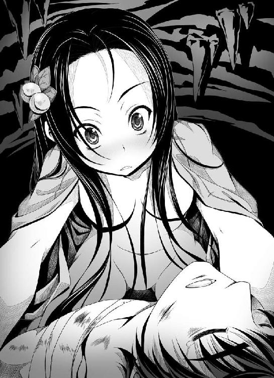
こ、こいつ、なんで私の胸を枕がわりにしてすやすや眠っているですかっ!?
「あう。あうあうあう。ななななんてことにっ!? じゃじゃじゃ邪魔です離れるです......！ ここここの光秀自慢の綺麗なおっぱいは、お前ごときサル人間の枕じゃないです！」
あわてて肩から小袖をはおった光秀が、ぐいっと良晴の頭をつかんで自分の胸からひっぺがそうとすると、
「......母さん......寒い......」
お前もしかして目ぇ覚めとんのと違うかコラ、と光秀は思わず関西人風に怒鳴りたくなった。
「だだだ誰かにこここんなところを覗かれたらたいへんです！ ああああらぬ誤解を受けて信奈さまに『十兵衛ってサルが好きだったんだ～。気絶していたサルを拾って、無理矢理に自分のものにしたってわけ？ ふ～ん。変態じゃないのぉ？』と白い目で睨まれてしまうですっ！ そうなったら光秀は切腹ものですううう！」
早くこいつを放り出さないと！
「......母さん......寒いんだ......」
「はいはいわかりましたですよっ！ もうちょっとだけ素肌で温めてやるです！」
ここまで来たら、半ばやけくそ。
相手がサル人間だと思うから恥ずかしいのであって、こいつは人間の血の一滴すら流れていないほんもののサルだサルだサルなんだと思い込めば火もまた涼し。
「って、人語をしゃべってる時点でそう思い込むのは無理ですうう！」
もうサル人間とは恥ずかしくて目を合わせられないです......と心の中でべそをかきながら、光秀は良晴の体を抱きしめ抱きしめ、（いくらなんでもちょっとばかり借りを返しすぎたです。どうやってこの巨額に膨れあがった貸しを取り立ててやりましょうか）と悶々と照れまくるのだった。
「あーもう！ 半蔵っ！ 早く迎えに来るですー！」
しかし、そんな光秀のもとへ現れたのはどうやら──その扮装から察するに、落ち武者狩りの連中だった。
その数、百名を優に超える。
続々と、洞窟の入り口に集まってきた。
（ひいい。なにをしているですかこの出歯亀ども。このまま散るです去るです帰るです！）
いっそ全員始末して......ややしまった太刀は失ってしまったです！ と焦る光秀。
落ち武者狩りの連中の中から、こんな声が聞こえてきた。
「あやしいぎゃあ......まさかとは思うが、恋人同士を装う織田方の落ち武者だぎゃあ？」
ひい！
気づかれかかっています!?
光秀は仕方なく、「逢い引き中の男女」という設定で小芝居をはじめた。
腕の下に組み敷かれている良晴は、相変わらず眠っている。
（いい気なもんです、このサル人間！）
ええと......逢い引き......逢い引き......な、なにか、愛を語らう台詞をつぶやくです！
って、この十兵衛光秀、逢い引きどころか初恋すらも経験していないです!?
こここここは、げげげ源氏物語とか、そーゆーエロっちい絵巻物を参考に、なんでもいいからしゃべるです！
「さ、相良丸さま。光子は、相良丸さまをお慕い申しておりました......」
ぜんぜん偽名になっていないあたり、さすがはうかつものの光秀。
落ち武者狩りの男どもの前進が、止まった。
あと一押しです！
「え、ええと、今まで口では相良丸さまのことをサルだのバカだのへっぽこだのとさんざん罵倒してきましたけどぉ......み、光子は、実は相良丸さまのことを......お慕い申し......ええと」
あれま、言葉がぐるぐる回っとるぎゃあ、と男どもからダメ出し。
「なーんか、サル芝居っぽいみゃあ」
その一言で......。
ぷつん！！！！！
光秀が、切れた。
（だだだ誰がサルですかっ？ さささサルはこの相良先輩のほうに決まっているではないですか！ むきいいいい、この十兵衛光秀をサル人間と同列に扱うとはあああ！ ああっもうどうにでもなれですううう！）
良晴の頰に唇を押しつけると同時に。
勝手に、光秀の喉の奥から次々と言葉があふれてきた。
「......先輩！ 清水寺で先輩が見せたあの瞳。あの哀しい目。先輩は、私になにを仰りたかったのですか？ 私は、あれからずっと先輩のことが気になって仕方がないです！ 先輩が守りたい人とは、好きな人とは、いったい誰ですか？ やっぱり、姫さまなのですか？ それとも、それとも......もしかして先輩は、私の運命を......この私の未来を知っていて......私が辿ることになる、とてもとても哀しい未来を......その結末をぜんぶ知っていて......！ それで、私を守ってくださると......そう仰りたいのでしょうかっ？」
ななななにを言っているですか私は!?
理性がそう慌てるが、この正体がバレたら良晴ともどもなぶり殺しにされるという極限状況のもと、光秀の体の細胞が勝手に叫びだしていた。
「先輩、教えてください！ 私は......私は、目の前のことに夢中になるとなにも見えなくなるです！ 人に騙されやすくて、空気も読めないから、きっとこれからも失敗を重ねてしまうです！どうか、油断するとすぐに悪い子になってしまいそうな私をお導きください......！」
ぎゃあああ、こんなの、このお利口な光秀の台詞じゃないですー！
内心で光秀の理性がやめてえーと叫び続けるが、言葉のあとからこれまで押し殺してきた感情があふれでてきた。
「先輩。あの清水寺で私は、相良先輩に......恋を......してしまったのかも、しれないです。
あんなに哀しそうな目をした人を、私は、今まで見たことがなかったです。
いつも陽気に振る舞っている先輩はその心の中に、いったいなにを隠して......なにを知り、なにを哀しんで......。
私は、人に言えない哀しみを抱えて戦っている先輩を、癒やしてあげたい......。
先輩が会いたくても会えない、母上のかわりに......」
......
はっ？
目と鼻の先に、視線を感じる......？
「......なあ十兵衛ちゃん。さっきからいったいなにを言っているんだ......？ ははあ、さてはまた俺をおちょくろうとしているのか？ これもまた〝人をおちょくる七十二の方法〟のひとつか？」
ひいいいいいっ？
ななななななんちゅうところで目を覚ましやがるですか、このエロザルうううううっ!?
光秀は今すぐ良晴の首を打ち落としたい衝動に駆られたが、なんとしても恋人同士の芝居を続けなければならないので、むぎゅーと裸の良晴にしがみついて「ふええええ」と涙声をあげた。
「ちょ？ なにしてんだよ？ ややややめてくれよ、興奮しちまうだろうが！ ままままさかとは思うが、ひょひょひょひょっとして本気なのかっ!? だだだだとしたら、おおおお俺はけけけ健康な高校生男子としてもももももうががが我慢できなくなるぞ!?」
「はあ？ ななななにを言うですかっ!? ここここの十兵衛ともあろうものが、さささサル人間なんかに、こんな情けないへろへろの告白なんてするわけないですう！ さささサル人間が土下座して『好きだ夫婦になってくれ』と泣いて喚くというのならばすすす少しは考えてやってもいいですが、これでは完全に立場が逆ですううう！」
「って、なんで俺が十兵衛ちゃんに土下座して求婚しなきゃいけねーんだよっ？ 離れて。ほんと。やばいから。俺、ほら、疲れきっているから、男って体が死にかかっているこういう時のほうがやばいから！ 意思とは無関係に、種族保存の本能が発動して......！」
「そ、そうです！ ここここれはぜんぶ、ゆえあってのお芝居なのです！ そうですとも！ お芝居ですから、どんな噓を言ってもかまわないんですうっ！ 私がしゃべっている言葉は、ぜーんぶ噓なんですう！」
「ちょ。おっぱい。おっぱいが俺の胸に当たってる！ なんで、はだけてるのっ？ うわああああ、十兵衛ちゃんが壊れたああああ!? 五右衛門、助けてええええ！」
「ささささささ、相良先輩っ！ な、なんだか、さっきから私のおなかにかたくて熱いものが当たっているですが......これはいったい......」
「ななななんでもねえ！ なんでもねえよっ!?」
「と、とにかく......芝居続行ですっ！ 今から言うことは噓ですからぜんぶ聞き流してくださいっ！ 十兵衛は先輩が好きです！ 先輩には、悲惨な退却戦なんて似合わないです！ いつも笑顔でいてほしいです！ 私にできることがあれば、なんでもします！ 明智十兵衛光秀は、相良先輩のためならよい子になります！」
......
......
あっ......。
しまったです。
あまりにも心にもない台詞をしゃべっているうちに、うっかり頭に血がのぼって本名を名乗ってしまったです。
いやあ。やっぱりこの十兵衛光秀、噓をつくとか芝居をするとか、そういうずっこい真似ができないまっすぐなよい子なのです。
てへっ。
などと、かわいく舌を出して笑っている場合ではない。
「って、えらいこっちゃ～！ あの女、明智光秀だぎゃあああ！」
「じゃあ相良先輩ってのは......まさか......」
「相良良晴だみゃあああ！」
落ち武者狩りの一揆衆が、いっせいに鍾乳洞めがけて突撃してきた！
「し、しまったです！」
「なるほど、そういうことだったのか！ 落ち武者狩りの奴らの視線から正体を隠すために敢えて恋人同士のふりを......マジなのかと思って焦った......」
「ちょっとサル人間！ なぜ胸をなで下ろしているですかっ？ 失敬です！ というか、起きてくださいっ！」
だが、体力を消耗した良晴はまだ起きられない。
「......わ、悪い。体がまるでいうことをきかねえようだ......か、下腹部だけが元気で......」
「ああもう、使えねえサル人間ですねっ！ ってか、お前はほんもののサルですサル！」
「......お恥ずかしい」
日本刀は、大太刀・小太刀ともども、大地の裂け目から這い上がる時に折ってしまい、もうない。
「やべえぜ、このままでは！」
「相良先輩、ここは私に任せてください！」
光秀と良晴は、絶体絶命の死地に追い込まれた。
光秀は決めた。
かくなる上は先輩をかばいながら素手で戦い、息絶えるまで相良先輩を守り続けるまで。
「下郎ども、推参なり！ われこそは土岐源氏の末裔、わが名は明智十兵衛光秀、惟任日向守なるぞ！」
はおっていた小袖に帯を締めながら、明智光秀はすらりと立ち上がった。
その心に恐怖はみじんもなく、あるのはただ、相良良晴を守り抜くという炎にも似た感情のみ。
落ち武者狩りの男たちがその凛とした光秀の覚悟に「ほぉ......」と感声をあげ、相良良晴もまた自分を守るために戦い抜こうとする明智光秀のその気高く涼やかな勇姿に、思わず目を奪われていた。
太陽のようにまぶしい信奈とは別種の、月の如く静かな美しさだが──比類なく、美しい。
その内面に秘めたる意志は、信奈に勝るとも劣らぬほどに激しく、そして強い。
良晴は、思った。
べ、別に、裸の姿で抱っこされたり恥ずかしい台詞を叫ばれたりしたから褒めてるんじゃねえ。
こいつ、あのへそ曲がりの信奈が手放しで自分の後継者と絶賛するだけあって......やっぱ、すげえ......。
（......まるで、人の世に舞い降りた天女でも見ているかのような......）
「待て待て。まことの十兵衛光秀と相良良晴であるかどうか？ 罠やもしれぬぞ。者ども、本気でかかれ！」
男たちの中から、大将格の男──どこかで聞き覚えのある声色だった──が、声をあげた。
「「「「「承知！」」」」」
鋤に、鍬、そして鎖鎌に、日本刀──。
いっせいに、それらの得物が、光秀の細い体めがけて容赦なく放たれた。
「逃げろ十兵衛ちゃん！ 危ねえ！」
だが光秀は、拳を前へ突きだして一歩も退かない。
剣聖・塚原卜伝より鹿島新当流の奥義を受け免許を皆伝された、この無限の才を備える知勇兼備の姫武将は、徒手空拳の戦いにおいてもいささかもひるまない。
「われは、天に問う。運命ならば──この光秀と相良良晴の出会いが戦国の世を変える巨大な運命ならば、われらはまだ死なぬ！ われらが出会いは、是か非か！ 天よ、われに答えよ！」
だが、この時。
脱臼したばかりの光秀の右肩が......悲鳴を上げた。
右腕が、動かない。
光秀は、死を、覚悟した。
冬の叡山。
女人禁制の霊山・叡山の根本中堂に本陣を設け、ときおり血気盛んな正覚院豪盛に夜襲をかけさせ、旗色が悪くなればさっと僧兵たちを女性禁制の山へひかせてしまうという戦法で一方的に有利な籠城を続けていた朝倉義景と浅井久政は、その夜、にわかには信じがたい報告を物見の兵から聞かされた。
「織田信奈は健在！ 叡山を包囲した織田軍を自ら指揮しはじめ、こともあろうにこの叡山に火を放つ準備を着々と整えております！」
浅井久政は、その報告を信じなかった。
織田信奈が生きていただけでも驚きだが、まさか叡山に攻め寄せてこようとは。
「バ......バカな......この叡山を、焼き討ちにする......だとっ!? 叡山こそは八百年の歴史を誇る、日ノ本仏教界の最高峰におわす聖地であるぞっ!? いやいや、さらに遡れば仏教伝来以前のはるか昔より日ノ本古来の神がおわす霊山ではないか」
久政の言葉は、すべていちいちこの時代の常識論であった。
「織田信奈は乱心したのか。女の身でありながら叡山へ攻め込もうとするだけでも非常識だというのに、全山焼き討ちとは！」
『源氏物語』の絵巻を傍らに広げながら月を眺めていた朝倉義景は、「これは酔狂なことになってきた」と手を叩いた。
「感服したぞ織田信奈、さすがに天下布武を宣言するだけのことはある。現世の女人とは思えぬぞ」
さすがとはなんだ！ と久政が声を荒げた。
涼しい顔の朝倉義景は「織田信奈は共倒れ覚悟で余の策の盲点を突いてきた」とうなずく。
「聞け久政。この叡山は険阻な山ではあるが、岐阜城の如き城塞ではない。そもそも叡山はこれまで攻められる心配のない聖地だったゆえに、防御というものを考える必要がなかった。ゆえに本気で攻められれば、これほどもろい拠点もない」
さらに義景は続ける。
「これで、叡山は女人禁制というこの一点を前提に組み立てた余の戦略は根こそぎ覆された──だが、叡山を焼き討ちなどすれば織田信奈は日ノ本中の仏僧や信者どもをすべて敵に回すこととなろう。そうなれば天下布武など夢のまた夢となる。それを承知で、なおも焼き討ちを決行するだろうか？ この衝撃はなんだろうか、余はなにやら胸が高鳴ってきたぞ──」
織田信奈がほんとうに覚悟を持って叡山を焼き討ちにできるのか。あの者は真の魔王なのか、それともただ常識を知らない田舎の小娘なのか──いちどこの目で織田信奈を見てみたいものだ、いや、ぜひわが一乗谷の館に連れ帰ってみたい......朝倉義景は目を輝かせながらくっくっと笑いだした。
小心な浅井久政は、もう顔色を失っている。
「わ、わ、笑っている場合ではないぞ、義景どの！ もとはといえば、あなたが叡山籠城という策を出したのではないか！ なんとかしてくだされ！」
まったく風流を理解せぬ御仁だ、と義景は鼻で笑いながら久政をにらみつけた。
「久政、策は三つある。上策は、先手必勝。山に火を放たれてからでは手遅れ。今すぐ全軍で麓の織田軍へ逆落としをかけて攻め入るのよ。乾坤一擲の勝負を挑むのだ」
「敵は、叡山焼き討ちの報に慌てたわれらが山を駆け下って出てくるのを待ち構えているかもしれんではないか！ もっと安全な策はないのか？」
やれやれ......小心者に限ってこのような猜疑心だけは強いものだと義景は久政に半ば呆れながら、ふたつめの策を語った。
「中策は、叡山の僧侶を使者にたてて和睦をすること。叡山を焼き討ちすれば織田信奈は日ノ本中の仏僧とその信者をすべて敵に回すという事実をこんこんと説けば、まず和睦は成立しよう。織田信奈がほんとうに狂していなければ、だがな。この中策を採ればわれらは無傷で本国へ帰還できようが、八方ふさがりの窮地に陥っている織田勢も息を吹き返し、戦況は膠着しよう」
たしかに安全な策だな、と久政がうなずいた。
「しかして義景どの、下策は？」
「勝ち目なしと見て、さっさと織田信奈に降伏するのよ。そなたは、織田信奈の妹をめとっている長政に家督を返して出家せよ。さすれば浅井家は滅ぼされずにすむだろう」
降伏などできぬ！ と久政が顔を赤らめて立ち上がった。
「わ、わしはわが子の長政を天下人にするために、敢えて織田と手を切ったのじゃ！ それだけはならんぞ、義景どの！」
この浅井久政という男はどうやら優柔不断な御人のようだと義景は思った。
「義景どの、ここは中策を採ろう！ われらに加勢してくれた叡山を焼き討ちなどに巻き込んではならん。ここはいったん和睦し、織田信奈との決着はいずれ堂々とつけよう！」
浅井久政がそう叫ぶと、中堂の傍らで護符を磨いていた土御門久脩が「おやおや恥知らずな裏切り者が急に善人ぶりだしたね。素直に死にたくないと言えばいいのにねえ」とあざけるように笑い、これまで無言で軍議を座視していた正覚院豪盛が「それでは拙僧が織田の陣へ使者として参り申そう」とうなずいた。
「がははは！ 不浄の女どもが叡山を焼き尽くすなどという暴挙、この豪盛、決してやらせはせぬ！ じゃが、対等な和睦などは片腹痛し。女ども、われらたくましき男にひれ伏せ！ と降伏を勧告してきてくれるわ！」
豪盛は続ける。
「この根本中堂には八百年にわたり灯り続けてきた尊い〝不滅の法灯〟がある。守らねばならん。この豪盛、小娘の癇癪などで叡山を滅ぼさせはせん。滅ぼさせはせんぞ！」
女を仏敵の如く嫌い見下している正覚院豪盛。この偏屈な奇人を交渉の使者に立てよう──そして、いっそ和睦交渉が潰れたほうが面白いかもしれぬな、と義景は思った。
※
「半兵衛どの！ どうか起きてくだされ、ですぞ！ 姫さまを、姫さまをお止めしなければ！」
京、妙覚寺。
ねねが、眠り続けている半兵衛の体をけんめいに揺さぶっていた。
半兵衛に薬を処方した曲直瀬ベルショールは、「残念じゃが、まだあと数日は起きられぬじゃろう」とねねを何度も止めたが、ねねはあきらめなかった。
良晴も十兵衛光秀も帰還しない今、ねねと織田家家臣団にとって「今孔明」と称される天才軍師・半兵衛が最後の希望だったのだ。
「姫さまは回復されて起き上がられましたが、兄さまたちを弔うために叡山を浅井朝倉勢ごとすべて焼き尽くすと言っておられますぞ！ 家臣たちが諫めてもまったく聞いてくださらぬのですぞ！ 今、姫さまを止められるお方は半兵衛どのしかおられませんぞ！」
そう叫び続けながら半兵衛を揺さぶるねね......その目尻から、ぽたり、と涙が流れた。
「......う......うぅ......兄さまも明智さまも戻らぬ......五右衛門どのも......この上、半兵衛どのまでが目覚められぬのであれば......ねねはもう、どうしていいかわからないですぞ......」
死んだように眠り続けていた半兵衛の頰に、その涙が一滴。
そして......。
「......ねねさん......そのお話は、ほんとうでしょうか」
半兵衛が、ぱちり、と瞼を開いた。
「半兵衛どの！ 目覚められたのですな!?」
ねねは、思わず泣きながら半兵衛に抱きついた。
通じた......。
何度水垢離をしても通じなかったねねの祈りが、やっと、ひとつだけ通じたのだ。
「ねねさん。経緯を、お聞かせください」
「半兵衛どの！ 早く姫さまをお止めしないと、ですぞ！」
ねねの背後から、南蛮渡来の片眼鏡をかけた大柄な商人風の男と、そしてロザリオを胸にかけた金髪の修道女が声をあげた。
「相良はんと明智はんをともに失われたおひぃさまは、怒りのあまり物事がまったく見えておられぬご様子。坊主でありながら武具を手にして織田家に戦を挑んだ叡山の僧兵どもが滅びるは自業自得なれど、明らかにおひぃさまの天下布武事業にとってこたびの叡山焼き討ちは致命的な愚行！」
片眼鏡の男は堺の豪商、今井宗久。
「エイザンはジパングにおいてもっとも伝統ある最高学府と聞きます。いにしえの叡智を集積したこの国の学府を燃やしてはいけません。エイザンの方々が宗教者の使命を忘れて武器を持っているのはよくないことですが、彼らの武装を解除させればそれですむことです」
修道女は、信奈の許可を得て京に入り南蛮寺の建築をはじめていたルイズ・フロイスだった。
二人は、信奈の異変を聞いて駆けつけてきたのだ。二人とも信奈のもとへ向かう前にまず妙覚寺の相良良晴を訪れたのだが、そこでねねから良晴の不在を聞かされたばかりなのだった。
「半兵衛どの。どうか姫さまを説得してくだされ、ですぞ！」
「みなさん。わたしが眠っている間に起きたことを、最初から順を追ってお聞かせください」
知恵者・竹中半兵衛は、自分が臥している間になにが起きていて、そしてこれからなにが起ころうとしているのかを、たちどころにすべて理解した。
曲直瀬ベルショールの治療が功を奏したか、あるいはねねの祈りが通じたのか、あれほど半兵衛を苦しめていた熱もすっかり下がり、いまや半兵衛は明晰な頭脳を取り戻していた。
「わかりました、みなさん。今すぐ本陣へ向かい、信奈さまの誤解を解きましょう」
「「「誤解？？？」」」
「わたしの推測では、良晴さんは水坂峠で死んではいません」
それはどういうことですか半兵衛どの？ とねねが声をあげたが、半兵衛は「それは信奈さまの前で説明いたします。ねねさんは、この妙覚寺で良晴さんのお戻りをお待ちください──良晴さんは必ず帰ってきます」とうなずき、そして「ほんとうに兄さまが生きておられるのですか!?」と目を見開いてぶるぶると震えるねねの頭をなでながらにこりと微笑んだ。
「もちろんです。良晴さんは、こんなにかわいい妹さんを置いて勝手に死んでしまうような悪い人ではありませんから」
※
叡山を焼き尽くす準備は、すでに完成していた。
叡山の琵琶湖側に面する坂本方面に、兵の半数を配置。こちらの部隊は、丹羽長秀と柴田勝家、そして前田犬千代に任せてある。三人とも叡山焼き討ちに声をからして執拗に反対したので、松永久秀が信奈の本陣からひき離したのだ。
残る半数は、京都側──雲母坂の信奈本陣に集まっていた。
この夜は空気が乾燥し、その上、風が強かった。
焼き討ちには最適の条件が揃っていたといっていい。
信奈はこの夜、本陣の床几に腰掛け、ぼうっと手元の地図を凝視していた。
まだ脇腹の傷口は完全にはふさがっていない。
ときおり、激しく痛みはじめる。
しかし痛んでいるのは傷口なのか、それとも自分の心なのか、今の信奈にはわからない。
松永久秀が、信奈の隣に母のようにぴたりと寄り添い、ときおりあやしげな薬を飲ませる。
「準備は整いました。今夜、叡山は灰燼に帰します。あとは、信奈さまのお下知をいただくばかりですわ」
「......デアルカ」
久秀は、朽木信濃守に施した術を信奈に使ってほんものの傀儡にしてしまったわけではない。
人の心を完全に破壊してしまうあのような外道の術を、いまや信奈を実の娘のように愛している久秀が使うはずはなかった。
だが、痛み止めの秘薬を飲まされ続けて夢うつつをさまよっている信奈の耳元に「この世に仏などいないということを民に思い知らせるために叡山を焼き尽くしましょう」「女を人とも思わぬ堕落した僧兵は一人残らず撫で斬りにせねばなりません」「あなたから愛する者たちを奪った憎き敵に、思い知らせるのです。天下人に逆らった者は一人たりとも生かしてはおかぬと」などと毒に満ちた言葉を次々とささやいているその姿は、久秀が信奈を傀儡にしているかのようにしか見えなかった。
このままではいずれ、信奈は久秀が処方する劇薬にさらに心を犯されて、ついには心を持たない人形のようになってしまうことは明らかだった。
しかし、自分を受け入れてくれた信奈を娘のように溺愛し、かわいそうな信奈に復讐を遂げさせてやりたいと念じている久秀には、それがわからない。
心身に深い傷を負った信奈の痛みをあらゆる手段で和らげ、その復讐の手助けをして信奈の敵をことごとく殺し尽くすことこそが自分の使命──そう思い込んでいるのだろう。
そして今の信奈は、ただ......良晴と光秀を浅井久政の裏切りによって失ったという深い悲しみと激しい怒りに、心を支配されていた。
もう......天下布武も、広い海へ乗り出す夢も......サルも十兵衛も、自分とともには見てくれないのだ。
「さあ信奈さま。長らく仏の権威をかさにきて悪行三昧に耽ってきたこの国の坊主どもを恐怖の底に叩き込みましょう。あなたさまから愛する者たちを奪い取った憎き浅井朝倉ともども、破戒僧たちを一人残らず殺してしまいましょう。今こそ、総攻めのお下知を」
妖艶に微笑む久秀に頰を撫でられながら、信奈は、（そうよ......。わたしから大切な人たちを......かけがえのない仲間を奪ったあいつらを、焼き尽くさなくちゃ......サルと十兵衛の......仇を、とらなくちゃ......）と夢心地の中でつぶやいていた。
そして、視線を虚空に泳がせながら、うなずいた。
こくり。
「──みなの、もの......叡山へ、火を......」
信奈が総攻撃の下知を発しようとした、その時。
「お待ちください！」
竹中半兵衛が、息を切らせながら本陣に駆け込んできた。
今井宗久とフロイスも一緒だった。
「信奈さま！ この国の古き権威と仏教界の象徴である叡山を焼けば、ありとあらゆる宗派が信奈さまを仏敵とみなして反旗を翻します！ ことに、全国に膨大な信徒を持つ大坂の本猫寺が敵に回れば、信奈さまの天下布武は十年遅れることになりましょう！」
日頃は気弱な半兵衛が、目をいからせて必死に信奈を説得してきた。
「その上、民心も離れます！ 叡山の僧兵たちの多くが堕落の極みにあることはまことなれど、民はそのような事実を知りません！ ただただ、信奈さまは神仏を尊ばない残虐非道な第六天魔王であると思い込むばかりです！ さらに、叡山の天台座主はお山には不在とはいえ御所の姫巫女さまの兄君にあたられるお方。叡山を火にかければ御所の信頼も失ってしまいます！ 日ノ本中のすべての人々が、信奈さまの敵になってしまうんですよ！」
信奈は、無言で半兵衛の顔を眺めている。
思考が、まとまらない。
（わたし......まだ、夢の中をさまよっているのかしら......それとも......でも......もう、天下布武なんて......もう、いい......わたしが天下布武なんて大それた野望を抱かなかったら、サルも十兵衛も死なずにすんだのだから......今すぐ......復讐しなくちゃ......サルも十兵衛もこのままじゃ浮かばれない......）
多量の劇薬が、信奈から正常な判断力を奪い取っている。
ただ、怒りだけが今の信奈を支配していた。
「信奈さま！ お気をたしかに！」
久秀が目を細めて「お黙りなさい。こたびの戦はあなたの主君、相良良晴の仇討ちですわよ」と半兵衛を叱りつけるが、半兵衛は黙らなかった。
「松永さま、黙るのはそちらです！ さきほどより信奈さまになにを飲ませているんですか、あなたは！ 信奈さまはあなたの傀儡ではありません！」
「ただの、痛み止めのお薬ですわ。でも......お薬だけでは信奈さまの心の傷はふさがりませんの。仇を殺さなければ、信奈さまの見ている悪夢はいつまでも終わりませんの」
そう......やっぱり、これは夢......悪夢の、続きなんだわ......と、信奈はぼんやりと思った。
「......さてはあなたは三好長慶さまに仕えておられた時にも、こんなふうに主君の長慶さまを薬漬けにして、そしてうつろになった長慶さまの耳元にあることないことを吹き込んで次々と家臣団を粛清させたのですね！ そもそも、柴田さまと丹羽さま、さらには小姓の犬千代さんがなぜこの場にいないんですか？ この叡山焼き討ちが終わったら、次は信奈さまへの諫言を恐れぬお三方を粛清させるおつもりですね？ 信奈さまがあなたの薬に酔って夢うつつの心地でまどろんでいるうちに──そんなものは忠義ではありません！」
松永久秀が、ふん、と半兵衛の言葉を笑い飛ばす。
「わかりませんわ。主のお心より痛みを取り除いてさしあげるのが家臣のつとめではなくて？」
「それは違います！ 主が間違った方向に向かったら命を賭けて諫言することも家臣たるもののつとめです！ それに──明智さまの安否はわかりませんが──良晴さんは、水坂峠で式神どもに八つ裂きにされて殺されたわけではありません！」
信奈の頰が、ぴくり、とひきつった。
（これは夢......夢の、続き......？ それとも......現世、なの......？）
良晴が、生きているというのであれば。
どうか......現世で、あってほしい。
しかし、ここが現世だと信じる勇気が、なかった。
また、「わたし、幸せだわ」とこの世に生まれてきたことを感謝した瞬間に「すべては夢でしたのよ」と耳元でささやかれることが、怖かった。
怖くて、仕方がなかった。
「......サルが生きているとは......どういうことなの？」
「この半兵衛が病にて良晴さんに同行できなかったゆえ、良晴さんが京を出立する際に前鬼さんをつけておきました。また、浅井長政さまの救援に向かった五右衛門さんのかわりに、金ヶ崎では服部半蔵さんが良晴さんのしんがり部隊に参加されたとうかがいました。その後、松平さまや明智さまたちが水坂峠へ良晴さんをひそかに救出に向かい、悲劇を目撃したと......そこまで聞いた時に、謎は解けたのです」
「......謎？」
「良晴さんは戦がない平和な世界で生まれ育ったがゆえに、とても心の優しい人です。目の前で大切な仲間が討ち死にしていくさまを見続けることに耐えられる人ではありません。さりとて、たとえ大勢の仲間を守るためとはいえ、誰よりも大切に想っている姫さまを残して自分の命を軽々と捨てるような人でもありません。なんといいますか、あれもこれも絶対にあきらめない、とっても厚かましい人なんです。ぜんぶの実を拾わなければ気がすまない人なんです。ですから──」
信奈は、惑った。
半兵衛の言葉は、現世のものなのか、それともやはり夢なのか。
自分自身の願望が、半兵衛の姿を借りて言葉となっているだけなのだろうか。
それとも。
それとも......。
「信奈さま。伊賀甲賀の忍術には〝微塵隠れ〟という秘術があります。本来は生身の人間を影武者にして、影武者さんを木っ端微塵に爆破することで敵に自分は死んだと思わせる、そんな冷酷非情な術だと聞きます。影武者を爆死させるのは、人相を確認できなくしてしまうためです。土御門久脩さんとやらがせっかくの賞金首の良晴さんを粉々にしてしまうはずはありませんから、服部半蔵さんが良晴さんの影武者を爆破したのだと思います。良晴さんは、仲間を自分の影武者に仕立てて爆死させるような残酷な真似は絶対になさらない人ですが、幸運なことに──しんがり部隊の中に一人だけ影武者に仕立てられる者がいたんです！ それは──」
半兵衛が、懐からドーマンセーマンの護符を取り出し、信奈の目の前へと放り投げた。
式神、召喚。
狐顔の前鬼が信奈の前に出現し、「おやこれは織田の姫君ではありませんか」と平伏した。
「さよう、半兵衛どのの仰る通り。俺は五体を爆破されても死なぬのでな、半蔵と組んでとっさに〝微塵隠れ〟の術をかけた次第。土御門のガキを騙せるかどうかは賭けであったが、明智光秀たちが偶然あの場に乱入してきたことに奴も気を取られたとみえる。綱渡りだったが、うまくいったようだ」
信奈は、まだ、（夢だわ。都合のいい夢を、見ているのよ）とつぶやいている。
「......サルが生きている......？ じゃあ、どうしてさっさとわたしに報告しなかったの？」
「ふん。わが主・半兵衛どのは長らく臥せっておられたのでな。俺は主に召喚されねば現世に現れることができぬ身、伝えたくとも伝えられなかったのだ」
「これが夢でないのなら......服部半蔵は......竹千代はどこ？ どうしてわたしになにも教えてくれなかったの、あの二人は......？」
おそらく服部半蔵さんは、敵地の真っ直中である水坂峠では〝微塵隠れ〟の秘密を松平さまに打ち明けられなかったはずです。主の松平さまを京へぶじに送り届けたあと、はじめて松平さまに〝微塵隠れ〟の件をすべて打ち明けたはず──と、半兵衛が述べた。
「......じゃああの二人は──竹千代は......」
「はい。松平さまは律儀者。おそらく水坂峠に生き埋めにしたままの良晴さんを救出するために──みたび、こんどは人数を率いて西近江の山中へ」
「......ほんとうに......ほんとうに......？」
それらのお話はすべてあなたの想像にすぎませんわ、と久秀が半兵衛を叱りつけようとするや否や。
「そ、そ、その通りです～。あまりにも慌てていたので、吉姉さまに書き置きを残すのをすっかり忘れていました～」
「──服部半蔵、参上。多少の手違いがあったが、京へ帰り着いたしんがり部隊の連中が揃いも揃って捜索隊に志願してきたのが幸いした。わが任務は、これですべて完了した」
「すすすみません吉姉さま～。そもそも手違いが起きたのは、わたしが兵を連れずに京から水坂峠へ引き返したせいなんです～」
たぬ耳の松平元康と、黒装束の服部半蔵が、本陣へと馳せ参じてきた。
そして、二人の背後には──。
「やったぜ大将！ 俺たちは信じていたみゃあ！」
「大将は、姫さまに会うまでは殺しても死なねえ、しぶといお人だと！」
「わしらしんがり部隊の生き残り百五十人、今日から大将の家臣にしてくれみゃあ！」
「これからずっと死ぬも生きるも一緒だぎゃあ、良晴の大将！」
「おいどんも、運良く生き延びて京へ辿り着けたでごわす」
金ヶ崎からはじまった地獄の撤退戦をせっかく奇跡的に生き抜いたというのに、再び良晴を捜すために休むことなく西近江の山中へと舞い戻っていた大バカ野郎ども。
しんがり部隊の野郎たち。
全員が、体中に無数の傷を負っている。
だが、その表情は晴れ晴れとしていた。
（命がけの使命を、ついに果たしたみゃあ！）
（姫さまと、相良良晴の大将を、生きてこの世で再会させることができたぎゃあ！）
（死んでいった仲間たちも、喜んでくれてるみゃあ！）
誰の表情も、そんな充足感と達成感にあふれていた。
しかし......。
（噓だわ。これは夢だわ。わたし、つい最近、これとほとんど同じ夢を見たばかりじゃない。そして、夢が、夢にすぎないと知って......言葉も出ないほどに、目の前が真っ暗になったじゃない。そうよ。なにもかも、わたしが見ている夢......かなわなかった夢、失った希望、永久に消え去ったかりそめの未来なのよ......！）
信奈は、まだ、ひとりぼっちのまま夢の世界から覚められないでいた。
そして──。
（ほら。やっぱり......夢だわ......）
汗みどろの男たちをかき分けながら、誰よりもボロボロになっている一人の少年が信奈の足下に転がってきた。
「さっさと姫さまに接吻するんだぎゃあ、大将～！」
「熱いみゃあ、熱いみゃあ～！」
「わかったわかった！ とにかく手前ら、今は叡山焼き討ちを止める件だあ！」
相良、良晴。
夢に、決まっている。
でも。
夢でも、幻でも。
噓でも。
また、残酷な目覚めの時が来て、裏切られるとしても。
それでも、もう。
それでも、よかった。
涙で視界が、ぐにゃぐにゃに曲がった。
こんなにも、自分はこの人にもう一度会いたかったのだ、と信奈は思った。
「......わたし、また、夢を見ているのね。サルが生きて戻ってくるわけ、ないのに......」
「おい、信奈？ なんだよ、瞳がうつろだぞっ!? なにぼーっとしてるんだよ、俺だよ！ 相良良晴だって！ ほら、俺だ俺！ ウッキー！」
「......夢......なんだわ......う、う......うぅ......」
「って、信奈......？ なんだよ、なに悲しんでるんだよ？ お前、様子が変だぞ!? まさか俺への恩賞をまたしてもごまかすためにメンヘルのふりでもはじめたのかっ!? それとも俺に恩賞の約束をしたことを、泣きたくなるほどに後悔しているとでもいうのかああああっ!?」
良晴が、近づいてくる。
一歩。
また、一歩。
まるで、生きているほんものの良晴にそっくりだった。
いっそこのまま、わたしを夢の世界に連れ去ってほしい......と、信奈は願った。
「ははあ......寝ぼけてるんだな。おい信奈、いいかげんに目を覚ませ！」
ぴしゃり、と両頰を左右から乱暴に叩かれた。
ヘンだわ。夢なのに、痛い......と、信奈は不思議に思った。
「良晴さん。信奈さまは松永さまが処方した痛み止めのお薬を飲み過ぎて、夢と現世の区別がつかなくなっているご様子です......でも良晴さんなら、信奈さまを現世へ引き戻すことができると思います。くすん、くすん」
半兵衛が、良晴にそう教えた。
「まったく。人がやっとの思いで帰ってきてやったというのに、しょうがないやつだな！ よーしわかったぜ信奈！ 西洋のおとぎ話ではな、眠り姫は王子さまのキスで目覚めるって決まり事があるんだよ！ ま、サルの国から来たサル王子だけどな......」
あれ......。
こいつ。
まさか、わたしに、接吻......する、つもり？
唇が、近づいてきた。
ちょっと。
待って。
いっぱい人がいるのに。こんなところで。
あ......。
でもこれは夢だから、いいのよね。
良晴とキスしても、もう、誰もわたしを叱らない。
夢なんだから。
だったら......。
だったら、いいかな。
「......」
信奈は、抵抗しなかった。
目をうるませ、良晴にされるがままになっている。
やれー大将！ いけー大将！ と、しんがり部隊の野郎どもが良晴を囃し立てる。
「信奈？ に、逃げねえのか？ しょ、しょうがねーな......それじゃ......お、お、お、恩賞を......い、い、い、いただくぜ！」
......
唇が触れあおうとした、その瞬間。
フンッ......！
興奮しすぎていたのか、良晴が思わず盛大に鼻を鳴らした。
......
くん、くん。
この、臭いは......？
たこ焼き......!?
「って、夢の中のサルじゃないわ!? わたしの夢に出てくる良晴は、接吻する前に鼻からこんな下品な臭いなんてさせないものっ！」
ずっとずっと暗い夢の中をさまよっていた信奈の視界は、この瞬間、不意に光に覆われていた。
ただし、「たこ焼き臭いサル」という形をした光だったが。
その上、サルの前歯には青のりがついていて、まさに最低であった。
久秀が施した劇薬の強烈な効果も、この時、瞬時に消え失せていた。
（夢じゃなかった!?）
と、いうことは......こいつはほんもののサルで、さっきから「やれー」「いけー」「チューしろー！」と騒いでいる足軽たちも、全員ほんものっ!?
青白かった信奈の頰に、みるみる朱が差してくる。
「ひ......ひいいいいっ!?」
ごんっ！
目覚めた信奈は慌てふためき、とっさに良晴の鼻先に頭突きを入れていた。
「い......いてええええっ!? なにすんだふごふがっ!?」
間髪入れず、良晴の鼻の穴に指をずぶりとぶっ刺した。
「ふげえええええっ!?」
さらに、
「よくもわたしが眠っている間に唇を奪おうとしたわね、このエロザルッ！」
これじゃ家臣の前で示しがつかないでしょ！ とばかりに照れ隠しの凶悪ビンタ攻撃。
まず、良晴の右の頰を勢いよく打ち抜く。
ぱちぃん！
「ちょ......俺はただ、約束の恩賞をもらおうと思ってだな......！」
さらに、駄目押しの照れ隠し攻撃。
「う、うるさいわね！ デウスの教えにあるでしょ！ 右の頰をぶたれたら、左の頰も出しなさい、ってね！ おとなしく殴られなさいよ！」
左の頰にも、ぱちぃんと爽快な音を響かせて連打。
「ノブナさま？ そ、それはちょっと意味が違います......ぼ、暴力はいけません」
とフロイスが飛び出してきて、慌てて良晴をかばう。
「フロイスちゃ～ん！ この凶暴女がひどいんだよ～！ 俺はただ約束の恩賞をいただこうとしただけなのに......どうしてこんな目に遭わなきゃならねーんだ～。この世は闇だぁ～」
「だいじょうぶですヨシハルさん、だいじょうぶですから」
豊かすぎる胸で良晴をあやすフロイス......その姿を見ているうちに、信奈は苛ついてきた。
そうだわ。
ここはたしかに間違いなく文句なしに唯一無二の現世だわ。
だって......夢の中に出てくるサルは、わたししか見ていないもの。
でも......ほんものの生きているサルは、六やフロイスの大きなおっぱいに夢中なんだったわ！
と～っても、苛つくやつなのよ！
「このエロザルううう！ フロイスから離れなさいよっ！」
「イヤだねっ！ またしても恩賞を反故にされた俺の気持ちがお前にわかるかあっ!? お前の唇のかわりに、フロイスちゃんのあたたかい胸に甘えるんだああ！ まるで赤子のようにっ！」
「よ、ヨシハルさん？ あ、あの、あんまりすりすりしないでください......」
「きいいいい～！ なにやってんのよ裏切り者の浮気者！ フロイスのおっぱいから離れなさいよおおおおお！」
イヤだイヤだとフロイスに甘え続ける良晴のお尻を思いきり蹴り上げながら、信奈は泣きだしそうになる自分の感情をかろうじて抑えつけていた。
夢じゃない。
夢じゃない！
ほんものだわ！
ほんものの良晴が、帰ってきたんだわ！
「やったぜ大将～！ 姫さまに殴られるや否やこんどはパードレさんに走るとは、とことん見境ねえぜ～！」
「さすがは天下一の女好きだみゃあ！」
「これでこそ相良良晴だぎゃあ！」
「あんたらも、いいかげん黙りなさいよー！ まだ軍議の途中なんだからっ！」
そして......。
「ちょっと待つです！ サル人間先輩が生き延びたのは、この十兵衛光秀の功績なーのーでーすう！ みんな、この光秀のことをすっかり忘れているような気がするのはなぜですかっ!?」
広いおでこ。
髪飾りのきんかんが一個欠けているのは、道中で喉が渇いて食べてしまったからだろうか。
明智十兵衛光秀が、いっこうに道を空けようとしないしんがり部隊の野郎どもを蹴り倒し投げ飛ばしながら、フロイスと良晴の間に強引に割り込んできた。
「──十兵衛っ!? あんたも生きていたのっ!?」
「〝も〟、とはなんですかです、信奈さま！ 使えねえ服部半蔵がサル人間先輩を地中に埋めたまま水坂峠から去ったので、この光秀がかわりにサル人間先輩をお助けしたです！ この天才・十兵衛光秀がいなければ先輩は今ごろ野ざらしのしゃれこうべですっ！」
まさかあれだけ深い大地の裂け目へと落ちながら生きていたとは......たとえ手練の忍びでも十中八九助からぬはず......明智光秀のゴキ×リの如き生命力、恐るべし。
もしかしたらこの娘は悪い意味で、妙な天運の持ち主なのではあるまいか。
半蔵が、なにかに怯えるかのように小さな声を漏らした。
「まあ、最後は落ち武者狩りの一揆衆に変装したしんがり部隊の野郎どもが、洞窟に隠れていた私と先輩を助けに来てくれましたから、半蔵と松平どのがこの十兵衛光秀を見捨てて水坂峠からさっさと逃げた件はチャラにしてやります」
そう。洞窟に隠れていた光秀と良晴を襲ってきたあの落ち武者狩りの連中は、実は良晴捜索のために西近江へ引き返してきた半蔵と元康が率いていた、しんがり部隊の野郎どもだったのだ。コテコテの尾張弁で喋っていたのに光秀も良晴も彼らの正体に気づけなかったのは、文字通りの極限状態だったからだろう。
先頭に立って光秀に攻撃をしかけてきた手練の男たちは、服部党の忍びたちである。
光秀と良晴がほんものなのかどうか、敵方の罠ではないのかをたしかめるために、あえて土壇場まで落ち武者狩りを装っていたというわけなのだ。
しんがり部隊の面々が、口々に語る。
「いやあ。最初は、お二人だとは気づかずに覗いていただけだったみゃあ」
「途中からは、あれこの二人は......と気がついたぎゃあ」
「なんか知らんけどえらく盛り上がってたので、その先を見たくなったんだぎゃあ」
「惜しかったみゃあ。もうちょっとだったみゃあ」
「そうだと知っていたら、あんな恥ずかしい猿芝居などやらなくてすんだです......！ 悔しいです！ 貴様ら、いずれ仕返ししてやるです！」
「もう、さんざん仕返しされたみゃあ......」
「......勘弁してみゃあ......」
「お前ら、あれはぜんぶ猿芝居！ 綺麗さっぱり忘れるですよ！ 一言でも漏らしたら全員殺すです！」
きいいと目を吊り上げた光秀にギロリと睨まれた野郎どもが、震えながら視線をそらした。
猿芝居って......いったいなにをしていたのかしら......と信奈は不思議に思ったが、でも、なんだって構わない。
夢じゃない、ほんものの良晴と光秀が、生きて自分のもとへ戻ってきてくれたのならば......。
「というわけだから信奈、叡山焼き討ちは中止しろ！ 俺も十兵衛ちゃんもこの通り、ぴんぴんしている！ 言っておくが、幽霊でも幻でもねえぞ！」
「あ......うん」
良晴に一喝された信奈が、腰が抜けたようにへにゃへにゃ......と床几に座り直して、しおらしく「こくり」とうなずいた。
（そうだわ。さっきは慌てて暴れちゃったけど、サルに恩賞を約束していたんだわ！ せ、接吻......な、南蛮語で、き、き、キスっていうんだっけ？ き、キスを与えないと......！）
今すぐ良晴に約束の接吻を与えたくてうずうずしていたが、家臣団の目が光っている。
（わ、わたしは、こ、こんなサルに唇を奪われるなんて、じょ、冗談じゃないけど、死ぬほどイヤだけど、で、でも、約束したんだし、サルがしんがりを引き受けてくれなければわたしたちは全滅していたんだし......で、でもさすがに、二人きりにならないと無理だわ......）
信奈は、涙を流すまいと、必死でやせ我慢していた。
（ダメダメ！ 今は、目の前の戦局を打開しなくちゃ。サルにご褒美を与えるのは......二人きりになるのは、その後よ！ みんなが「さあ泣け、早く泣け、サルに抱きつけ！」と目を血走らせて注目しているこんなところで......な、な、泣いてたまるもんですか！）
かろうじて、良晴に抱きついてわぁわぁ泣きだしたいところを気位の高さだけでぐぐっと踏みとどまって、口をへの字に曲げる信奈。
「......ふ、ふん。それにしても、さすがはサルだわ。山野を駆けるのは得意のようね！」
「あたぼうよ！ 俺がそう簡単に死ぬかよ！」
良晴が、笑った。
だから、前歯に青のりがついている。
浅井長政の優雅な微笑と比べると、月とすっぽん（もちろん良晴のほうがすっぽん）。
品もないし、風雅さなんてかけらもない。
もしかしてほんとにサルの仲間なのかしら......と疑いたくもなる。
夢に出てきたかっこいい良晴とは、ぜんぜん違う。
かっこ悪い......と、信奈は頰を真っ赤に染めながら、口ごもった。
「え？ なんだって？ 悪い、聞こえなかった！」
「あんたって、ほんっとにかっこ悪い、って言ってるのっ！」
「その、意図がさっぱりわからねぇ無駄な毒舌......どうやら、まともな織田信奈に戻ったみたいだな！ いや～、よかったよかった」
良晴の笑顔を上目遣いに見つめているうちに。
信奈の全身は......おなかの底から湧き上がってくるあたたかいなにかに、満たされていた。
今また、四方を敵に囲まれて叡山に釘づけになっている......そんな窮地に立たされているというのに。
信奈の心に、もう恐怖は、なかった。
こうして、再び良晴と同じ世界に生きて、同じ夢を見ることができる。
窮地ではあるが、自分は、孤独ではない。
背中を支えてくれる人と、この現世で、巡り会えた。
そう、思うだけで。
全身から、力が、あふれてくる。
だから、この危機だってきっと打開できる、と信奈は確信した。
「......信奈さま、こんどは躁のお気分がすぎるよう。こちらのお薬を」
松永久秀が信奈の唇に杯を近づけてきたが、良晴は「待て待て」とその杯を奪い取った。
「久秀！ 信奈に二度とヘンな薬なんか飲ませるんじゃねえ！ 俺の顔を見るまで、信奈の目が完全に飛んでたじゃねーか！ お前の薬のせいだろっ!?」
「サル。弾正が処方してくれた薬がなかったら、わたしは鉄砲傷で死んでいたわ。ちょっとばかり飲み過ぎたかもしれないけど、それくらいにしてちょうだい」
「お、お前がそういうのなら、いいけどさ。久秀、頼むから妙な真似するんじゃないぞ」
「はい......信奈さまは、わたくしごときが操れるお方ではありませんわ」
良晴に叱られた久秀が、良晴の顔を驚いたように見つめながら、めずらしいことにおとなしく引き下がった。
「......信奈さまは、とてもお強いお方。それに......どうやら、波斯の秘薬などよりももっと強烈な力を持つお薬をお持ちのよう。もうわたくしが煎じるお薬はいりませんわね、うふっ」
「はあ？ 信奈が薬持ち？ どういう意味だ？」
「......ほんとに、鈍いお方ですこと」
久秀は、それ以上は黙して語らなかった。
ちょっとなにを勘違いしているのっ、それ以上言っちゃダメよ弾正！ と信奈が慌てて久秀を制したからだ。
叡山焼き討ちは、土壇場で中断された。
次々に、別働隊を率いていた重臣たちが本陣へと呼び戻された。
「さささサルと、みみみ光秀が、生きていたってえ？ あ、あ、足は、足はついてるのかっ？」
涙目で震えながら、良晴と光秀に足がついていることをたしかめて、
「ででででかした、お前ら！ よくぞ姫さまの暴走を止めてくれたあああ！」
よかったお化けじゃなかった！ と狂喜乱舞する柴田勝家。
喜びが爆発しすぎて、次々と周辺にいる足軽たちをなぎ倒している。
「あとは叡山側との交渉を片付けるのみ。まだまだ苦しい戦局は打開できていませんが......お二人のお姿を見られただけで、満点です」
と丹羽長秀。うっすらと涙ぐんでいるが、その表情は静かで、そしてにこやかだった。
「......おなかすいた......きんかん、ちょうだい」
光秀の髪飾りに手を伸ばし、「だーめーでーすー！」と断られてむくれる犬千代。
良晴に「八つ橋、やるぜ」となだめられて、やっと機嫌を直した。
竹生島に捕らわれた長政・信澄夫婦と、その二人を救出するために北近江に居残っている五右衛門を除くほぼすべての重臣たちが、復活した信奈のもとに勢揃いした。
「みんな！ サルと十兵衛の生還を祝いたいところだけど、浅井朝倉は叡山にこもったままだわ！ これ以上ここでにらみ合っていれば、三好と六角に背後を襲われて京を奪われるわ！ 将軍・今川義元を取られたらわたしたちの負けよ、なにか策を出しなさい！」
雪でも降りはじめれば朝倉勢は越前へ引き返すんだがな......と良晴が頭をかいた。
「すでに三好勢は四国より摂津の尼崎へと上陸したもようでおます。甲賀の六角承禎も南近江へ攻め寄せ、京と美濃とをつなぐ中山道を封鎖しとるとか」
と、今井宗久。三好勢の動きは、商売敵の津田宗及を通じて筒抜けになっている。いちどは近衛前久が画策した信奈打倒の動きに乗った津田宗及も、今井宗久に堺会合衆の代表の座を譲ってからはずいぶんとおとなしい。もっとも、腹に一物を隠しているのかもしれないが......。
「デアルカ。悔しいけど、敵の目算通り......もう時間がないわね。山にこもった浅井朝倉が全軍で下山して決戦を挑んでくれればいいんだけど。意外にもあいつら、粘り腰だわ」
「あわわ。私、もしかしてこのまま永遠に三河へ戻れないのでしょうか～？」
「心配しないで、竹千代。なんとしてでもこの膠着状態を打破するわ」
「とはいえ、これといった策はありません。二十点です」
一同が考え込んでいるところへ──。
「叡山より、使者が参りました！」
「天台座主さまより叡山を任されたこの正覚院豪盛が、きさまら姫武将どもに降伏を勧める使者として参ってやったぞ！」
やたらと酒臭い、武蔵坊弁慶の如き異形の僧兵だった。
（あいつが、夜討ちに来ては勝家に蹴散らされてそのたびに叡山に逃げ込んでるという......）
（女人禁制を盾に取って平気でいる。粗野で卑怯な男です。零点です）
（いったい女の子をなんだと思ってるですか。許せませんです）
そんな不満顔の信奈たちの前にまかり出た豪盛はいささかも悪びれず、頭も下げない。
「なんたる乱世、なんたる末法の世、不浄な小娘どもが武具を取って大の男を相手に戦をしているとは......なんと嘆かわしい！」
豪盛はこれみよがしにそんな憎まれ口を叩き、犬千代から差し出された茶には「不浄じゃ」と顔をしかめ、「......では、ういろうを」と勧めてきたお盆を「毒が入っとるかもしれん」と足で蹴り飛ばし、いっさい手をつけようとしない。
その上、一方的に話を切りだした。
「浅井久政どのと朝倉義景どのは、伝統ある叡山を灰燼に帰すことは忍びずと言っておる。織田信奈、貴様にわれらに降伏する考えはあるか？ 条件次第では降伏を認めてやってもよいぞ」
使者のくせにすっげぇ偉そうだなあ......と勝家が隣の良晴に愚痴をこぼす。
信奈は、むすっとしたまま、
「降伏なんてもってのほか。結ぶならば、対等な和睦よ！ そして和睦には条件があるわ」
と切りだした。
「ひとつ。わたしを狙撃した杉谷善住坊を引き渡すこと。仏僧たちの修行の場である叡山ともあろうものが暗殺者をかくまうなど、もってのほかだわ」
「ふん。それは無理というもの。役立たずの杉谷善住坊はすでに山から追放したのでな。いずこへともなく逐電したわ」
「デアルカ。まあ、あいつはどうでもいいのよ。でも、次の三つの条件は絶対に呑んでもらうわよ」
「なんじゃ。チビガキ、言うてみるだけ言うてみるがいい。ぐはははは」
「ひとつ。火事場泥棒みたいに〝金ヶ崎の退き口〟に割り込んできて、すんでのところでサルと十兵衛の命を奪いかけた、若狭の陰陽師・土御門久脩を引き渡すこと」
「......ふん......そうじゃのう。引き渡すだけならば、よかろう」
ずいぶん簡単にうなずいたわね......なにか企みがあるんじゃないかしらと信奈はいぶかしんだが、もはや一刻の猶予もならない。
「ふたつ。今後二度と浅井朝倉に加勢せぬとの証文を作り、叡山の僧兵たちはただちに武装を解除すること。そしてこれよりは僧侶本来の仕事に戻ること」
「なんじゃとっ、武装解除せよだと？ 痴れ者めが、そんな真似ができるかっ！」
「イヤとは言わせないわ！ だいたいなんで坊主が薙刀とか持って暴れてんのよ、あんたたちの仕事は仏の教えで民の心を救うことと、自ら仏に近づくために厳しい修行をすることでしょう？ そんなに戦がしたいのなら、還俗して武家になればいいじゃない！ 武家になるというのなら、このわたしがいくらでも天下平定の仕事のためにこき使ってあげるわよ。坊主の特権は手放したくないけど武力も行使したいだなんて、あんたら、厚かましいのよ！」
織田家の姫武将一同が、じろり、と豪盛をにらみつけてきた。
「ぐぐぐなんたる迫力。おなごも大勢になると、これほどの圧力になるとは」
豪盛はうぬう、とうなり声をあげて冷や汗をかいた。
「いい？ すみやかに武装を解除しないというのであれば、浅井朝倉の連中も坊主もともどもに焼き払うわよ！ これは脅しではないわ！ 最終通告よ！」
「仏僧たちも焼き払う、と？」
「仏僧とはいえ、武装兵でしょう!? 戦ってのは、互いの命を奪い合うことなのよ！ 少なくともわたしたち武家にとっては、文字通りの命がけだわ！ 一方的に自分側から攻めるだけで、自分たちを攻撃するのは仏が許さないだなんて僧兵一流の屁理屈は、このわたしには通じないわよ！」
「だが......武装しておらず戒律も破らず、高い徳を積んでいる僧たちも叡山には大勢いる......はずじゃ」
必ず説教されるのでその種の高僧たちとはあまりつきあってない豪盛、語尾があやしい。
しかし、信奈の次の言葉は、そんな豪盛すらぎょっとするような過激なものだった。
「長年にわたってあんたたちみたいな僧兵の横暴だの風紀の乱れだのを見過ごしてきたのだから、そいつらも同罪だわ！」
「き、貴様......神仏をおそれぬのか！ なんという罰当たりで愚かな小娘よ！」
「違うわ！ わたしがおそれないのは、神や仏を錦の御旗に掲げて、その陰に隠れて偽善や悪をなしている卑劣な人間どもよ！ わたしがそんな奴らに罰をくだしたからって、神仏というものがもしもあるとしても、決してこのわたしに祟るはずがないわ！」
なんという......これだから神仏も学問も理解できぬ小娘は、と豪盛はうめいた。
「それと、最後の条件よ。これがいちばん大事なところ。絶対に譲れないわよ」
「まだあるのかっ？ なんとあつかましい。三つ目の条件はなんじゃ？」
「和睦の調印を行う場所は──叡山の根本中堂！ わたし自身が、直接叡山に乗り込んで印を押すわ」
それだけは絶対にならんぞおお！ と、豪盛が立ち上がって割れ鐘のような怒声を発した。
「ふざけるな、小娘！ この南蛮かぶれの罰あたり者が！ 根本中堂は〝不滅の法灯〟を守り続ける聖堂なのじゃあああ。叡山にとっての心の臓にあたる、もっとも尊い場所なのじゃああ！ 絶対に、穢れた女人を入れるわけにはいかんのじゃあああ！」
交渉は、決裂した。
「どうするんだよ？ あとちょっとだったのに。俺がお前のかわりに印を押してくればいいんじゃねえのか？」
「うるさいわねサル。あんたのような男にはわからないでしょうけど、この南蛮文化の新時代に女人禁制だの不浄だの、ほんっとに時代遅れでむかつくのよ。あの荒法師の〝姫武将だらけじゃ。このあたりの空気は実に穢れておるわ〟と言いたげな尊大な態度を見ているうちにむかついてきてあんな条件をついつい追加しちゃったんだからしょうがないじゃない！」
「うっかり追加しちまったのかよ!? いいかげんにしてくれ、これじゃあ〝金ヶ崎の退き口〟の苦労が台無しだろーがっ！」
豪盛がどっかとあぐらをかいて「卑しい女人を根本中堂に入れることだけはできぬ。不服ならば拙僧の首をこの場で刎ねるがよい。追い詰められている貴様らにはどうせ、できはせんがな。ぐはははは！」と居座っているその真ん前で、信奈と良晴は久々に顔をつきあわせて大ゲンカ。
「姫のお気持ちにはまったく同感ですが、交渉決裂ですべては台無し。八点です」
「尊い叡山のお坊さまたちともあろうものが、今時女人禁制などと、私たち女の子をバカにしているです。そもそもいったん武装を解除させても今後も女人禁制の掟を押し通されるなら、叡山はいつまた敵に回るかわからないです。やはり焼きましょう、です」
「実際、叡山が掲げる女人禁制の掟を浅井さまと朝倉さまにうまく利用されたわけですからね。その掟を壊さない限りは、叡山は今後も反織田勢の拠点となるでしょう......でも、だからといって焼いてはいけません。イワシさんやアジさんじゃないんですから......くすん、くすん」
「......あの坊主に、犬千代自慢の虎の皮帽子を不浄と言われた......むかつく」
「あのお坊さまも、そうとうに強情なお方みたいです～。吉姉さまが異常なほどに強情なのは周知の通りですし～。困りましたね～」
「商人の間では、〝損して得取れ〟と申します。ここはなにをおいてもとりあえず和睦することが肝要、最後に出した条件はさすがに余計ですな」
「ヨーロッパでもジパングでも、どうして宗教界では女人は罪深いとされるのでしょうか。やはり、女の子におっぱいがついているのがいけないのでしょうか？ ゴーセイさまがわたしの胸をちらりと見る視線......〝悪鬼羅刹の使いじゃ！〟と言いたげなすさまじい恐れと憎しみがこもっています......しくしくしく......」
「まともに女も知らぬくせに女を小馬鹿にしている糞坊主などには、生きる値打ちもございませんわ。面倒だからわたくしがさくっと毒殺しちゃいましょうか、うふっ」
「あ、あ、あたしはなにがどーなってるのかさっぱりわからないんだけど、みんなさっきからいったいなにを揉めてるの？ あう、あうあうあう......」
一同も、打つ手が見いだせない。
なにしろ姫武将を異様に警戒する豪盛には、久秀得意の色香を使った籠絡術も効かないのだ。
戦国ゲームには通じている良晴だって、「女人禁制」とか言われても困る。
根っからの女好きでこの世にかわいい女の子とおっぱいが大きな女の子がいなければたぶん一日たりとも生きていけない相良良晴、女の子が不浄だとかそういう古めかしい考え方そのものをまったく理解できない。
世に生まれてくること三百年は早すぎた合理主義者の信奈はこの際、叡山の武装解除とともに女人禁制の掟をも叩き潰さなければどうにも腹の虫が治まらないらしいし。
「そ、そうだ！ 豪盛の野郎が女嫌いなのがまずいというのなら、あたしたち織田家の美少女軍団でたくさん接待して女嫌いを改めてもらうってのはどーかなっ？」
勝家が愚策を捻りだし、良晴が「そりゃいい。全員バニーさんと巫女さんとメイドさんのコスプレをしてあの坊主を接待だ！ ついでに俺も目の保養！」と小躍りしたが、「はあ？ 馬兄さん？ 冥土さん？ 色仕掛けで天下を盗ろうだなんて、それこそ姫武将の評判が下がっちゃうじゃない！」と怒った信奈に却下された。
「うあああ......ごめんなさい、ごめんなさい姫さまっ！ あああたしは色仕掛けとか、そそそそこまで過激なことを言ったつもりはあ～!?」
勝家が目をうるうるさせて土下座し、そしてついに良晴がギブアップ。
「......ダメだ、女人禁制どーのこーのはもうあきらめてくれ信奈！ たぶん明治時代になれば禁制は解けるはずだから！」
「明治ぃ？ いつの時代なのよそれって!?」
「そうだなあ、今から三百年後くらい後かな？」
「はあ？ バカじゃないの？ わたしに三百年も待てっての？ わたしは今すぐ禁制を叩き潰さなきゃむかついて仕方がないのよ！」
「うわあ、やぶ蛇になっちまったあ!?」
じっと座っていたはずの正覚院豪盛が、しびれを切らして立ち上がった。
しょせんは姫武将たち、ここで突き放すように脅せば慌てて自分に従うだろうと考えているようだ。
「ぐはははは！ そろそろ拙僧は帰らせていただこう。女人禁制の掟を破るくらいならば全山残らず灰となったほうがマシというもの！ いくらでも攻め寄せてくるがよい！」
その時。
意外な人物──修道女のルイズ・フロイスが必死で豪盛の袖にすがって引き留めようとした。
「待ってください！ ノブナさまと今一度、お話し合いを！ このままではエイザンは......」
「ぬおおおお!? 南蛮邪宗門のパードレ？ しかも、このおぞましいほどにでかい胸は......ええい触るな、拙僧に触るでない！ 法力が、法力が奪われる！」
なぜか正覚院豪盛、「ぬおおおお放せえええ放せえええ」と異常にフロイスを嫌がり脂汗をだらだらと流している。これでは逆効果だ。
もはやこれまでね、と信奈があきらめかけたその時だった。
「おーっほっほっほっほっほ！ 信奈さん？ ずいぶんとお困りのご様子。こういう時には征夷大将軍であるこのわ・ら・わにお頼りなさい！」
誰もが完全にその存在を忘れていた、征夷大将軍・今川義元がなぜか巫女たちが担ぎ上げている輿に乗って颯爽可憐と現れた。
信奈が、不機嫌そうな視線で義元をにらむ。
「ハア？ あんた、いつの間にか一人称が〝わたくし〟から〝わらわ〟に戻ってるわよ？ わたしに降参した捕虜のくせして、なに調子こいてんのよ」
「あらあらまあまあ。征夷大将軍ともなれば、偉そうな一人称に戻すのが当然ですわ！ むしろ、わらわは一人称に〝朕〟を使いたいくらいですのよ？ そこを姫巫女さまに遠慮して〝わらわ〟で我慢してさしあげているのですわ！」
「いいから帰りなさいよ。わたしたちは忙しいの。お呼びじゃないのよ」
「まあまあ、信奈さん。世は持ちつ持たれつと申しますわ。このたびは征夷大将軍のい・ま・が・わ！ この今川義元がやまと御所の姫巫女さまに直談判させていただき、和睦の御綸旨をいただいて来てさしあげますわ！」
「敬語の使い方が滅茶苦茶なのよ！」
それだ！ 姫巫女さまの御綸旨だ、それしかない！ と良晴が膝を打った。
この際、今川義元というよれよれの藁にもすがらねばならないです、と光秀も相づちを打つ。
丹羽長秀が「使者の人選が微妙ですが、八十点です」と微笑む。
しょうがないわねえ......いまいち期待できないけどー、と信奈。
「大船に乗ったつもりでお待ちあそばせ！ このわらわの神がかった外交能力を駆使しまして、さくっと御綸旨をいただいて参りますわ！ おーほっほっほっほっほ！」
今川義元一人が、御綸旨工作の歴史的大成功を信じていた。
※
やまと御所──。
「なんじゃと？ あの駿河のお飾り公方が約束もなくいきなり御所をたずねてきたとな!?」
早朝、邸宅から慌てて御所へ駆けつけた関白・近衛前久は、目を白黒させるばかり。
例によって例のごとく、近衛前久は信奈打倒の陰謀を画策していたところだった。
浅井久政がいきなり織田家との同盟を破ったのも、前久が「織田信奈はこの国から身分制度をなくし、やまと御所も姫巫女さまも滅ぼしてしまわんと麻呂を脅してきたでおじゃる」と「噓・大げさ・まぎらわしい」表現を駆使した手紙を浅井久政に送りつけたことに端を発していた。
御所と縁戚関係にある叡山を動かす際にも、もちろん同じ手口を使った。
六角・三好らにも「織田軍が叡山に釘づけになっている間に所領を回復せよ」と次々に密書を送ってある。
しかし、よもやあの杉谷善住坊がまたしても信奈暗殺に失敗するとは──。
やつさえ成功していれば、すでに織田家は滅びていたはずでおじゃるのに！ あまつさえ、勝手に姿を消すとは。やっぱり忍びなどを信用した麻呂が愚かだったでおじゃる！
「いかんでおじゃる。いかんでおじゃる。姫巫女さまはどういうわけか織田信奈をいたくお気に入りのようでおじゃる。駿河のお飾り公方に会わせてはならぬでおじゃる......！」
前久が御所に参内してみると、時すでに遅し。
「おーっほっほっほっほっ！ それではさっそく和睦の御綸旨をいただけるのですわね！ さすがは姫巫女さまですわ！」
どうにも頭に響く、実に耳障りなカン高い笑い声......姫巫女さまの声であろうはずがない。
「えいざんのてんだいざすをつとめるあにには、ちんじきじきにはなしをしよう」
「まあまあ。おそれおおくも姫巫女さまにそこまでしていただけるなんて......この征夷大将軍・今川義元、有り難き幸せですわ！」
「おだだんじょうのけがのぐあいは、どうじゃ」
「それはもう、ぴんぴんしておりますわ！ 一時はなにやら薬の飲み過ぎで頭がもうろうとなって『叡山焼き討ち』などと騒いでおりましたけれど、金ヶ崎から飼いザルが戻ってくるとたちまち目を覚ましていつもの信奈さんに戻ってしまいましたのよ！」
「そうか。さがらよしはるも、無事か」
「ええ、ええ、無事ですとも。ここだけの話あやつはこの征夷大将軍のわ・ら・わが唯一『あっぱれ日本男児』と認めたサルですもの。あの男はそう簡単にはくたばりませんわ！ おーほっほっほっほ！」
近衛前久は、くらり......とめまいに襲われながら、室内を見渡した。
これ以上はないというくらいに派手に飾り立てた今川義元が、八つ橋をぱくぱくとかじりながら黄金造りの扇子をぱたぱたと扇いでいる。
御簾越しとはいえ、姫巫女さまを前にしてなんという無礼な態度でおじゃるか！
「ま、待つでおじゃる！」
「あらあら、関白さんでしたっけ？ まあまあ、白塗りに描き眉にお歯黒、みごとな麻呂っぷりですこと。さすが本家本元は違いますわね、おーっほほほほ！」
前久は歯がみした。この駿河のバカ娘は、関白よりも将軍のほうが偉いと本気で信じているでおじゃる。いや下手したら姫巫女さまと将軍が同格だと勘違いしているでおじゃる！ ならば麻呂がいくらこやつに説教してもぜんぶ「おーっほほほほ」と聞き流されるでおじゃる！
なんという最悪の使者を送ってくるでおじゃるか、おのれ織田信奈！
ここは英明な姫巫女さまをご説得させていただくしかないでおじゃる！
「姫巫女さま、浅井朝倉家と織田家の和睦をとりまとめる件はともかく、叡山の女人禁制の掟だけは破ってはならぬでおじゃる！ 京の鬼門を守護する叡山の面目が丸潰れでおじゃる！」
「なぜじゃ、このえ」
御簾の向こうから、幼い姫巫女が不思議そうな声でたずねてきた。
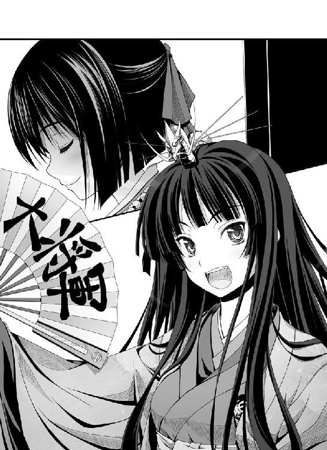
「叡山と高野山が女人禁制と定められたのは、今よりおよそ八百年の昔、平城京の時代のことでおじゃる。八百年の伝統なのでおじゃる。それを壊すは、日ノ本の神事を司ってきたやまと御所と姫巫女さまの権威を失墜させるのも同然でおじゃる！」
霊山における女人禁制の掟は平城京の時代、『養老律令』によって定められたのでおじゃる。決して女人を蔑視しているのではなくあくまでも仏教の戒律を守るためでおじゃる......と前久はとくとくと説明した。
「このえ。『ようろうりつりょう』では、おのこのてらにおける『にょにんきんせい』と、あまでらにおける『だんしきんせい』を、ともにさだめていたときく。ならば『だんしきんせい』のおきてのほうだけがすたれ、『にょにんきんせい』のおきてだけが、のこっているのはおかしい」
前久は、「あう、あう、あうでおじゃる」と身をよじらせた。
もともと約八百年前に『養老律令』が制定された際には、日本の仏教界は男寺と尼寺の二種類の寺院から成り立っていた。仏教にはもともと「男女の僧は性的に交わってはならない」という厳しい戒律があったので、日ノ本の神事を司るやまと御所は男寺への女性の立ち入りと、尼寺への男性の立ち入りをともに禁じたのだった。
ところがこの国では尼寺は時代とともにすたれたため、「男子禁制」の掟のほうは忘れられていった。
そして「女人禁制」の掟だけが、仏教伝来以前の霊山信仰と結びついて、もともとの制定理由も忘れられたままに残っていったのである。
（ままままさか、幼い姫巫女さまがかような故事をご存じだとは......）
前久が「いやしかし女人は不浄と昔から言われているのでおじゃる」と苦し紛れに反論しようとするが、姫巫女はくすりと笑いながら、こう言い返した。
「このえ。にょにんがふじょうであるから、えいざんにはいれぬというのならば......ちんがえいざんにはいっても、えいざんをけがすことになるのであろうか？」
「はうっ？ そそそ、そのようなことはござりませぬでおじゃる！ 尊き姫巫女さまを不浄などと申す者には必ずや神罰がくだるでおじゃるー！」
「ならば、にょにんきんせいのおきては、あくまでもそうりょがかいりつをまもるためのものにすぎぬのであろう」
「......そ、そ、その通りでおじゃります～！」
前久は冷や汗を流しながらひたすらに平伏するしかない。
「そもそも、やまににょにんがはいってきたくらいで、かいりつをやぶってしまうのであれば、それはそのそうりょのしゅぎょうぶそくというもの。にょにんには、つみなどない。そうではないか？」
（なんという賢きお方。もはや麻呂は反論できないでおじゃる！）
前久は、ついに抵抗を諦めた。
「おーっほっほっほっ！ 文句はありませんわね、関白さん？ それではこのい・ま・が・わ・よ・し・も・とが、姫巫女さまに成り代わり叡山の根本中堂にて和睦の儀式を執り行わせていただきますわ！」
今川義元のカン高い笑い声に続き、姫巫女の言葉。
「おだだんじょうに、つたえてほしい。ゆめは、ただひとりでみるものではない。さがらよしはるたちをたいせつにせよ、と」
「ええ、ええ。お言葉の意味はよくわかりませんけど、御意ですわ！」
この時。
（またしても窮地を脱したか織田信奈......かくなる上は、さらなる強敵を召喚するしかないでおじゃる）と近衛前久が内心新たな悪謀を企てはじめていることを、御簾の向こう側に鎮座している姫巫女は知ることができなかった。いや、そもそも公家たちはそのために御簾を設けているのだ。
※
十二月十三日。
季節はすでに冬本番。
一面の雪化粧を施された叡山の山道を、八百年の掟を突破して意気揚々と登ってくる姫武将たちの集団があった。
「見晴らしいいわねー！ ちょっと寒いけど、登ってきた甲斐があったわね！」
「叡山より眺める京の町並みは九十五点です」
「おーほっほっほっほ！ いいですか信奈さん？ このわ・ら・わが姫巫女さまから御綸旨をいただいて参りましたのよ？ 二条城に金のしゃちほこを飾らせていただけるかしら？」
「義元さま義元さま。まだ浅井朝倉との戦いが終わってもいないのに、それは完全な無駄遣いです～」
「あらあら元康さん。でしたら、銀のしゃちほこで我慢してあげてもかまいませんわよ？」
「やれやれ。一時はどうなることかと思ったぜ」
「くすんくすん」
織田信奈と、そのかしましい家臣団であった。
ほとんど姫武将ばかりの集団だが、われらが相良良晴も交じっている。
「見て見て！ サルの親子がいるわよ！ あんたの仲間かしらね」
「うるせえ。あれはニホンザルだ」
一同は、大騒ぎしながら根本中堂に到着した。
お堂を取り巻き主君を護衛している浅井朝倉の足軽たちが、
「あ、あれが織田家の姫ぎみ......き......綺麗なお方やなあ......」
「柴田勝家に丹羽長秀、明智光秀。揃いも揃って、凄いべっぴんさんや」
「あのサルだけは許せん！ あんな綺麗どころの中に混じって、うらやましい！」
「けしからん！」
「相良良晴！ 必ずや戦場にて討ち取ってくれるわ！」
と口々にどよめく。
やまと御所からの御綸旨によってしぶしぶ武器を捨てた僧兵たちも、
「な、なんと香しく艶やかな姫武将たちか！」
「若く美しく気高く......まばゆいばかりじゃ。現世も捨てたものではない」
「いや。むしろ下界こそは極楽浄土なのかもしれん」
「......拙僧、還俗しようかな、でござる」
「約一匹、サルが交じっておるのが許せんが」
「死ね！ 死んでしまえ、相良良晴！」
こちらも、きらびやかな織田家の姫武将たちを思わず伏し拝みながら、けしからん境遇の良晴に対して敵意をむきだしに。
「なんだか、俺ばっかり憎まれている気がするぜ......なんでだっ？」
「くすっ。それじゃお堂に入りましょう、サル」
すでに浅井久政と朝倉義景は印を押し終えており、あとは信奈が印を押すばかりだという。
だがしかし。
根本中堂の門の前に立ちはだかる者が、二人。
若狭の少年陰陽師・土御門久脩と、そして「がはははは。ひっかかったな！」と金棒を振りかざして高笑いしている正覚院豪盛。
「なによ、あんたたち。わたしたちは和睦しに来たのよ。姫巫女さまの御綸旨を無視してまで、まだ戦うつもり？」
「すでに浅井朝倉どのは御綸旨を受けられ、和睦証書に印を押しておるわ。そして拙僧は約定通り、土御門どのを引き渡しに参っただけ。ただし──引き渡しはするが、その後のことまでは約束しておらなんだのう！ うわははははは！」
そうとも。このボクはキミたちに降伏するとは一言も言っていない......ここでキミたちを倒すつもりだよ、と土御門久脩が傲慢そのものといった表情で言い放った。
「さあ土御門どの、思う存分にこの穢れた女人どもへのお仕置きを──お願いいたす！」
ずっこい糞坊主ね！ 卑劣です！ 御綸旨を無視するおつもりとは言語道断です！ と、土壇場で騙された信奈たちは烈火の如く大激怒。
「ふふん。叡山は素晴らしい......京に流れ込んでいる大龍脈から立ちのぼる〝気〟を思う存分吸収できる、指折りの龍穴地帯だよ。ボクが操る式神どもの力は、若狭での十倍......いや、二十倍にはなっている。竹中半兵衛はいるかい？」
わたしです、と小柄な子馬に乗ってとっとことっとこ山道を登ってきた半兵衛がおずおずと手をあげた。
「キミが菩提山の臥龍くんか。〝今孔明〟と呼ばれているそうだが、しょせんは傍流の田舎陰陽師。翻ってこのボクは、始祖さま・安倍晴明公に連なる名門・土御門家の当主。どちらの術が上か、勝負しようじゃないか」
良晴たちが「しつこいガキだなあ～！」と激怒するが、信奈は「なにこの子供は」としれっとしている。
あいつの繰りだす低級式神は鉄砲に弱いんだぜ、なにも半兵衛ちゃんを危ない目にあわせることはねぇと良晴が信奈に耳打ちするが、和睦の席ゆえ、鉄砲はない。半兵衛は子馬からよたよたと下りてきて「わかりました。勝負しましょう」とさらりと言ってのけた。
「は、半兵衛ちゃん。危ないぜ！ こいつが繰りだす式神はとんでもねえ数なんだ、しかも若狭で戦った時よりも格段に手強くなってるはずだ」
「良晴さん、だいじょうぶです。おかげさまで体の具合もすっかり良くなりましたので、清水寺で倒れてしまった借りをお返しする時です」
半兵衛ちゃんが妙にやる気だな......と良晴は首を傾げた。
「でもな、半兵衛ちゃん」
「ふふ。ほんとうに、だいじょうぶですから」
「さあ、臥龍くん。それでは勝負と行こうじゃないか」
式神軍団、召喚！
土御門久脩は自信まんまん、無数の異形の怪物たちをいっせいに天空から半兵衛と信奈たちめがけて舞い降りさせた。
出た出た！ 化け物が出た！ たいへんだああああ！ と勝家が槍をかまえてじたばたと暴れるが、相手は空を舞う式神ども。
このままでは信奈たちは和睦の席上で壊滅──!?
しかし。
竹中半兵衛、いささかも慌てず、ただ一枚の護符を空へと放った。
「前鬼さん。お願いします」
「言われずとも」
狐顔の貴公子・前鬼が、土御門久脩の正面へと躍り出た。
「なんだ、また一匹ぽっちかい？ 水坂峠では、よくもボクを騙してくれたね」
「ふん。相良良晴がお前ごときに命をくれてやるわけがなかろう。騙される者が愚かなのよ」
「それにしても無謀だね。いくら人の姿をした高級な式神であろうとも、たかが一匹ではボクの式神軍団には敵わないと思い知ったはずだろうに......式神一匹の力がそれぞれ二十倍ということは、数が多ければ多いだけ急激に力が増大する。キミは足し算もできないのか。これはがっかりだなあ」
前鬼めがけて、すべての式神がいっせいに殺到してきた。
にたり、と前鬼が大口を開いて微笑んだ。
「あいにくだが──わが主は今、万全の体調となっておる。さらに叡山にて召喚された俺の力は、若狭での一千倍にはなるぞ」
「はったりだね。ボクよりも強い力を持った陰陽師は、始祖さま・安倍晴明公以外には存在しない。田舎陰陽師と半人半狐の式神などボクの敵ではないよ」
「やれやれ。土御門も若狭くんだりにこもっているうちに井の中の蛙となったらしい。増長した子供はしつけねばならぬな」
四方八方から襲いかかってきた式神軍団を──。
前鬼は。
「人であった時代の姿も心も忘れた、あさましき鬼ども。闇へ還るがよい」
オン、バサラ、ダルマ、キリ、ソワカ。
千手観音よ、来たれ。
指を蒼天にかざし、呪文をひとたび唱えただけで──。
陰陽師と式神にしか見えない、無数の拳を繰りだし。
ばん！
どんっ！
しゅうっ......！
ぼひゅううぅ......！
式神どもを一匹残らず、瞬時に覆滅していた。
最強陰陽師の座を賭けた勝負は、ほんの一瞬で決着したのだ。
「......な......？ そ、そんな......ば、バカな......!?」
土御門久脩が、後ずさる。
「こんなバカなことがあってたまるものか！ こんな......ぼ......ボクは安倍晴明公の直系の子孫、名門土御門家の当主、日ノ本最強の陰陽師だぞ！ それがこんな、赤子の手をひねるかのように簡単に......」
「ふん。狐の霊力をわがものとすることで栄えた安倍家の血も、数百年も経れば衰えるもの。久脩よ。陰陽師の時代は、この日ノ本を覆ってきた古き闇とともに終わるのだ。いや、わが主とともにこの俺が自らの手で、終わらせるのだ」
前鬼を凝視する土御門久脩の表情が、一変した。
先ほどまでの自信も、式神対決に完璧に敗れてもなお失わなかった矜持も、粉々に砕かれたかのようだった。
いまや、久脩の表情は、恐怖一色に染められていた。
ありえない。
こんなことが......起きうるはずがない。
なぜならば。
いかなる天才であろうとも決して召喚することはできないと土御門家に語り伝えられてきた最強の式神とは、その正体とは──。
「......まさか......まさか、あなたさまは......始祖......さま......!?」
にたあ、と前鬼が狐の笑顔を見せた。
「久脩よ。お前など、この俺から見ればまだまだひよっこ。安倍晴明の末裔を名乗るなど十年早いわ。若狭で一から修行をやりなおして来るがいい」
「うわ......うわあああああああああああ!? ごめんなさいいいいっ!?」
恐怖のあまり年齢相応の子供に戻った久脩は、おしっこを漏らしながらいちもくさんに山道を駆け下りはじめた。
逃げる間じゅう、前鬼が繰りだした見えない千手観音の拳に追いかけれて「ボコボコボコボコボコボコ」と頭を背中をこれでもかと殴られまくり、鼻血を噴きだしながら山道をごろごろと転がり落ち、そのまま信奈たちの視界から消え去った。
「......やれやれ。本来ならば命を奪うところだが、わが主の優しさに感謝するがよい」
「ありがとうございます、前鬼さん！ これで久脩さんも、もう良晴さんを狙ったりはしないでしょう」
「うむ。半兵衛どの。そなたは、よい子だ」
信奈たちが「いったいなにが起こってたの？」「前鬼はなにをしたんだ？ なにも見えなかったぞ」と呆気にとられている中、前鬼は「こーん」と一声鳴いて煙とともに姿を消した。
「そんな、バカなあああああっ!? なぜあの土御門久脩が、かような子栗鼠の如き小娘に敗れたのじゃあ!?」
最後の抵抗も敗れた正覚院豪盛は、とうとう信奈たちに包囲され、追い詰められた。
「ぬおおおお！ ついに根本中堂は女人どもに穢されてしまうのか！ 無念じゃ！ 観音菩薩さま、申し訳ありませぬ！ なにとぞ、この穢れた女人どもに今すぐ、仏罰をお下しくだされええ！ なにとぞ、なにとぞおお！ もしも拙僧を哀れとおぼしめしならば、万策尽きた拙僧を女人どもの魔手からお救いくだされ～！」
身の危険を感じた豪盛は、小心にも得物の金棒を足下に落っことすと「あわわわわ」と巨大な体をぶるぶる震わせ、涙声になって吼えた。
実はヘタレだった豪盛を、ギロッとにらんでいる信奈たち姫武将軍団。
信奈たちの視線は、怒りに燃えていた。燃え上がっていた。
特に、豪盛との一騎打ちに勝てそうになるたびに叡山に逃げ込まれて歯ぎしりしてきた勝家。
そのすさまじい殺気がこもった姫武将たちの視線に気づいた豪盛は、慌てて咳払いし、
「こほん。それでは、拙僧はこれにて」
と、下卑たお愛嬌を振りまいてそそくさと立ち去ろうとした。
ひゅん、どんっ!!!!
「ぐはああああっ!?」
信奈が繰りだした中段蹴りが、豪盛の脇腹......肝の臓のあたりに深々と突き刺さった！
「誰が〝罰当たりな女人〟よ！ わたしたちのどこが穢れているっていうのよ、この糞坊主！」
「その通りです！ 和睦の席上で卑劣にも私たちを暗殺しようとしたお前のほうが、よっぽど穢れているです！ 御綸旨を無視するとはそれでも叡山の僧ですか！ 恥を知れです！」
ゴン、グシャッ！
おでこを光らせながら怒り心頭に発した十兵衛光秀は、容赦なく豪盛の股間を爪先で蹴り上げた。
「うぎゃああああああっ!?」
これには、さすがの巨漢・豪盛も悶え苦しむしかなく、ごろごろと地の上を転がった。
「お......お許しくだされ！ 拙僧が間違っており申したあ～！ かほどに強い女人さまがたが穢れているなどと、二度とたわけたことは申しませぬ！ どうか命だけは！」
「逃がすかあ、です～！」
「みんな！ こいつが二度と逆らえなくなるまで袋にするのよ！」
「おーっほっほっほっほっ！ わらわ、弓矢はからきしですが蹴鞠は得意ですのよ！」
「天下人の振る舞いとしては問題ですが、私の気分は満点です」
「合点承知です、姫さま！ 喰らえ柴田流必殺技──下段足刀〝顔面割り〟ッ！」
ドゴオオオオン！
とどめの一撃──柴田勝家、仰向けに倒れてうめいている豪盛の顔面めがけて情け無用の踏みつけ攻撃！
「ひいいい、姫武将たちがこれほどに強いとはっ!? た......助けてくだされええええ！」
信奈の蹴りも殺人的だが、問答無用に男の急所に致命の一撃を入れた十兵衛ちゃんのほうがはるかにえげつねぇ......だ、だが、勝家はいくらなんでもやりすぎでは？ と、ボコボコにされている豪盛の惨状を眺めながら良晴は震えた。
僧たちも浅井朝倉の足軽たちも、「あの豪盛さまが手も足も出ない......」「っていうか、豪盛さまって意外と情けない男だったんだな～」「妙に嬉しそうだぞ」「柴田勝家と一騎打ちするたびに負けそうになってたし」「要は、根っから女に弱いんだな......」「それで、女人を遠ざけていたのか......」と豪盛の情けなさに呆れながら信奈たち姫武将の迫力に震えあがる。
「半兵衛ちゃん半兵衛ちゃん。止めてあげようぜ」
「でも......怖いです。くすんくすん」
「うふっ。室町の高僧・一休さんはこのような歌を遺されておられますのよ。〝女をば 法の御蔵と 云うぞ実に 釈迦も達磨もひょいひょいと生む〟。男がいくら女人禁制だのなんだのと妙ちくりんな理屈を振りかざして空威張りしようとも、女には決して勝てませんのよ」
松永久秀は、まるで止める気がないらしい。
良晴にも、金ヶ崎以来の鬱憤を大爆発させて暴れる信奈たちを止める度胸はなかった。
しかし、ただ一人......。
「の、ノブナさま！ 暴力はいけません！ これ以上続けられては、あまりにショウカクインさまがおかわいそうです......！」
勇気ある一人の少女が、ズタボロにされて倒れている豪盛の体に自ら覆いかぶさって、信奈たちを制止した。
その少女こそ。
「......フロイス？ そいつはさんざん宣教師を迫害してきた仏僧よ、あんたの敵でしょ？ なんでかばってるのよ？」
ドミヌス会の宣教師、フロイスだった。
「ノブナさま、デウスさまは〝汝の敵を愛せ〟と仰っておられます。すでにショウカクインさまはノブナさまに謝り、深く反省しておられます......わがドミヌス会の修道士にもこのようなお方をときおりお見かけするのですが......おそらくはこの殿方は幼き頃よりエイザンにこもって厳しい修行を続けられてきたため、ずっと女性を誤解なされておられたのです。どうか、この殿方にお慈悲を」
「ま、あんたがそう言うのなら、いいけど？」
「でしたら、光秀も許してやるです」
「オブリガーダ（ありがとうございます）」
フロイスは豪盛をかばいながら、にっこりと微笑んだ。
フロイスに肩を支えられてようやく上半身を起こした豪盛は、
「お、おお......ぼ......菩薩さま......！」
うわーっと大粒の涙を流しながら、フロイスの足下にがばっ！ とひれ伏した。
「拙僧の如きダメ男を救ってくださったあなたさまこそは、まさに観音菩薩さま！ ありがたや、ありがたや......！ なんと、一切衆生をお救いくださる菩薩さまが、南蛮の女人の姿で降臨されたとは！」
「......え？ あの......？」
「観音菩薩さまは三十三の姿に変身なされるとは聞いていたが、実は異国のパードレの姿こそが三十四番目のお姿であられたか！ おお、おお、その輝くような金髪......碧い瞳......まさに菩薩さまにふさわしい美しき異相！ そして、そのあふれる母性を隠しきれないふくよかな乳房！ まだ見ぬわが母とは、きっと、このようなお姿であったろうか！」
「......え？ え？」
「これよりこの正覚院豪盛、あなたさまを一生涯お守り申す！ フロイスさまを守護する武蔵坊弁慶となり申す！ そう......死ぬまで！ ああっ菩薩さまああああっ！」
がばあああっ！ とフロイスの足をかき抱き、頰をすりすりしはじめた豪盛。
そのいよいよ情けない姿に失望した僧たちが、がっくりと肩を落としてわらわらと散っていく......。
「ちょ。や、やめてください!? わ、わ、わたしはデウスさまと結婚した身で......だだだ誰か、助けてください～！」
「なにやってんのよエロ坊主！ フロイスから離れなさいよ！」
「さらにタチが悪くなってるです！ やっぱりぶち殺すしかないです！」
「やれやれ、厄介な敵が味方になったのはいいですが......かえって面倒になりそうなので五十点というところです」
「あたしはまだ暴れたりないよっ！ やっちまえ！ きえーっ！」
かくして。
和睦は、成った。
信奈は、八方ふさがりの窮地を脱した。
小心な浅井久政は和睦の席に姿を見せず、信奈たちが根本中堂に足を踏み入れた時にはすでに叡山を下りていた。
そして。
今まさに根本中堂から出ようとしていた朝倉義景と、織田信奈は、この根本中堂ではじめて顔を合わせた。
大柄な、美青年武将であった。
しかし顔色は透き通るように青白く、視線ははるか彼方をさまよっているようだった。
異様だったのは、義景の背後である。
お堂の壁一面に、『源氏物語』に登場する美しい貴族の女性たち──その立ち姿が、びっしりと描かれていた。
しかもその絵巻物の如き壁画の中央には──信奈そっくりの少女の艶やかな立ち姿が。
「......これは!? 朝倉義景......あんたが描かせたの!? いいの、お堂をこんなにしちゃって？」
「籠城暮らしがあまりに退屈だったので、越前から長谷川等伯を呼びつけて描かせたのよ。ふ、ふ、ふ。それにしても、そなたは等伯に描かせた立ち姿によく似ておる。余が想像した通りの美しき姫君であるな。ついに余は、わが母の面影を重ね合わせられる無垢な乙女を見つけたぞ──美しい。臓腑をすべて抜き取ってそのまま剝製にしてしまいたいほどに美しいぞ」
朝倉義景は叡山に籠城しているうちに、興味を抱いた織田信奈についていろいろと調べ上げ、いつしかまだ見ぬ幻の織田信奈に恋をしてしまったらしい。
「......!?」
ぶるっ......と、信奈は身震いした。
なに？
いったいなんなの、この男？
わが母の面影......剝製......？
なにを......言ってるの？
「よもやこの現世に、余が手に入れるべき女性がいようとは。余は必ずやそなたをわが館へ連れ帰り、艶やかに着飾らせてみせよう......そなたはわが若紫となるのだ。それがわれら二人の宿命」
「ち、近づかないで！」
瞳に狂気を宿した朝倉義景が手を伸ばすが、信奈は怯えて良晴の背後に隠れてしまった。
物怖じしない信奈がこれほどに他人に怯えるのは、ほとんどはじめてのことである。
それほどに、朝倉義景が信奈を見つめるその目つきは、尋常ではなかった。
女に惚れた、とかそういうたぐいのものではない、暗く歪んだ情熱に憑かれた者の眼差しであった。
「サル、こいつなんだかヘンなのよ！ なんで会ったこともないわたしの立ち姿を描かせているのっ？ 剝製にしてしまいたいって、どういうことなの？ 怖いわ、わたし......！」
「落ち着け信奈。いつの時代にもこういうやつはいるものだ。気にすんな」
震える信奈をかばうように抱いた良晴を、朝倉義景は怒りに満ちた目で睨みつけた。
「貴様がサルか！ つまらぬ......つまらぬぞ！ 現世とはいつもこうだ。いそうもない美しい少女をやっと見つけたと思った時には、すでに貴様のような下品で女に手が早いだけのつまらぬ男が虫のようにたかって少女の美を穢している......余が風雅に少女を愛でているうちに、盛りのついたサルに花を散らされて台無しにされてしまうのだ！」
朝倉義景は、憎しみのこもった声で、叫んだ。
「相良良晴。余は誓おう、貴様を必ず戦場で殺してやると！ 織田信奈は現世が生んだ奇跡的な芸術作品。貴様のような痴れ者の手には穢させぬ！ どんなことをしてもわが館に連れ帰り、閉じ込め、余がこの手で着せ替えをし、わが若紫として育て上げる。織田信奈こそは、余の母になってくれる女人なのだ！」
サル......わたし、怖い......！ と信奈が怯えて良晴に抱きつけば抱きつくほど、朝倉義景の怒りは沸騰するようだった。
「次は戦場でお会いしよう、織田信奈。残念ながら今は平安絵巻の時代ではない。一乗谷のわが館に愛らしいそなたを飾るためには、織田軍を壊滅させ、そのサルを狩らねばならぬ。夢をこの手につかむには、生臭い戦を経なければならぬようだ」
悠然と去っていく義景の後ろ姿を眺めながら、信奈は体の震えを抑えることができなかった。
朝倉......義景......。
狂っている。あの男の目は、狂っている。
理屈じゃない。まるで全身を視線でなめ回されたかのように不愉快で不気味だった。
気持ちが、悪い......。
「......サル......怖い......！ あんなやつに捕らわれて館に閉じ込められるなんて、わたし、絶対にイヤよ......！」
「だいじょうぶだ、信奈。朝倉義景との戦、必ずお前が勝つ」
信奈の肩を抱きながら、良晴がうなずいた。
信奈は、上目遣いにおずおずとたずねた。
「ほんとうに？ それって未来をバラしているの？ だったらあんた、打ち首よ？」
「いや、そうじゃねえ。自分の頭の中の世界をひとりぼっちでさまよっている奴に、俺たち織田軍団の仲間たちが負けるかよ。そうだろう？」
そうね、そうよね、と信奈が微笑みを取り戻した。
だが良晴は（朝倉義景、変わり者だが意外に強敵だぜ）と気を引きしめていた。
強敵・朝倉義景との決戦は先送りとなったが、ともあれ最大の危機は乗り切った。
反旗を翻した三好も六角も、しょせん単独では織田家に対抗できない連中。形勢不利と見ればまた逃げ散るに決まっている。
竹中半兵衛が「あわわ～」とお堂の中でひっくり返って〝不滅の法灯〟を倒し、お堂がぶわっと炎上。再召喚された前鬼がお堂の内側にこれでもかと雨を降らせ、八百年灯り続けていた〝不滅の法灯〟をうっかり消してしまうというささいな（？）事件もあったが、すでに正覚院豪盛がフロイスの虜と化して骨抜きになってしまっていたので大事には至らず、叡山の僧たちが「ああああ」と涙目になっただけでどうにか片付いた。
信奈自身も、これでようやく京へ帰還できる。
脇腹の傷口は、もうふさがっている。
（そ、そろそろサルに恩賞をあげなくちゃね......）
ん？ どうした顔が赤いぜ？ と無遠慮にこちらを覗き込んでくる良晴に、信奈は唇をとがらせて言った。
「は、早くねねのもとに帰ってあげなさいよ。あの子、ずっと水垢離してあんたのぶじを祈っていたんだからね」
おう、そうだったな！ と良晴がうなずいた。
「金ヶ崎から戻ってきて以来、俺はずっと陣中だったからな！ 早く顔を見せてねねを安心させてやらなきゃな！」
（ちょっとサル。いくら戦が続いていたからって......わたしに接吻するって約束をまさか忘れているんじゃないでしょうね？）
それはそれでかなり不満な信奈だった。
良晴が「待ってろよ、ねね～！」と叫びながら走っていった直後、丹羽長秀が信奈のもとへそっとよってきて、笑顔でささやいてきた。
「......姫。京へお戻りになられましたら、夜半に相良どのをお呼びなされませ。恩賞を授けられますよう」
「いいの？ あんたたち、わたしとサルが個人的に仲良くするのには反対なんじゃないの？」
「いえ。この長秀、二度とそのような愚かなことは申し上げません。これからは姫と相良どのを応援いたします」
「応援って......ま、万千代、あんたなにか誤解してないっ？ わわわわわたしはただ、しゅしゅ主君として、さささサルに恩賞をあげなくちゃってそう思ってるだけでっ......こ、これは、ただの義務でっ......！」
長秀は、相変わらず照れて意味の通らない言い訳をはじめた信奈の手をきゅっと握りしめて、そして包み込むような笑顔でこう言った。
「......姫。もう誰にも遠慮なさいますな。どうか天下人におなりください。そして、たったひとつの我が儘をお通しください。私は陰ながらお二人を応援させていただきます──姫の夢がかなう、その日まで」
信奈は、「まあ......いいけど......」と口ごもって目をそらした。
長秀の柔らかな笑顔をこれ以上見ていると、涙を流してしまいそうだったからだ。
でも、これ以上意地を張っている場合じゃない......万千代に申し訳が立たない......京に着いたら、サルに恩賞をあげよう。わたしの、はじめての接吻を。
信奈ははじめて、素直にそう思うことができた。
※
「兄さま！ 兄さま兄さま兄さま兄さま兄さま兄さま兄さま兄さま兄さま兄さま兄さま兄さま兄さま兄さま兄さま兄さま兄さま兄さま兄さま兄さま兄さま兄さま兄さま兄さま兄さま兄さま～！ ねねは、兄さまのお帰りをずっと待っていたのですぞ！」
京の妙覚寺。
良晴が宿として部屋を借りているこの寺で、今、良晴は妹のねねにむぎゅ～と抱きつかれて困っていた。
こまっしゃくれているし、寝小便はするし、女の子といちゃいちゃしようとすると邪魔ばかりするし、兄より算術が得意だしで、はっきり言ってうるさいだけの妹だと思っていたが......。
......やべえ。
なんか、ねねのやつが、めちゃめちゃかわいい！
目を真っ赤に泣きはらして......鼻をぐすぐすとすすって......ああちくしょう！
やべえ、俺のほうまで、嬉し涙が出てきた！
戦国時代に迷い込んできた俺にも、ほんとうの家族がいてくれたんだなあ......。
かあああ～っ！ 生きててよかった！ 死ななくて、ほんとうによかった！
とかなんとか、良晴は金ヶ崎から生還できた嬉しさもあいまって、自分を待ち続けてくれたねねをはじめて実の家族のように感じていたのだった。
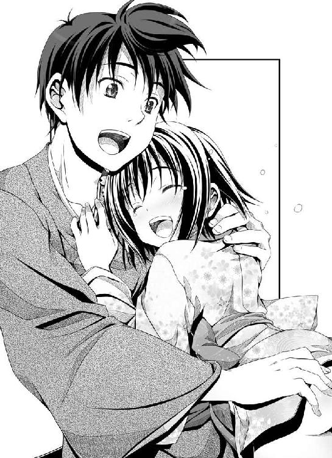
だがしかし、今までリアル妹というものを知らない良晴、（かわいいなあかわいいなあ）とときめいてしまう妹に対していまいちどう接していいのかわからない。
（うーむ。このときめきをどう行動であらわせばいいのかさっぱり分からねー）
とりあえず、頭をなでてみた。くしゃくしゃ。
おおー、困ってるような喜んでいるような微妙な表情がなんともかわいい......！
「ぬぬ。いかがいたしましたか兄さま、いつもと様子が違いますぞ」
「いやいや気にするな、家族への愛情表現だ」
「しかし金ヶ崎での兄さまは姫さまに夢中で、ねねのことを忘れていましたな？」
「いや、死にそうになった時にねねの顔が浮かんだ。俺が生きて戻れたのも、ねねのおかげだ」
「......えっ!? な、なにか悪いものでも食べましたな、兄さま!?」
ねねが照れてる......生きててよかった......なにか大切なことをすっかり忘れている気がするが、とにかく今夜はねねと一緒に帰還祝いだ、と良晴はうなずいた。
「あ、兄さま、お土産の越前名物はありませぬのか？」
良晴の膝を座布団がわりにしながら、ねねが「お土産、お土産」と囃し立てる。
いやあ......帰るところがあるって......家族が俺の帰りを待ってくれているって、すっげぇありがたいことだったんだなあ......ねねを俺の妹にしてくれた信奈にも礼を言わなきゃなあと感激しながら、良晴は風呂敷包みを畳の上に広げてみせた。
「越前ではお土産を買ってくる余裕がなかったが、叡山で名物のごま豆腐とゆばを買ってきてやったから！ さっそく食おうぜ！」
「おおー。ゆばとはなんですかな、兄さま？」
「坊さんが食べる精進料理の食材でさ。大豆を固めたものだ」
「ほほう。しょうじゅんりょうり......豆腐とは違うのですかな？」
「豆腐と違って、わりとかたくて、麵に似ているな」
「わかりましたぞ！ それではさっそく、豆腐とゆばに八丁みそをかけて煮込みますぞ！」
ねねは威勢よくお鍋を火にかけ、そしてさっそくみそが入った壺を出してくる。
良晴は、慌ててねねを取りおさえた。
「いやっだから、みそを入れて煮込んだら名古屋めしになっちまうからっ！」
「むっ。みそをかけねば、いったいなにをかけて食べるというのですか兄さまは!?」
「いいからねね、頼むから名古屋めし以外の味つけにしてくれっ！」
「ダメですぞ！ みそ味にしますぞ！ これ以上みそはダメだというのなら、泣きますぞ！」
「ちくしょう......ちくしょう～！ やっぱ、妹は面倒臭ぇ！」
みそ壺を担いで逃げ回るねね、せめてゆばだけは守り抜くぜ！ とねねを追い回す良晴。
きゃっきゃうふふと、部屋の中を二人仲良く暴れまわった。
「捕まえたぁ！」
「あ～れ～！ 兄さま、放すですぞ！」
「そうはいかん！ みそだけは使わせはせん！ くすぐってやる！ くすぐり倒してやる！」
「あははははは！ ならばこちらは明智さま直伝、殿方破壊攻撃ですぞ！」
ずんっ！
「ぐえぇっ!? ......って、金的を蹴り上げるんじゃねえ！」
「おおっ？ 兄さまが本気で悶絶している？ いかがなされましたかっ？」
「だからっ！ 十兵衛ちゃんの真似なんかしちゃダメだからっ！ うおおおお、苦しいっ～！たっ......助けてくれええ～っ！」
「あ、兄さま？ しっかりしなされ、ですぞ！」
ごろごろごろ。
ごろごろごろ。
悶絶して畳の上を転がりまわる良晴、その良晴のおなかに馬乗りになって「兄さま～」と騒ぐねね。
「ここですか。ここが痛むのですか？ ねねが撫でてさしあげますぞ！」
「やめろやめろ、いろんな意味でまずいからそこには触れるんじゃねえ！ こらっ押すな、痛い痛い痛い！」
「では、こうですか！」
「引っ張るな！ こらこら着物を脱がすんじゃない、誤解されるだろ！」
「しかし脱がさないと怪我の具合がわかりませんぞ！」
「ダメだってばー！ ちくしょう、やっぱ妹の相手をするのはたいへんだ！」
とはいえ、今夜ばかりはねねになにをされても笑顔でいられる良晴だったが。
「良晴さん......あの......五右衛門さんからの手紙をお持ちしました。さっきからなにをなされているんですか？」
「......ねねと急に仲良くなりすぎ......あやしい」
竹生島から浅井長政と津田信澄を救出しようと乱破仕事を続けている五右衛門から、良晴宛てに中間報告が届いた。
その手紙を持って、半兵衛と犬千代が良晴の部屋を訪れたのだ。
だが良晴はなぜか、いつもはわりと邪険にしているねねを相手にずいぶんと楽しそうだった。
っていうか、ねねが良晴の股間をまさぐっているように見えるのはなぜ？
「良晴さん？ もしかして......女好きがこうじて、とうとう、幼いねねさんに......？」
「......正覚院豪盛どころではない、まさしく女の敵。正義のお犬さまが、成敗する」
「え？ 違う。誤解だ。なんでもないんだ。なんでもないんだって！」
犬千代と半兵衛が、良晴の体からねねをひっぺがそうと飛びついてきた。
「なにをなさりますか、ですぞ！ ねねは兄さまと遊んでいるだけですぞ」
「騙されているんです、ねねさん！ 良晴さん、そんなに女の子に飢えているのでしたら......わ、わ、わたしが......その......と、歳はねねさんよりも重ねていますが、ね、ねねさんと、に、に、似たような体型ですし......」
「半兵衛ちゃん、なにもかも誤解だから！ なんで着物をはだけるんだよ？」
「......たいへん......今すぐ良晴をこちらの世界に引き戻さないと、永遠に幼女しか愛せない男になってしまう......犬千代も協力する」
「なんで抱きついてくるんだよ犬千代？ つーか、お前も幼女だからっ！ 俺的にはねねもお前も分類学上は一緒だから！」
「......がーん。犬千代は、幼女じゃない......年頃の、生娘......」
「良晴さんの国には、幼い子供しか愛せなくなる〝露璃魂〟というおそるべき病があるとうかがっています。きっと良晴さんもその露璃魂を発病してしまったんだと思います！ すすす少し恥ずかしいですが、手遅れになる前にわたしたちで治してしまいましょう！」
「頼むから半兵衛ちゃん、落ち着いて聞いてくれ！ 俺はそもそもロリコンなんか発病していないし、つるぺたの半兵衛ちゃんと犬千代に迫られたらかえってロリコン化するから！」
「ほほう......兄さまと裸でくっつく遊びですかな？ 面白そうなのでねねも参戦しますぞ！」
「ダメです！ ねねさん！」
「......良晴は悪い男。ねねをここまで調教して......」
「ヘンなことを言うな犬千代！ こら、脱ぐなぁっ!!」
大騒ぎ。
三人の（つるっ、ぺたっ、な）女の子に組み敷かれた良晴は、酸欠状態になりながらも、
（そうだ、思いだした！）
信奈からまだ恩賞のキスをもらっていないことに、ようやく気づいた。
俺はべべべ別にののの信奈ときききキスなんてぜんぜんしたくねーんだけどさ！ しかし早く恩賞を奪わないと、あのどケチ女のことだ、またしてもなかったことにするに違いねえ！
「ぬおおおお～！ なにがなんでも、信奈のもとに行かなければ～！」
英気百倍、元気一千倍！
良晴は、気合い一発、つるぺたな女の子たちのおしくら饅頭からするりと抜け出した！
「きゃあ......」
「おおー。兄さまが燃えておられますぞ！」
「......すさまじい執念を感じる」
「悪いがちょっと出かけてくらあ！」
良晴はそう言い残すと、オリンピック級のスピードで駆けだしていた。
（べべべ別にののの信奈に惚れてるんじゃねーぞ！ おおお俺はただ、家臣への恩賞をケチるあの女の悪癖を矯正してやるためにだなっ！ そうとも、恩賞をケチると家臣団に不満がどんどんたまっていって、いずれは謀反だって発生するんだ！ こここれは家臣としての義務だ！）
走った。
月夜の下を、広々とした砂利道を、全速力で走り続けた。
（たしか信奈は、本能寺にいるはず。俺が修学旅行で京都を見物した時には、本能寺は寺町御池に建っていた。だがあの本能寺は、信奈が宿にしていた本能寺じゃないんだ。「本能寺の変」でもともとの本能寺は焼け落ち、そのあとで寺町御池に移転した。だからこの戦国時代の本能寺は、そう、俺が泊まっている妙覚寺からほど近い油小路蛸薬師にあるはず──）
ああ。
ここは、京の都だ。
修学旅行で訪れた、アスファルトの車道とビル街に囲まれたあの現代の京都じゃねえ。
まっすぐに続く、広い砂利道。
戦国時代の、京の都を、俺は今自分の足で走っている。
良晴は、叫び声をあげたくなった。
信奈。
お前は、桶狭間の戦いも、稲葉山城攻略も、上洛戦も、そして生涯最大の危機だった金ヶ崎の退き口も戦い抜いた。
俺が戦国ゲームで覚えた歴史では、織田信長は将軍・足利義昭と対立して包囲網を敷かれ、苦戦するはずだった。
しかしこの世界の将軍は、お前に命を助けられた今川義元。あの通り、あいつは京に来てからも蹴鞠三昧・風流三昧で、あれでもけっこうお前に感謝してるみたいだし、お前を陥れるような悪謀を練ったりするはずはねえ。
それなのに、いったい誰が裏で糸を引いているのか、それとも「歴史が帳尻を合わせて」いるのか、この世界でも「織田包囲網」は着々と作られつつある......！
俺が戦国ゲームで仕入れた歴史知識も、少しずつ歴史が俺が知らない方向に進みはじめているせいか、だんだん役に立たなくなってきた。
金ヶ崎イベントを防ぐことにも失敗した。
いつか、あるいはもうすぐ、俺はお前の役に立てなくなっちまうのかもしれない。
それでも。
絶対に。
絶対に、「本能寺の変」イベントだけは、この俺が起こさせねえ。
あの一途にお前を慕う十兵衛ちゃんが、あんな謀反を起こすわけがない。
半兵衛ちゃんが言うように「歴史の帳尻を合わせる力」なんてものがほんとうにあるのだとしたら、この世界では十兵衛ちゃん以外の誰かが「本能寺の変」を起こすのかもしれねえ。でも、今の家臣団にそんな人はいなさそうだし......。
では、あるいは、まだ俺が出会っていない誰かが「本能寺の変」を引き起こすのか──。
俺にはまだわからない。
わからないが──絶対に、俺は、お前を守る。
お前が本能寺で死ななかった未来を、俺が生まれ育った世界には存在しなかったもうひとつの未来を、俺はどうしても見てみたい。
きっと、俺は、そのためにこの戦国時代に来たのだから。
備中高松城で毛利勢とにらみ合っていて「本能寺の変」に間に合わなかったなんてへまだけは、俺は絶対にやらねえ。
俺は藤吉郎のおっさんと比べればすべての面で劣るただのボンクラ高校生だが、その一点だけはおっさんに勝っている。いや、勝ってみせる。
たとえ、お前の身代わりに、この体を業火に晒すことになるとしても──。
......
......
......
辿り着いた。
夜の、本能寺。
まるで、城塞だった。
堀があり、高い塀があり、そして「これが町中にある寺？」と目を疑うほどに広い。
なるほど、京で信奈が宿に使うには最適の建物だ。
「よう門番さん！ お役目ご苦労！ 相良良晴が約束の恩賞を受け取りに来たと伝えてくれ！」
「相良さま。お待ちしておりました」
「......え？」
すぐに門が開いて、小姓の案内で中へと通された。
「こちらで、姫さまがお待ちしています」
奥にある一室の前で、良晴は生唾を飲み込んで立ち尽くした。
ゴクリ。
（あ、あれ？ ずいぶんと簡単に辿り着いちまったなあ......信奈、なんだかんだ言って恩賞をチャラにするんじゃなかったのか？ おいおい、いったいなにを考えて......）
いざとなると緊張して、胃は痛むし喉は渇くし心臓はバクバク鳴って今にも爆発しそうだしで、良晴は（帰りてぇ......）と思わず泣き言を言いそうになった。
「いや、いやいやいや！ ここここれはケチ臭い主君に対する諫言にも等しい行為！ ああああくまでも、ききききキスだけだからな！ そそそそそそれ以上のことはやらねえからなっ！で、で、でも、ま、ま、周りに、だ、だ、誰もいないのなら......って俺はなにを言っているんだあ？ うおあああああ～！」
震える手で、「ええい！」と度胸一発、襖をがらっと開けていた。
室内には、ただ一人。
凛と正座した美少女。
白装束の──柴田勝家が、
「うあ。うあうあうあうあうあ......」
すっかり涙目になって、哀れなほどにがたがたと震えていた。
「って、なんでお前がここにいるんだよ、勝家っ!?」
「い、い、いや、だから、ほらっ、お前がなにかの間違いで生きて帰ってきたら好きなだけおっぱい触らせてやるって約束しちゃったから......うああああああ～！ あたしは、絶対にお前はもう死んだ！ って思ってたんだよ～！ まさか、まさか生きて帰ってくるなんてええええ！ しかも、あの約束をきっちり覚えてるしっ！」
「は......はあ～？ そんなノリで交わした口約束なんて、覚えてねーよ!? ってか、信奈はどこだっ!?」
「うあ、うあ、うあうあうあ......さ、さあ！ 触れ！ お、おお、おお、思う存分あたしの胸に触るがいいっ！ ぐすっ......ひぐうぅっ......ぐすん、ぐすん、ぐすん......ああ......助けて......お母さぁん......！」
「いや、だから俺は信奈に用があって......だいたい、そんなに泣くほどイヤなら触らせなきゃいーだろうが！ 俺のほうまで傷ついて泣きたくなってきたっ！」
「ぶぶぶ武士に二言はないっ！ あああたしに切腹しろと言うのか、サルっ!? お前はどこまで鬼なんだあああっ！」
「......触らないと......切腹するの？」
「ああああ当たり前だっ！ 戦場で交わした命がけの約束を破ったら、あああたしはもはや武士ではないっ！ 当然、切腹だっ！ ででででも、さささサルなんかにむむむ胸を触られるなんて、ああもう切腹したほうがよっぽどマシっ......！ いっ......いやあああっ......！」
「......どっちなんだよ。触ったら、信奈に会わせてくれるのか？」
「ぐすっ......ぐすぐす......ああっ、わかったよ！ 会わせてやるよ！ だから、さっさと胸を触ってあたしを解放してくれよっ！」
うーん。
金ヶ崎でこいつとそんな約束をしたかどうか、修羅場だったのでほとんど覚えてないんだけど、しょうがないなあ......。
本能寺に陣取る信奈がラスボスなら、勝家は中ボスってところか......。
（ま、あっさりラスボスに辿り着いちゃうってのも盛り上がりがないし拍子抜けだからな。それに俺は今まで信奈からさんざん恩賞をケチられてきたんだから、ボーナス恩賞くらいもらってもいいよな？）
よせばいいのに、ここで、良晴自慢のスケベ心がむくむくと頭をもたげてきた。
「こほん。ま、まあ......しょうがねーな。触らないと切腹されちまうって言うのなら、触ってやるしかないかな。ひ、人助けってことだ、うん」
「あう、あうあうあう......さ、触るつもりなのっ!?」
「いやまあ、俺はどっちでもいいんだけど。でも織田家最強のお前にこんなところで切腹されるといろいろ困るしなあ」
「ぐすっ......お母さぁん......！ うううううっ......！ いいから早く触ってよ！」
なんだかすっげー悪いことをしてる気分になってきたと思いつつ、良晴は勝家の前に正座。
そして、おそるおそる、両手を伸ばす──。
その先には、メロン級のサイズを誇る二個の大きなおっぱいが──。
「ゴクリ。ぼ、ボーナス恩賞としては最高だと思います。さ、さ、触らせていただきます」
なぜか丁寧語。
良晴は、指を広げて、そしてそびえ立つ宇宙の聖地へとその指を降ろした──！
ぐにゅっ......。
「げ。柔らかい......!?」
「うあ、うあうあうあ......ひゃああっ、ほんとに触ったなこのサルっ！」
「す......す、す、す、すげぇ......！」
まさに気分はアポロ宇宙船から月面へと降り立つアームストロング船長ッ！
今、人類の歴史は変わる！
たぶんあとで勝家にしばき倒されるだろうけど、俺はぜんぜん後悔しねえ！
「も、もっと指に力を入れてみたら、どうなるんだろうか」
むにゅっ。
「ひゃあああっ!? あ、あわわ、ほんとうにサルに触られちゃった......！ も、もう、お嫁に行けないよおお～!?」
「こ、こ、こ、これは......！ 弾力性に富んで、奥から指を押し返してきよる!? なんちゅう、なんちゅうもんを触らせてくれはったんや、勝家はん......!?」
むにゅ、むにゅ、むにゅううう～。
うおっすげええっ、白装束の上からでもデカさがわかるこのサイズ......この柔らかさ......！
「おおおおおっ!? マジかっ、これが、これがほんもののおっぱいというやつなのかっ？ まさしく女の子の神秘！ 生きてて......生きててよかった......！ 感動の涙が溢れてきちまった！」
「さ、サル。あっ......ダメぇ！ 揉むな、そんなに揉んじゃダメだってばっ！ 痛い痛いっ！」
「ああっ、わわわ悪い、思わず興奮して手が勝手に......！ やべえ、手が吸いつけられて離せねえ......！ なんだこれは、いったいなんなんだ～!?」
「こ、壊れちゃうだろっ！ も、もっと優しく触れっ、バカ～！」
「これこそ、われら人類が長年探し求めてきた宇宙の神秘なのかああああ！」
「わわわわけのわからないことばかり言うなっ！ もっとあるだろっ、こういう時に女の子にかける言葉がっ！」
「すすすすまん勝家、あまりにも興奮しすぎて知力が大幅に低下して......！ な、なんて気持ちいい感触なんだ......！ こんな素晴らしいものをずーっと我慢し続けて生きてきたなんて、豪盛は大バカだぜ！ おっぱい最高！」
「あうううう～！ はずかしいから、早く終わって～！」
うぶな二人が完全に舞い上がってもうわけがわからない状態にまでヒートアップしてしまった、その時。
がらっ。
襖が唐突に開いて、そして、こちらもなぜか白装束を着込んでいた信奈が部屋へと一歩、入ってきた。
「......ひ、姫さまっ!?」
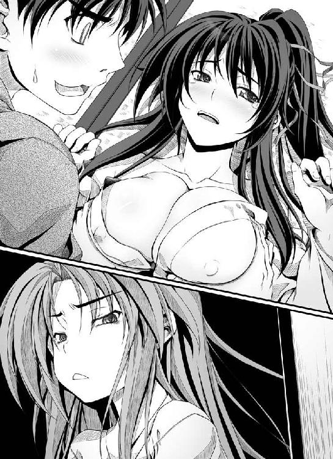
「げぇーっ!? 信奈っ!?」
......
......
......
しばらくの間......月の世界に来てしまったかのような静寂を、良晴は味わっていた。
まるで能面のような無表情のまま固まっていた信奈が、長い長い沈黙を経て、ようやくその唇を開いた。
「......ふうん......そうなの。わたしとの接吻より、勝家のでかいおっぱいのほうがよかったわけ。なあんだ。そうなの。あんたにとってわたしの接吻なんて、六の胸にくっついている脂身の固まり以下だったのね。そうよね、わたしの形がよくて美しい胸よりも、牛みたいな六のデカ乳のほうが好きなんだものね、未来から来たサルのあんたは。未来のサル王国では牛みたいなおっぱいが大人気なんだものね。なるほどなるほど......はぁ......あーなったらこーしようと前もっていろんな場面を想定してきたんだけれど......この展開は、さすがに考えていなかったわ......サルがわたしとの約束を完全に忘れ去って、六のおっぱいを揉みに夜這いをかけてくるだなんて......」
「あの......信奈？」
「い、いえ、違うんです姫さま！ これは夜這いとかそういうんじゃなくてですね、金ヶ崎での約束をですね......あう、あうあうあう......！」
「うっさいわね！ 六！ よくも、あたしの飼いザルにちょっかいかけたわねっ！」
「......う......うあああああ、姫さまが本気で怒っていらっしゃるううう～！ サルに弄ばれてお嫁に行けない体にされた上に、姫さまの寵愛まで失ってしまったああ～！ 今夜のあたしは踏んだり蹴ったりだあ～！」
うわああああん、と勝家が畳に額を擦りつけて泣いた。
「......あら？ 六がわんわん泣いているわ。ははあん......そうなのね。おかしいと思ったのよ。なるほど、サルが嫌がる六を押し倒して無理矢理にいっぱい乳を揉んだのね。悪いのはぜんぶ、サルなのよね。そうなのよね......」
「げえっ？ 違うんだ信奈！ 俺は、お前から恩賞を受け取ろうと思ってだな......おいこら泣いてないで信奈にちゃんと説明してくれよ勝家！」
「問答無用！」
ざんっ!!!!
いったいどこから取り出してきたのか、信奈は名刀「圧切長谷部」を抜き放つと、良晴の首もとを狙って思いっきり振り下ろしてきた。
間一髪、良晴は横へと転がってその一撃を避けた。
「おわっ!? ちょっと待て、今のはほんとにやばかったぜ！ 当たったら死ぬだろうが！」
「女の子を襲う外道を成敗してやるって言ってるのよっ！ ここここれじゃ、さんっざんいろいろ妄想して一人ではぁはぁふぅふぅ悶えていたわわわわたしがバカみたいじゃないっ！」
「えっ？ 妄想？ 何がっ？」
「うっさいわね！ 今日という今日は逃がさないわよ、このエロザルっ！ 死んじゃえ──！」
「かかか勝家、頼むから弁明してくれ！」
「うああああ......姫さまが......姫さまがあたしのおっぱいを触っていたサルに身も世もなく激しすぎるヤキモチを焼いておられるぅ～！ やっぱり......やっぱりサルが好きなんですか、浮気されたら殺してやりたくなるほどに愛しておられるんですかああ、姫さまあっ!?」
良晴は、逃げた。
本能寺を飛び出し、月夜の砂利道を逃げ続けた。
「こら待てぇ！ 人里に迷い込んできた変態乳揉みザルっ！ なんで逃げるのよ、このわたしがじきじきに討ち取ってあげるって言ってるのよっ!?」
「お前、しつこいんだよ～！ 少しは俺の言い訳を聞く耳も持ってくれよおお～！」
「聞かないっ！ 聞かないっ！ ぜーったいに、聞いてあげないんだから！ わわわたしがどどどどんな思いであんたをずずずずっと待ってたと思ってんのよ、そそそれなのになに？ なんであんたは鼻の下を伸ばして六のおっぱいを揉んでるのよッ!?」
「えっ？ 待ってた？ なにがっ？ だれをっ？」
「なんでも、なーいー！ とにかく、あんたは死ねっ！」
ぶんっ。
ざくっ！
うわっ、ケツにかすったっ!?
今回だけは本気だ！
信奈が魔王モードに!?
逃げのびなければ殺されるっ！
良晴は、夜の大通りを駆けながら、吼えた。
「ちくしょう......なんでこうなるんだよ～？ ちくしょう～！！」
「待てえええ～！ この......浮気者ぉおお～！」
その夜......京の町人たちはみな、「叡山を焼き討ちにしようとした第六天魔王が、こんどは京の町中に現れた妖怪乳揉みザルを退治しようと日本刀を抜いて往来を走り回っている」と恐れおののき、良晴が「助けてくれえ」と戸を叩いても決して開けようとしなかったという。
南近江──冬の琵琶湖。
叡山との和睦を成立させ、休む間もなく京から南近江へ兵を進めた信奈は、すでに六角承禎が甲賀へ再び逃げ去ったことを知り、そしてこの南近江の街道で思いがけぬ者と再会した。
「ふっふっふっ。信奈どの。もう心配は要らぬぞえ」
斎藤道三である。
信奈が上洛した際、いったん京へのぼったがそこで借金取りの婆たちに追い回されて美濃へ夜逃げし、武田信玄上洛の噂などもあってそのまま岐阜城を預かっていた義父・斎藤道三は、〝金ヶ崎の退き口〟〝雲母坂での信奈狙撃〟〝浅井朝倉の叡山籠城〟と矢継ぎ早に信奈を襲う危機の連続を岐阜城で歯がみしながら静観せざるを得なかった。
道三がうかつに動けなかった最大の理由は、自分が岐阜城を空けると甲斐の武田信玄が攻め寄せてくるのではないかという恐れがあったからである。
手勢が少ないことなどは、問題ではなかった。
その道三がついに意を決して南近江へ進軍したのは、〝織田信奈、復活〟〝浅井朝倉、叡山より撤退〟という一報を耳にしたからである。
信奈どのが健在であったからには武田信玄は容易に動くまいと踏んだのだ。
「京の危機は去ったが、いまだ南近江には六角承禎軍が跋扈しており、琵琶湖の南岸は反織田勢力の支配下にある。ワシは浅井朝倉の撤退によって南近江に孤立した六角を叩き、分断されている京と美濃を再び街道でつなぐとするわい」
即断即決、わずかな手勢のみで道三は南近江へ攻め込んで野洲川で合戦。〝蝮〟と恐れられた神算鬼謀の采配を振るい、六角承禎軍を壊乱させた。
ひとつだけ道三の計算が狂ったのは、中山道を通って本拠の小谷城へ撤退中だった浅井久政軍が、たまたま六角と道三の戦場に遭遇し、「六角はかつての仇敵だが今は味方ぞ」と道三の手勢めがけて攻め寄せてきたことであった。
兵力差は数倍も劣ったが、道三は戦下手な浅井久政を手玉に取り、浅井軍は算を乱して潰走。浅井久政はほうほうのていで小谷城めざして逃げていった。
浅井久政が割り込んだため、六角承禎がまたも甲賀に逃げこんでしまったのが口惜しいが、この「野洲川の合戦」に勝利した道三は南近江の領土をほぼ奪回したのである。
京に孤立していた織田軍本隊は、道三の働きによって本拠地の美濃と再びつながったのだ。
進軍中に道三に出くわした信奈は、率いて来た軍を丹羽長秀に任せると、全軍に半日の休憩を命じた。
そして、今。
信奈は冬の琵琶湖の東岸に面した安土山の頂上に幔幕を張り、ただ三人で眼下に広がる琵琶湖の絶景を眺めながら夕食に興じていた。信奈とともにいる二人とは──。
「信奈どの。こたびはそなたの危機だというのになかなか力になれず、申し訳なかったのう。なにもかも金貸し婆どもから逃げ出したワシの責任じゃ」
眼を細めて、ういろうをかじっている斎藤道三。
「うふっ。ほんとうのことをおっしゃい。わたくしに再会するのがおそろしかったのでしょう、蝮どの」
くすくすと笑いながら道三に茶を点てている、松永久秀。
道三は「......」と脂汗を流しながら、身震いしている。
「そなたが点てた、この茶......ど、毒は入っておらぬであろうのう？」
「ご心配には及びませんわ。良晴どのにきつく戒められていますの」
「ふむ」
あの男、そなたをも恐れぬのか。たいした肝の座りっぷりよ、と道三が破顔した。
「変わったお方なれど、信奈さまを一途に想う気持ちではわたくしも負けそうですわ」
そなたのは悪女の深情けというのじゃ、と道三。
「あら。あなたに悪人呼ばわりされたくありませんわね。わたくしは主君を追い出して城を奪ったことなどいちどもありませんわよ。ひとたび愛したら、とても一途な女ですわ」
「だから、それがいかんというのじゃ」
「信奈さまに美濃譲り状などをしたためたあなたが言っても、説得力がありませんわ。うふ」
斎藤道三と、松永久秀。
ふっふっふ......くすくすくす、とお互いに微笑みながらもいつ何時命のやりとりをはじめるかわからない二人の梟雄。
「蝮と蠍が昔なじみだったなんて、わたし、ぜんぜん知らなかったわ。この狒々ジジイにいったいどれくらい金を貸したの、弾正？」
そんな二人の間にちょこんと正座しててばさきを「はむはむ」とかじっていた信奈が、安心しきったような幼い笑顔を見せた。
道三と久秀は、目を見合わせて苦笑した。
この二人は、金の貸し借りをしていたわけではない。
かつて互いに惹かれあい、ともに手を取り合って同じ道を歩みたいと念じながらも、最後は互いの野望を果たすために激しく対立し、別離したのだ。
道三は、天下統一というとほうもない野望のために美濃を望み。
久秀は目の前の京にはびこる悪党たちへの復讐の念に凝り固まり、京を支配することにこだわった。道三の「守りにくい京を本拠としてはいかん。美濃で商業を興し軍備を蓄え、時が来れば大軍勢を率いて京へのぼってはじめて天下を統一できる」というとほうもない夢物語を不可能となじった。
道三もまた、「そなたの夢は、ただの私怨にすぎぬ。しょせんはおなご、感情に溺れて大局を見れぬのじゃ。天下盗りの器にはあらず」という心ない一言で久秀を傷つけた。
もう永遠に交じりあうことがないと思われた、二人の道が──。
今、信奈という一人の少女に導かれて、奇跡的に交差したのだ。
「......はて。遠き日のことゆえ、いくら借りたのか忘れてしもうたのう」
「莫大な利息がついていますわ。返済はご無理かと」
「まさか、そなたとこうして味方として再会するとは思わなんだわ」
「ええ。まことに人の縁とは、不思議なもの」
道三は、視線で久秀に伝えた。
昔の怨恨を持ち出すのは、よそう。
互いにおのが野望のため、市井の人としての幸福を求めることなどとうに忘れてしもうた者同士。
ついに、現世で夫婦として結ばれることはなかったが......。
今のワシらには、娘が、おる。
ワシらが果たせなんだ天下盗りの野望を、美しき夢として継いでくれた娘じゃ。
かけがえのない宝よ。
久秀も、二人にしか通じない形で、道三に自分の気持ちを伝えてくる。
異形の自分を恐れることなく母のように慕ってくれる信奈がかわいくて仕方がない、と言いたいようだった。
「見て。叡山の向こうに、夕日が落ちていくわ！」
綺麗ね......と、瞳を輝かせた信奈が西の方角を指さした。
冬の琵琶湖のそのはるか彼方に、夕焼け空が広がっていた。
小白鳥の群れが、湖面から次々と飛び立っていく。
道三と久秀は、この時、信奈と心をひとつにしていた。
（いつまでも、こんな静かでのどかな時間が続けばいいのに......）
と。
「この琵琶湖のずっと向こうに、竹生島があるのね。わたしの弟と浅井長政が捕らわれている島だわ」
「さぞご心配でしょう、信奈さま」
「ううん。乱破の五右衛門がまもなく二人を救出してくれるはずよ。なにも心配することはないわ。二人がぶじに戻ってきたら、すぐに天下布武の戦いを再開するんだから！」
「しかし信奈どの、こたびは久秀にずいぶんと強い秘薬を飲まされて夢うつつであったようじゃが......くれぐれもこの女が調合する薬には用心することじゃぞ」
「うふ。ですからそのことはもう良晴どのにこってり叱られましたわ。今後は慎みます」
「久秀よ。かわいいからといって子供を甘やかしすぎるのもよくないのじゃぞ。三好長慶もそなたの劇薬で健康を害したようなものじゃ。いいかげんに大人になれい」
「どうでしょう。どうやらわたくし、いつまでも大人になりきれないみたい。生涯、夫を持たなかったからかもしれませんわね」
「......う......恨み言は、いいっこなしじゃぞ......」
小白鳥の群れが夕焼け空の中を飛んでいくその影を眺めながら、信奈はつぶやいた。
「ほんとうに、綺麗だわ......まるで夢の世界ね」
そして、お気に入りの謡曲を口ずさむ。
「〝人間二十年、下天の内をくらぶれば、夢幻のごとくなり、ひとたび生を得て、滅せぬ者のあるべきか〟って言うじゃない。人の一生はとても短くて、そして終わりが来る。この現世もいつかは必ず終わってしまうはかない夢。わたしが弾正の秘薬を飲んで眠りながら見ていたあの幸せな世界も、夢。どちらの世界も、つかのまの夢であることに変わりはないわ」
しかしのう......と道三が口を挟むよりも早く、信奈は笑顔でうなずきながら言葉を続けた。
「でもわたしは、この現世の夢のほうがずっとずっと好きだわ！ だって、わたしと一緒に同じ夢を見てくれる人たちがいるんだもの！ どれだけ幸せな夢でも、ひとりぼっちで見ている夢はとても寂しいの。わたしは──たとえはかない夢であろうとも、なにもかもがわたしの思い通りにはなってくれない世界であろうとも、あの生意気なエロザルがちょっとばかり浮気者でおっぱい星人を名乗っていても──わたしは、みんなと一緒に生きているこの現世がいちばん好きよ！」
道三も久秀も......。
言葉のかわりに、信奈の頭を優しくなでていた。
ほんとうに。
いつまでも......いつまでもこの穏やかな時間が続けばよいのう、と道三は祈った。
「先輩。私たちも信奈さまと一緒にたこ焼きをいただくです。わが旧主・道三さまともしばらくお会いしておりませんでしたし」
「空気を読めよ、十兵衛ちゃん。そっとしておいてやれ」
「うーん、それもそうですね。ところで先輩、金ヶ崎で貸してやった種子島五十丁、いーかげんに耳を揃えて返すです！」
「悪い。種子島の数は、その......半分になっちまった......」
「利息はトイチですよ？ さっさと返さないと、雪だるま式に借金が膨らむですよ？」
安土山のふもと。
信奈たちを遠まきに守っている良晴と光秀が、相変わらずの漫才に興じていた。
「しかし、十兵衛ちゃんが織田家初の城持ち大名に出世するとはな......ちくしょう、てっきりこの俺が城持ち一番乗りだと思い込んでいたのに。くっ......悔しいぜ！」
「ふふん。相良先輩など、このお利口な十兵衛光秀の足下にも及ばないです。信奈さまは公正公平な名君、これは当然のご処置です」
「......金ヶ崎でしんがりをやった俺の恩賞が柿一個で、接吻の約束は結局うやむや。それなのに、どうして十兵衛ちゃんが近江坂本五万石を与えられたんだよ？ 納得いかねえ～！ えこひいきじゃねえのか？ っていうか、柿はねえだろ柿は！ もしかして勝家のおっぱいを揉んだ俺への懲罰人事っ!?」
「サルの恩賞なんて柿でじゅうぶん、と信奈さまはお怒りのご様子でしたよ。先輩♪」
「あああ......勝家もあとから『触れとは言ったけど揉めとは言ってないよ！』なーんて言いだして逆ギレして、俺の命を虎視眈々と狙っているし......なんてこった......」
「あれは冗談です。それに、先輩がほんとうにお命を狙われるようなことがありましても、この天才剣士にして高貴でかしこくて美しい十兵衛光秀がこれからもずっとサル人間先輩をお守りしますから♪」
光秀が、にこにこと微笑みながら良晴の手をきゅっと握りしめてきた。
良晴は（まーた、なにか裏でもあるのか？ しかし......こうして素直に笑ってくれると、やっぱりかわいい後輩じゃねーか）と少しばかりどぎまぎしながら、視線をぷいっとそらした。
この時──光秀は、先日、本能寺に泊まっていた信奈に突然呼び出された時のことを思いだしていた。
（あの時、信奈さまは......）
他の家臣を退け、この十兵衛光秀と二人きりで密談をしたです。
「叡山の抑えとして、琵琶湖西岸の坂本を十兵衛に守ってほしいの。叡山に連なり、西近江街道の京側の玄関口にもあたる坂本は戦略上の要地、浅井朝倉の手には絶対に渡したくないわ。十兵衛が思うがままの城を建てなさい」
「御意です。それでは坂本に城を建てさせていただき、城代として浅井朝倉から守り抜くです！」
なにごとにも才能あふれるこの光秀、常に「これからの城普請」について研究を重ねておいたです。
そこで、信奈さまに「坂本に城を築くのでしたら、このようにしたいです」と腹案を述べたです。わがことながら、なんてお利口な。
もはや、山城の時代は終わりです。
種子島による銃撃戦が合戦の花形になるこれからの時代は、城は平地に築くべきなのです。
高地にある山城は、攻め手がまとまった種子島の部隊を繰りだして集中砲火を浴びせ郭を突破した場合、あとは本丸まで陸続きです。
種子島時代の城塞に必要なもの、それは──。
「水」です。
城塞の外側に広大な堀を築いて水を流し入れることにより、敵の進撃を防ぐです。
そして水を使うためには、高い位置にある山城ではなく、川や湖にほど近い平地に城を築かねばなりません。つまり「平城」。そして「水上の城」とも呼ぶべきものです。
「坂本に建てる城は、琵琶湖を背負い、前方には広い堀を構えた『水上の城』としますです。坂本城を琵琶湖に連なる水路の拠点とすることで、信奈さまが美濃から京へ移動なされる時間も大幅に短縮できます。これで清水寺の戦のような危急の事態にも迅速に対応できるようになりますです」
また戦とは無関係になりますが、久秀どのが大和の多聞山城に築かれました四層構造の「天守」なる新奇な建築物、白く輝くまことに美しい宮殿であると日ノ本中の評判です。久秀どのは個人的な趣味でかの天守を考案されたと言いますが、この光秀もいちど大和を訪れ、天守について学び、見るものを感動させる荘厳な天守を坂本の城に建てたいと思うです。乱世はもう終わる、これからは平和の時代が訪れる、と人々に予感させるような立派な天守を──。
「......い、いかがでしょうか、信奈さま？」
「十兵衛、あなたの構想は素晴らしいわ！ 弾正の特技をいただくのはちょっとこすっからいけど、でも、やっぱりあなたって天才だわ！」
「いえいえ。そんなほんとうのことを言われると照れるです」
ああ......またしても信奈さまに褒められてしまったです......自分の才能が怖い、です。
「あなたの思う通りに造ってちょうだい。でもね、坂本城には城代はいらないのよ」
「と、言いますと？」
「あなたに坂本の城を任せるわ。城主になって。石高は五万石ほどになるわ」
「......し、城持ち大名になれと仰せですかっ!? しかし、この光秀はまだ織田家に仕官して間もない新参者！ そ、それに、功績の大きさでは金ヶ崎でしんがりをやり遂げた相良先輩のほうが光秀よりもはるかに大きいです！」
「サルはいいのよ。六のおっぱいなんか揉んで興奮してるようなバカなんだから」
「は、はあ......しかし。この十兵衛光秀が天才でお利口で高貴な血筋の生まれで気高き美少女であることは太陽が東からのぼって西に沈むくらいにたしかな事実ですが、しかしながら相良先輩に比べればたいして活躍していませんし......」
「十兵衛は、我が身の危険も顧みずにサルを救ってくれたでしょう。もし十兵衛が水坂峠でサルの五体が吹っ飛んだのを見てあきらめていたら、サルは間違いなく死んでいたわ」
「はあ......それはその、私は空気が読めないというか、いったんはじめた仕事にしつこく粘着するというか......普通はあそこであきらめるです。た、たまたまです」
信奈さまは、この十兵衛光秀の手をかたくかたく握りしめて、そして、ぽろぽろと大粒の涙をこぼされたです。
「......ありがとう......ほんとうに、ありがとう」
あのめったに家臣に頭を下げられない信奈さまが、こんなにも喜んでくださるなんて。
胸が締めつけられたです。
このお方のためなら、十兵衛光秀はなんだってがんばれるです、と思ったです。
でも、締めつけられたのは、なぜか胸の奥だけではなくて......。
「ありがとう、ありがとう」としゃくりあげながら頭を下げ続ける信奈さまのお姿を見ているうちに......脇腹が、ちくり、と痛くなってきたです。
それがなぜなのか、お利口者の光秀をもってしてもよくわかりませんです。
「これからも、どうかサルをお願い。あいつ、目を離すと危ない場所へ勝手に行っちゃうから......弱っちいくせに、ヘンな勇気だけはあるんだから。でも十兵衛がこれからもずっとサルを守ってくれるのなら、わたしも安心できるわ」
えええっ!? 信奈さまが相良先輩を、家臣として、いや家族としてとても大切に思われておられることは、間違いないです。
でも......まさかこの光秀と相良先輩を──結婚させるおつもりだなんて!? !? !?
こ、困ったです。そりゃ、あれで相良先輩は、お母さんに甘えたがる子供みたいなところがありますし、かわいいといえばかわいいです。す、好きか嫌いかと二者択一を迫られたなら、そ、そりゃ、まあ、き、嫌いではありませんし......す、す、好きかどうかはちと微妙ですが......でもお母さんと離ればなれになってしまわれた先輩には、こっそり甘えさせてくれる人が必要だと思いますし......ああ、洞窟でのことを思いだすとおでこがかあっと熱くなってきたです。ひ、人助けのためとはいえ、と、と、殿方と、は、は、肌を重ね合わせてしまった以上、も、も、もう、光秀は先輩のものになるしかないのでは......!?
とにかく十兵衛光秀は、かなり恥ずかしかったですが、信奈さまのお言いつけを守らせていただくことにしたのです。
「御意です。ご命令とあらば、相良先輩のことはこの十兵衛光秀にお任せください！」
「ありがとう。十兵衛がサルを救ってくれたこと、わたし、決して忘れないわ。死ぬまで、感謝するわ」
近江坂本五万石は、この光秀が相良先輩をお救いしたその功績への恩賞──そうとわかれば、引き受けざるを得なかったです。
もちろん、サルには今日のことは言わないで、と信奈さまからかたく口止めされたですが。
「──というわけで、これからはこの十兵衛光秀が先輩の面倒を見てやることにしたです。あまりにも釣り合わない二人ですが、日頃は偉そうな先輩が実はお母さんに甘えん坊のよわよわ野郎だという恥ずかしい秘密を知っているのはこの十兵衛光秀だけですし。ふふふ」
「って、なにを一人でニヤニヤしてるんだよ、十兵衛ちゃん？ いったいどうしたんだ？」
「でもでも、いきなり女の子から結婚を迫るなんてはしたないですよね。これから坂本城の普請で忙しくなりますし。とはいえ段階を経てじょじょに仲むつまじくなっていけば、いずれはほんとうに祝言をあげちゃいそうです。もちろん私はぜんぜん気が進みませんが、主命ですので仕方がないのです......きゃっ」
「わけがわからねえ......城持ち大名になったからってあんまり浮かれてると道で転ぶぜ？」
「いえいえ。坂本城はいずれ相良先輩の城になりますですから、そのあたりはご心配なく」
「はあ？ なんで？」
「それはぁ、嫁入り前の乙女の口からは恥ずかしくて言えないです♪ きゃあっ」
「......またなにかおかしな企みを......俺をおちょくる新たな方法でも開発したに違いねえ......」
この日この時──うかつものの光秀がしでかしている重大な勘違いと、そしてその原因が光秀自身が抱いた淡い初恋の想いだということに、良晴は気づけなかった。
※
「お市、気をしっかり持つんだ。必ず助けは来る」
「はい。勘十郎こそ、お体の具合は......？」
「心配ご無用。ぼくはこう見えてけっこう体力あるからね。ははは」
「でも、声に元気がありません」
琵琶湖に浮かぶ孤島、竹生島。
「お市」こと浅井長政と、もと「お市」の津田勘十郎信澄は、久政の手によってこの竹生島にある地下牢へ幽閉されていた。
男装の麗人・長政が入れられた立派な牢座敷には、一日三度の豪華な食事が届けられ、待遇は最高によかった。長政は信奈との戦に反対したため一時的に捕らわれているだけなのだ。
しかし通路を挟んだ向かいにある狭くて湿気た石牢に押し込められた信澄には、一日一杯の粗末な粥が与えられるだけだった。天井が低いので満足に体を起こすこともできない。
このままでは信澄はいずれ衰弱して、ついには死んでしまうだろう。
長政は牢番に「どうか勘十郎と同じ牢へ入れてくれ」と何度も懇願したが、牢番の兵は困ったように「決して二人を近づけるなと大殿さまからきつく命じられておりますんで」と首を横に振るばかり。
捕らえた信澄の正体が男であったことを知った浅井久政は「おのれ織田信奈め、われらをたばかったか」と激怒し、はじめは信澄を殺そうとした。
だが、信澄にも人質としての価値くらいはあると気づき、長政とともに竹生島へ流したのだ。
むろん、牢は別々である。
ゆえに長政と信澄は、お互いの指を触れあわすこともできない。
闇の中ゆえ、互いの姿も見えない。
かろうじて、声だけが聞こえる距離だった。
戦国乱世の大名家に生まれた者同士という利害を超えて愛しあう二人にとって、捕らわれていることよりも相手の顔も見られず指にも触れられないことがなによりも耐えがたかった。
牢番の足軽も、尾張と近江をそれぞれ代表する美男美女の夫婦でありながらひき離されてしまった二人を哀れに思っているのだろう、二人の会話を邪魔しようとはしない。
今も、知らぬふりをして地下牢に連なる洞窟の入り口まで遠ざかってくれている。
「いいかいお市、気をしっかり持てば耐えられる。姉上が種子島で狙撃されて死んだという噂を牢番から聞かされたが、姉上はそう簡単に死ぬような人じゃない。必ず、助けは来る」
「......はい」
信澄は声を潜めて言った。
「サルくんが、乱破くんをこの北近江に置いていってくれた。脱出の機会はあるさ」
「勘十郎。私は、父から家督を再び奪い返します。義姉上を今こそお救いしなければ、この国の乱れはもはや収拾不能になってしまうゆえ」
「決心してくれたかい。さぞ、辛いだろうが......」
「......近江からほとんど出たことのなかった父は、なにもわかっておられないのです。今はこのような狭い島国で同胞同士が戦っている場合ではないというのに......」
二人が祈るような思いで闇の彼方にうっすらと光る洞窟の入り口を眺めていると......。
ぼむっ！
入り口で、なにかが爆発する音！
やあ乱破くんだ！ と信澄が歓声を上げた。
「浅井氏、津田氏、お待たせしたでござる！ 泣く子もだまるはちちゅかぎょえもん、ただいまちゃんぢょう！」
「川並衆を束ねる幼女の味方・前野某、親分のすべすべのお肌に傷をつけぬため見参！」
「われらが永遠の偶像・親分を守る川並衆も、ただいま参上だぜ！」
「さあ野郎ども、竹生島からお姫さまとお坊ちゃんを脱出させるぜ！」
ついに、待ち人来たる。
信澄と長政は、牢から解放されて、互いにかたく抱き合った。
前途に、光明が見えてきた──！
「そういうのはあとでござるよ！ 今はとにかく逃げきるでござる！」
「おお。そうだったね乱破くん」
「私は、父と直談判せねば」
「浅井氏。まずは安全な場所まで逃げるでござる。交渉はそのあとで！」
「いや。私は小谷城へ向かう。家督を奪い返さねばならぬのだ」
「ダメでござる。浅井久政、すでに話を聞いてくれるような状態ではありまちぇぬぞ！ それにあの男、小谷城にはおりまちぇん！」
「なに？ それはどういうことか？」
「乱破くん、お市、急ごう！ 追っ手が来たぞ！」
ぼむ、ぼむ、ぼむ！
洞窟へと殺到してきた浅井の見張り兵たちを、五右衛門は煙幕を張って次々に振り切っていく。
その後に、前野某が牽いてきた馬に乗った浅井長政、そしてこちらも馬上の人となった津田信澄が続く。
五右衛門と川並衆が救出作戦の決行までに長い時間をかけたのは、完璧な逃走経路を準備するためだった。
追っ手は、あらかじめ川並衆が島のあちこちにしかけた罠に次々と落ちていく。
「さあ、この小舟に乗り込むでござる！」
「かたじけない、乱破くん！」
「......勘十郎！」
二人は、手に手を取って舟へと飛び乗っていた。
「とにかく出発でちゅ！」
舟足が、速い。
川並衆の荒くれ野郎どもが、「えっさほいさえっさほいさ」と呼吸もぴったりに櫂をかき、追っ手の舟をみるみるうちに振り切っていく。
「はーっはっはっは！ 二人を幽閉する場所を間違えたな！ 水の上での工作活動なら、俺たち川並衆は無敵だぜ！」
「〝墨俣一夜城〟の伝説は伊達じゃねえ！」
「やったぜあまりにも完璧だぜ、これで俺たちゃ親分に褒められるぅ～！」
ふぃ～と安堵のため息を吐きながら、五右衛門は「姫はぴんぴんしておられまちゅぞ」と、信奈の身を案じていた信澄と長政に打ち明けた。
「織田軍と浅井朝倉軍は叡山でしばし睨み合っていましたが、ごちょからいただいたりんちによってわぽくいたちまちた。あちゃいぐんは、まもなくおだにちょうへきかんいたちまちゅ」
途中から、いまいちなにをしゃべっているのかわからなくなったが......。
信澄と長政は、琵琶湖の湖面にゆらめく月の影を眺めながら、うなずきあった。
「両家の正面衝突は回避された！ 御所より御綸旨をいただいて和睦に持ち込めたとは、理想的な展開じゃないか。いまいちど浅井家と織田家の絆を修復する時だね。このぼくたちが」
「義姉上が見ておられる、天下布武の夢。いちどはあきらめかけたが、生きて再びこの私も同じ夢を見られるのだな......」
「一応、その夢の末席にこのぼくもいるんだけどね、ははは」
「末席ではない。そなたは、私の夫ではないか。ともに、行こう」
「うん」
冬だというのにずいぶんと熱いでちゅな......あーあー色恋ってのは男前と別嬪がやってるとさまになるもんだぜえ～どうせ汗臭い俺たちには関係ねえ～、と五右衛門および川並衆の野郎どもは二人の仲むつまじさにあてられてヤジを飛ばしまくった。
しかし......。
運命は、変転する。
琵琶湖の岸に到着し、長政たちが舟を降りた時だった。
岸の下に伸びる街道──その街道上を無残に敗走していた浅井軍を、長政たちは岸の上から偶然に目撃してしまった。
いや。それはもはや、軍と呼べる状態ではなかった。
「に......逃げろ～！」
「美濃の蝮が......蝮が追ってくる～！」
「ダメだ、久政さまじゃ蝮の相手にならねえ！」
「小谷城へ逃げるんだ～！」
よほど、徹底的に叩きのめされたのだろう。
どの足軽たちも、傷を負い、血を流し、斎藤道三の幻影に怯えきっていた。
「いったいどうなっているんだ、乱破くん？」
「おそらくは叡山より小谷城へ退却する途中、美濃より出兵してきたさいとうどうちゃんのぐんぜいといくさになり、まけたのでちょうにゃ」
「美濃の斎藤道三は、わずかな手勢しか率いていないはずだったが......」
「名うての戦上手と、有名な戦下手。指揮官の差がこれだけあれば」
「数倍程度の兵力の差など、問題にならない、ということかい？」
そして。
そんな敗走兵たちの群れの中に、手傷を負って馬上でうめいている浅井久政の姿も見えた。
久政は、悔し泣きしているようだった。
一子・長政に天下を盗らせるために、戦下手の小心者でありながらあえて一世一代の勇気を奮い起こし、立ち上がった。
にもかかわらず、ほとんど手にしていたはずの信奈の首も取れず、道三との遭遇戦に無残に敗れ、浅井家の運命はいまや風前の灯火。
自分にいま少しの戦の才があれば......これでは長政に申し訳が立たぬ......と久政はうちひしがれているのだった。
呆然と浅井軍の潰走を眺めていた長政たちのもとへ、浅井家の三家老が駆け寄ってきた。いずれも歴戦の兵ではあるが、このたびの道三との戦では指揮官の統率力の差ゆえに武勇を発揮できず、それぞれが深手を負っていた。
「おお......あなたさまは、長政さま!?」
「猿夜叉丸さま！ まさか父君をお迎えに来ていただけるとは！」
「なにとぞ、浮き足だっている足軽どもの前にお姿をお見せくだされ！」
「この窮地、長政さまがおらねばもはや脱することはできません！」
「久政さまは小谷城に戻り次第、浅井家を滅ぼした責を取って自刃なされるおつもり！ しかしここで竹生島遠島の件を水に流してくださり、猿夜叉丸さまが陣頭に立てば......」
「浅井家は救われまする！」
長政は返答に窮した。
今、目の前で、浅井家が滅び去ろうとしている。
織田方からのこれ以上の追撃はないようだが、もはや久政自身が自決を覚悟しているようだった。この三人の家老もまた、浅井家と運命をともにする覚悟なのであろう......。
父・久政も、家老たちも、この猿夜叉丸こそが天下人にふさわしい英傑と信じてくれたからこそ、織田家に反旗を翻したのだ。
織田信奈と自分の器の差を、英邁な長政自身はすでに痛いほどに知り抜いていたが......。
父を。そして、自分を信じてくれた家臣たちを見捨てるのは、あまりにも忍びなかった。
「長政さま！」
「......わかった。浅井家の当主に戻ろう......」
「承知つかまつる！」
「御意！」
「これで浅井家は救われるぞ！」
戦国大名・浅井長政の運命は、この時、大きく暗転したといっていい。
驚いたのは、信澄である。
「お市!? それではきみは、織田家と戦う道を進むというのかい？」
「......父親と家臣団が死んでいくのを黙って見ているわけにはいかない。すまない、勘十郎」
浅井長政は足軽兵が牽いてきた白馬に乗ると、顔を伏せたまま小谷城へと馬を走らせた。
「そうだったのだ。私の名は、浅井家の当主・浅井長政。お市とは、はかない夢であったのだ──勘十郎よ、さらば......」
信澄が、徒で追いかける。
「待ってくれ、お市......！ きみはもう猿夜叉丸ではない！ ぼくの妻、お市なんだ！ きみは姉上を裏切り、このぼくを敵に回して戦うというのか......！」
だが、信澄は追いつくことができなかった。
われ先にと敗走してくる足軽兵の波に呑みこまれ、前進を阻まれたのだ。
長政は、信澄の呼びかけに応えることができず、自らの唇をかみ破りながら信澄を振り切った──。
「そんな、バカな......戻ってきてくれ......お市......！ お市......！」
土埃の中に蹲る信澄に、前野某たち川並衆の荒くれ男どもは、かける言葉がなかった。
五右衛門だけが、悲しげに長台詞をつぶやいている。
「人は、すべての実を拾うことはできぬでござる......浅井長政とお市、いずれかをえらべば、いじゅれかをちゅてねばにゃらにゅ......ちょれが、よのちゃだめというもにょ」
──かみかみだった。
※
東国──甲斐国。
この山国には、戦国大名が本拠にするような巨大な城塞は存在しない。
躑躅ヶ崎館。
鎌倉・室町時代の風情を残す、簡素な武家屋敷。
甲斐源氏の嫡流、武田家の第十九代当主・武田信玄晴信は「自らの家臣団こそが武田の城である」という意味の「人は城、人は石垣、人は堀」という名言を口にし、その言葉のとおり決して本国・甲斐に巨城を築かなかったと言われている。
さすがは名将・武田信玄......と、戦国の人々は感心していたという。
だが、それは実は──ただの噂。
武田信玄は、そのような人間ではない。
本拠など躑躅ヶ崎館でじゅうぶん。防衛用の巨城など金と労力の無駄。
信玄は、なぜならば、他国を攻めることしか考えていなかったからだ。
「領国に敵を迎えての防衛戦など、無駄で無意味！ 戦は国の外でやるものだ！ あたしは攻めて攻めて攻めまくるのが性に合っているからな！」
そう。
武田信玄、そろそろ二十歳になるかならぬかというお年頃のこの姫大名は、甲斐守護職という伝統ある名門に生まれていながら、これまた乱暴者だった父親に似て根っからの戦好き。
人間そのものが、好戦的。
物心ついた頃から、仏の教えなどほっぽり出して孫子の軍学ばかりに夢中になっていた「全身戦国大名」にして、武道の道でも天才児ぶりを発揮。一対一の勝負において敗れた経験はこれまでない。唯一、越後の龍・あの上杉謙信と引き分けたことがあるだけである。
全身が野望のかたまりである信玄は父親を追放して家督を奪うや否や、さんざん隣国信濃にちょっかいを出し、あまりの無法ぶりについに怒った「正義の味方」越後の上杉謙信を相手に川中島でいつ果てるともしれない死闘を繰り広げ、それまで全戦全勝だった一騎打ちにおいて初の引き分けを記録。だがそれまであまりにも強すぎて退屈していた信玄は「謙信、超つぇー！ あたしにもいよいよ好敵手が現れたか！ こうでなくちゃ楽しめん！ あはははは！」とますます英気りんりん殺る気まんまん。
だが領土欲や野心のかけらもない上杉謙信とは対照的に、信玄は防備が手薄になっていると聞くや東の上野にも手を出し、同盟相手だった今川義元が滅びたと知るや否や同盟をあっさり破棄して今川家の本国・駿河を横取りし、さらには飛驒に遠江にと「攻撃こそ最大の防御！」とばかりにあたり構わず出兵しまくって阿修羅のごとく戦い続け領土を切り取り続け、いまや武田家の領土は百二十万石を優に超えていた。
まさに、武田信玄こそは押しも押されもせぬ戦国一の強者。
信玄個人が醸し出す強烈なカリスマ性によって、家臣団の統率も完璧。
無敵の騎馬隊を中心とした甲州軍団は、質量ともに戦国最強。
しかも、信玄に絶対的な忠誠を誓う武田家臣団はキラ星の如く、それぞれが優に戦国大名をつとめられるほどの実力者揃い。
その武田信玄がついに動いたのは、根本中堂の火事事件が誇大に喧伝されて流れてきた「織田信奈が叡山を焼き討ちにした」という誤報がきっかけだった。
やまと御所におわします姫巫女の実兄、叡山の天台座主をつとめる高僧・覚恕が、この時おりしも甲斐をたずねており、「あたしも、いつまでも甲斐の山猿とか言われてんのがシャクなんだよなぁ。そろそろ高い官位とか〝大僧正〟の肩書きとか、そういうハクがほしいぞ！ かっこいいよなぁ、〝ダ・イ・ソ・ウ・ジョ・ウ〟！」と己の野望をさらさら隠すつもりのない信玄から接待を受けていた。
甲斐は米が採れない貧しい国だったが、信玄特有のヤマカン一発でみごとに金山を掘り当ててからは毎月使い切れないほどの金がじゃんじゃん出てくる戦国黄金バブルの真っ直中。
しかも信玄はその金を惜しげもなく湯水の如く戦争に投じてさらに領土を拡大し、新たに得た領土にはガンガン予算を投じて治水工事を施し田畑を整備し、するとますます生産力が向上して人が集まり金があまるようになり......という実に豪快な拡大主義政策を推し進めるのが大好きな一種の内政マニア。実は信玄、戦も好きだが内政も涎が出るほどに大好きなのだ。まさに文武両道の名将。むしろ、この内政好きと上杉謙信好きが戦国最強最大のカリスマ武将である信玄の上洛が遅れた原因といっていい。新領土で行う綿密な内政にかける時間と労力、そして毎年のように川中島で謙信相手に繰り返す華の決戦イベントさえなければ、信玄は家督を奪ってからものの五年で天下を統一していただろう。
それほどに、信玄が率いる甲州武田軍団は、強い。
上杉謙信の強さは謙信ただ一人の強さであるが、信玄は一騎打ちでも謙信の武に匹敵し、さらには統率力・政治力・家臣団の質量と忠誠心の高さ、なにもかもが最強レベルにあったのだ。
まさに、戦国乱世の覇王。
ばんばん地元に大金を落としてくれる信玄を、民たちも「信玄さまは気前がいいで！」「ぜひうちの村にも治水工事をおねげえします！」「信玄堤の建設をおねげえします！」と慕っていた。
「金は使うためにある」がモットーの信玄は、民に気前がいいだけではない。意外と懐が寒い都の高僧や貴族がたずねてきたら、必ずこれでもかとばかりに接待してやることにしていた。
覚恕が京の関白・近衛前久から「信奈が叡山をまるっと焼いたでおじゃる」という意図的な誤報を届けられたのは、ちょうど躑躅ヶ崎館で信玄と茶会に興じていたその場だった。
「これは一大事。拙僧、もはや帰るところがなくなってしまった」
「織田信奈め、さすがは第六天魔王と呼ばれるだけのことはあるな！ ははは！」
「信玄どの、笑っている場合では」
「泣くな泣くな。あたしがこの甲斐に『新比叡山』を造ってやろう、金閣寺みてーな金ピカのお寺にしてやるぞあはははは！」
そんな品のない叡山は困る......しかも甲斐って......と覚恕は思ったが、信玄の機嫌を損ねると怖いのでイヤだと言えない。
「さてと。謙信ちゃんは越後に巣ごもりしちまったし、今川義元の領土はぶん取ったし、暇だな。よーし。叡山焼き討ちを口実に織田信奈に果たし状を突きつけ、都にのぼってドンパチやるか！」
武田信玄が、すらり、と立ち上がった。
やんごとなき姫武将だが、この時代の女性としてはわりと大柄である。
出家？ なにそれ？ とばかりに長髪を腰まで伸ばし、甲斐源氏嫡流の血筋にふさわしい端正な顔立ちはしかし、飢えた虎のごとく傲岸不遜な視線のために愛らしさよりも猛々しさのほうが勝っている。
武田菱をあしらった小袖をはおったその肢体は肉食獣のように引き締まり、無駄な肉はかけらもついていない。だが年頃の乙女らしく、出るところは出ていて、胸のふくよかさではかの柴田勝家にも負けていない。
その、瑞々しい美貌と日本人離れした肉感的な体と凶悪な視線の迫力が渾然一体となった信玄が放つまばゆい威光に、覚恕は体の震えが止まらなくなった。
「くくっ......右筆、こう書けよ！ おいこら第六天魔王。あたしはそろそろ京にのぼりたくなった！ 手前はこの天台座主・武田信玄さまがじきじきに成敗してやるから、首を洗って待っていやがれ！ とな。よし決まった、ばっちりだな！」
「......あ、あの。天台座主は、この覚恕......大僧正あたりで我慢してくれませぬか？」
「ああん？ ケンカ吹っかける果たし状なんだから、偉そうに名乗ったほうが気分が出るだろうが？ 細かいこと言うんじゃねえよ」
「......う、ぐ」
「勘助！ 勘助はまだ生きてるかあ～!?」
だんっ！ と信玄が床を踏むと同時に、頭を剃り上げた僧形隻眼の小男が音もなく覚恕の背後に現れた。
「──は......。山本勘助、ここに......」
「山本勘助どの、とな？ そなたは先の川中島の合戦で討ち死にしたはず？」
覚恕が驚くが、山本勘助は「たしかにそれがしは川中島でわが策を上杉謙信に破られ、討ち死にするつもりで前線へ突撃しましたが──不可思議なことに命を拾って生き恥を晒しておりました」と陰気に答えた。
「勘助！ こんどの戦は、天下盗りの総仕上げとなるぞ！ あたしにはまだ貴様が必要だ！」
「......は......」
実は生きていた初老の天才軍師・山本勘助、どうしたわけか織田家との全面対決を前にしてもいまいち盛り上がっていない。
「......なーんか、お前っていつもやる気なさそうだよなあ？ このあたしのそそる美貌を見ても燃えてこないっつーか。やりづらいなあ」
「......お館さまのお姿を拝見して年甲斐もなく興奮するなど、下世話な者のやること。そもそもそれがしは出家の身、色欲などとうに解脱しておりまする。ほかの武将とこの勘助を一緒にされては困りまする」
「しょうがねーな。おーい、四郎！ 四郎！ ちょっと来い！」
信玄はぽりぽりと頭をかきながら、義妹の四郎を呼びつけた。
「あ～い。あねさま～」
武田四郎勝頼。
信玄が内政開発する領土ほしさに攻め滅ぼした信濃の諏訪家の姫である。
あまりにもかわいかったので、子供好きの信玄は「こんなかわいい子を追放したり幽閉したりするのはかわいそうだ」と忍びなくなり、すでに諏訪家を滅ぼしてしまったにもかかわらず四郎を自分の義妹とした。
当年とって七歳。
まだ禿の童女である。
「おう四郎。姉の膝の上に乗れ！」
「あ～い～」
「おおお......かっ......勝頼さまあああああ～！」
山本勘助の形相が、くわっ！ と一変した。
隻眼は血走り、頰はいろいろともてあましている男子中学生のように赤くなり、剃り上げた頭からはだらだらと汗がしたたり、はぁはぁはぁと息づかいも荒くなった。
実は、「あとあと面倒なので四郎姫は尼にしてしまいましょう」と勧める家臣団を一喝し、山本勘助ただ一人が「勝頼さまをぜひ、お館さまの義妹になされませい！」と鼻息荒く信玄の気まぐれに賛成したという過去がある。
そう。
生涯独身、軍師の道を貫いてきた山本勘助──。
幼き姫が、大好きであった。
なかでも四郎勝頼は、別格。
勘助は、由緒正しき諏訪大明神の巫女の血をひく四郎勝頼を、生き神さまとして崇めていた。
いや。勘違いしてはいけない！ 彼は決して幼女に淫らな思いなどを抱いているわけではない。純粋に、禿の幼き姫の愛らしいお姿を拝見するだけで日々戦に追われる汚れた魂が浄化され、「姫をお守りするためなら犬馬の労もいとわぬ！」と生きる意欲がまんまんと満ちてきて、それはもう生きながらにして心は極楽浄土へ舞い上がるのである。
純粋な愛なのである！
そこに一片の後ろめたさもないのである！
「おおおおお、勝頼さまああああ！ なんと、なんとうるわしいお姿......！」
「四郎。この姉が教えた通りの言葉を、言ってやれ」
「あい。かんすけ、あねさまを、きょうへつれていってたもれ。おねがいじゃ」
ぺこり、と四郎勝頼が勘助に頭を下げた。
ブハッ！
山本勘助の鼻から、膨大な量の血潮が飛び散った。
「ぬおおおおおおお～!? いけませぬ、いけませぬ勝頼さまああ！ それがしなどに頭を下げてはなりませぬうぅ～！ いかん！ 鼻血が、鼻血が......！」
重ねて言う。
いやらしい気持ちなどかけらもない、純粋無垢な愛情なのである！
「御意にございまする！ この山本勘助、こたびの上洛戦にて悪鬼羅刹と化し、川中島での汚名をそそぎまする～！」
勘助、米つきバッタのように四郎勝頼の御前に平伏。
がばっ！ と顔を上げた時にはもう、楽隠居寸前の枯れた初老の男の空気はどこにもなく、全身から抑えきれない黒い〝気〟を溢れさせる悪辣な軍師の姿に化けていた。
「......くっくっく......！ 日ノ本広しと言えどもお館さまにかろうじて太刀打ちできるは、越後の上杉謙信ただ一人。織田信奈、斎藤道三、松平元康はそれぞれ戦上手なれど、しょせんはお館さまの足下にも及ばぬ者ども。この山本勘助が日ノ本最強のお館さまのもとに軍師としてある限り、必ずや討ち滅ぼしてみせまする」
瞬時に、人が違ったようになった......やはり軍師というのは外道のやる仕事なのだなあ......と覚恕は妖怪変化を見るような目で勘助を眺めていた。
しかし、げにおそろしきは家臣の心を掌握するためなら義妹でもなんでも使う、武田信玄。
「いーい顔になったぞ勘助。あらゆる軍学をその脳梁に詰め込んでいる貴様の易は百発百中。出陣の前に、いっちょ景気づけに占ってもらおうか！」
「御意。しかしお館さま。それがしが操るは、易にあらず。宿曜道と申しまして、星々の運行より人間の天命を読み取る術にござりまする」
「理屈の多い奴だ」
勘助は、星々が描かれている天球図を小物に準備させると、神妙な表情でその天球図を回転させはじめた。
「ふぅむ......」
そして、結果を確認すると、ニタリとほくそ笑んだ。
「──うむ。さいさきよし！ お館さま、西に輝く巨星が地に墜ちようとしております。敵将の命運、まもなく尽きまする」
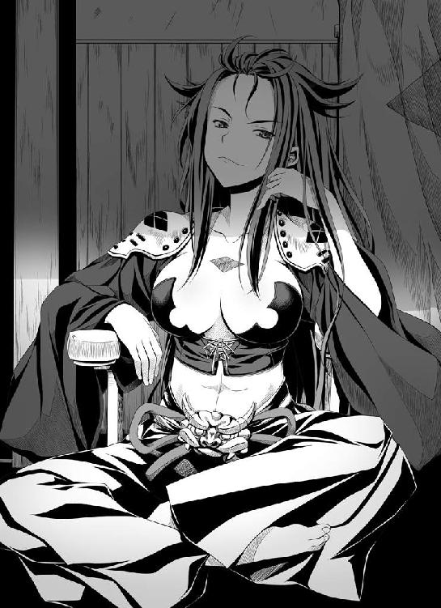
「ほほう。誰の命が尽きるというのか？」
「織田信奈。あるいは斎藤道三。二人のうち、いずれかが！ この両者は、ともに手を携えて天下を望むという天命を与えられてはおりませぬ！ いずれかの星が輝けば、もう一方の星は必ず墜ちねばならぬ。そのような定めにござりまする。今は何者かが両者の天命に介入し、両雄が並び立っておりますが......本来、これはあってはならぬことにござりまする」
信玄が、「ほう......？ 面白い話だな、いったい誰が天命などという不可思議なものに介入しているというのだ？」と身を乗り出した。
「何者が、いかなる術を持って天命に介入しているのかまでは、それがし如きにはわかりませぬ。この勘助にも、宿曜道にも、おのずと限界というものがござりますれば......」
「そうか。ならば、真田の手の者を動かして調べてみる価値はあるな」
「御意」
「英傑たちの天命を動かす者か......面白い。ぜひとも、会ってみたいぞ」
「あいや、お館さま。魔性の者やもしれませぬ」
「天から遣わされた者かもしれぬぞ。あたしにとって、あるいは上杉謙信を超える生涯最強の好敵手かもしれん......なぜかわからぬが、そんな気がする。ふふっ。胸が疼くぞ！」
強い敵と、戦いたい。
ただひたすらに、強い敵と。
信玄にとって天下などは、戦国最強を決する決戦のあとについてくる、おまけのようなものにすぎなかった。
自らその気になれば、簡単に拾い上げることができる程度のものにすぎない。
そうでなければ、上杉謙信と川中島で合戦を重ね、今まで京を放置しておくはずもなかった。
どうやら織田信奈のもとには、まだ巡り会っていない──あたしの運命の敵がいるらしい。
ならば。
上洛、しよう。
瀬田に、武田菱を、そして風林火山の旗を立てよう。
いよいよそう決断した信玄は、最後にたずねた。
「勘助！ これよりなお、道三坊主と織田信奈、この二人がともに手を携え続ければいったいどうなる？」
山本勘助は、ニタリと笑みを浮かべながら、揺るがぬ確信を持って答えた。
「あの両者がこれ以上天命に叛き続ければ、揃って〝破軍の星〟を背負うことになりまする。ふたつの巨星はともに──地に墜ちましょう」
「ようやく父を得られたというのに、哀れだな。それが、織田信奈という娘の宿運なのかもしれん」
野望のために自ら実の父親を甲斐から追放した信玄は、この時ばかりは気の毒そうに信奈を思いやった。
しかし次の瞬間には、信玄はもう戦国最強の覇王の顔に戻っていた。
「勘助！ 武田四天王を全員召集しろ！ 武田の全軍を率いて上洛する！ こたびの戦は、あの川中島を超える壮絶なものになるぞ！」
武田信玄は、まだ見ぬ強敵との邂逅の予感に身震いしながら高らかに唱えた。
茶室の片隅に隠れるように縮こまっていた覚恕は、（織田信奈と武田信玄......戦国の両雄が、いよいよ天下の覇権を賭けて相まみえるというのか）と震えあがるばかりであった。
疾きこと風の如く、
徐かなること林の如く、
侵掠すること火の如く、
動かざること、山の如し。
風林火山の軍旗が、躑躅ヶ崎館の門前にいっせいに掲げられた。
山は──動いた。
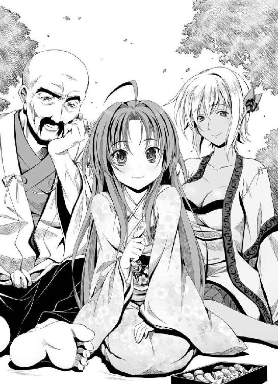
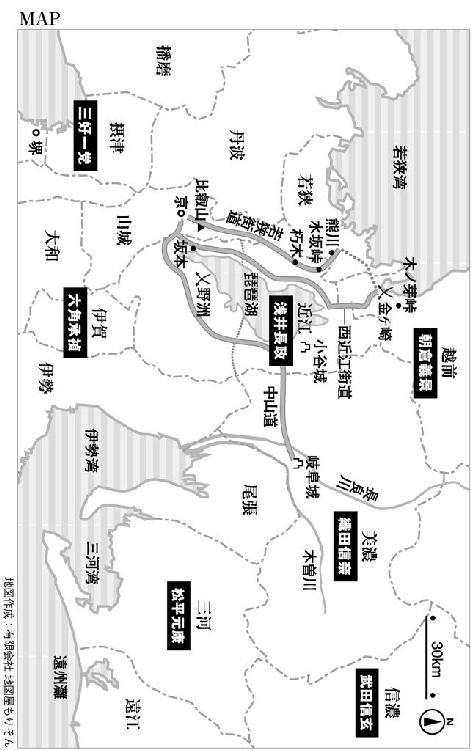
『織田信奈の野望』の４巻は、いきなり金ヶ崎の撤退戦からはじまります。越前朝倉攻めの途中、北近江の浅井家に裏切られて退路を断たれた織田軍は全滅の危機。ここで生還率ほぼゼロのしんがり役を買って出たのが、相良良晴。一世一代の見せ場です。しかし、信奈だって生きて京へ戻れるかどうか、状況はまったく予断を許しません。はたして信奈と良晴は、現世で生きてもう一度再会できるのでしょうか。
というわけでめずらしく緊迫した展開からはじまるこの巻は、信奈と良晴はもちろん、どのキャラも苦戦とピンチの連続。鍵を握るのは敵か味方か松永久秀、そして明智十兵衛光秀です。髪飾りのきんかん、美味しそうです。
もちろん、戦国ラブコメディですからピンチのあとにはご褒美が！ もしも生還できたあかつきには、相良良晴には実にけしからん恩賞の数々が待っています。叡山の僧兵ならずとも「絶対に許さんぞ相良良晴！」と恨み言を言いたくなります。のちのち災いになりそうな恩賞が多い気がしますが。
またこの巻では、信奈と良晴の前に新たな強敵が登場します。まずは、戦国ものでは常に「優柔不断」とか「北陸のひきこもり王」とか呼ばれて評価が辛いあのお方。ある意味、信奈にとっては最凶最悪の仇敵です。そして問答無用に実力ナンバーワン、戦国最強の覇王が姫大名としていよいよ登場。さらには、あの武将が信奈の敵となる運命に......。
この４巻の原稿の執筆と並行して、５巻以後の構想をまとめるために週末、真夏の滋賀県へ取材旅行に行って来ました。安土山（安土城跡）へ登り、続いて安土城の復元天守閣を見学、姉川古戦場を歩き回り、小谷城跡へ、さらにフェリーに乗って竹生島を尋ね、最後は長浜城の復元天守閣へ登るという強行軍でした。安土城は本来は水に浮かぶ城だったそうですが、現在では周辺地域が干拓されたため完全に山城跡になっていたのがちょっと残念です。しかし琵琶湖は雄大で、そして姉川は意外と広かったです！ 歩き回らないといけないのであまりお土産をゲットできませんでしたが、もっとたくさんお土産を買いたかったです。
最後になりましたが今回も美麗絢爛なイラストを描いてくださったみやま零先生、またまた度重なる改稿作業等につきあっていただいた担当さん、そして読者の皆様に御礼を申し上げます。ありがとうございます！
著者
春日みかげ（かすがみかげ）
いよいよ反信奈連合軍と信奈との激闘がはじまるということで真夏に近江の姉川古戦場、長浜、小谷城、そして安土城を巡ってきました。真っ黒に日焼けしました。
イラスト
みやま零（みやまぜろ）
実家が信長ゆかりの地なもので、信奈にも親近感を覚えます。理想の信長俳優はＮＨＫ大河ドラマ『秀吉』の時の渡哲也。Ｓっ気とデレた時の不器用な笑顔がたまりません。
ファンレター、作品の感想をお待ちしています
＜アンケートページはこちら＞
https://emob.jp/m/fi.php?a=gabunko&d=6&i=3799
（このページのスクリーンショットを撮って、ＱＲコードリーダーアプリで読み取ればアンケートページにアクセスできます）
〈あて先〉
〒１０６－００３２
東京都港区六本木２－４－５
ソフトバンク クリエイティブ（株）
ＧＡ文庫編集部 気付
「春日みかげ先生」係
「みやま零先生」係
http://ga.sbcr.jp/
ＧＡ文庫
織田信奈の野望４
春日みかげ
発行人 新田光敏
発行所 ソフトバンク クリエイティブ株式会社
〒１０６－００３２
東京都港区六本木２－４－５
装 丁 株式会社ケイズ（大橋勉／彦坂暢章）
印刷・製本 中央精版印刷株式会社
２０１２年１月１１日 第５刷発行
２０１２年４月１日 電子第１版発行
Mikage Kasuga ISBN978-4-7973-6123-0